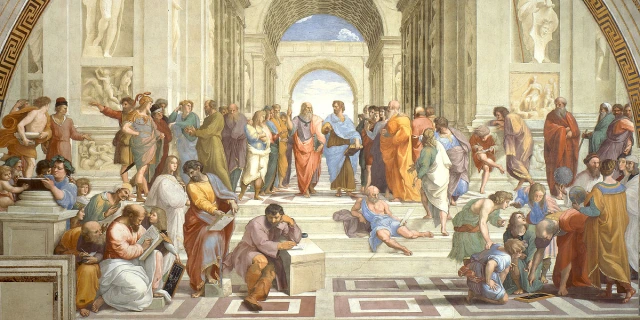
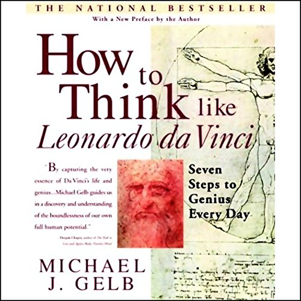

545. asynchronous#
545.1 todoby07012023#
notes (icloud)
workflow (python)
efficiency (chatGPT)
codeathelon (thewill)
545.2 doneby07122023#
natural language processing topic for R03 to NIA
figure out the IRB & dua that MGB/Durand have for PMAP
perceived a mustard seed germinating and blossoming
realized that footnotes will be
theorganizing principle in nwhat is otherwise a stream of consciousness
545.3 gleanedfrom2011-2023#
that i’ve a well-established and matured credo
it is bound to clash with democratic, modern-types
and so i’m lonely without the patton-types
but this should be viewed as a marvelous opportunity
lets channel that princely punctilio in mozart’s music
o! let us dance in the shackles of modern times
move over mary mary, y’all can only dance after your shackles are removed!
07/01/2023#
607. milestone#
dual ctz
17y
md
608. service#
Show code cell source
import matplotlib.pyplot as plt
import numpy as np
# Create data for the skill and challenge levels
skill_levels = np.linspace(0, 10, 100)
challenge_levels = np.linspace(0, 10, 100)
# Define the flow channel boundaries
flow_channel = skill_levels
# Adjust the phase and amplitude of the sinusoid wave
phase = np.pi / 16 # Reducing the wavelength by a quarter
amplitude = 1.5
flow_channel += np.sin(skill_levels + phase) * amplitude
# Define the yellow zone boundaries
yellow_zone_low = flow_channel - 1.5
yellow_zone_high = flow_channel + 1.5
# Define the sinusoid function with the middle yellow line as its axis
sinusoid = flow_channel + np.sin(skill_levels + phase) * amplitude
# Define the anxiety and boredom areas
anxiety_area = np.where(challenge_levels > flow_channel, challenge_levels, np.nan)
boredom_area = np.where(challenge_levels < flow_channel, challenge_levels, np.nan)
# Plotting
plt.figure(figsize=(8, 6))
# Plot the anxiety and boredom areas
plt.fill_between(skill_levels, flow_channel, 10, color='red', alpha=0.3, label='Anxiety', interpolate=True)
plt.fill_between(skill_levels, 0, flow_channel, color='green', alpha=0.3, label='Boredom', interpolate=True)
plt.fill_between(skill_levels, yellow_zone_low, yellow_zone_high, color='yellow', alpha=0.3, label='Flow Channel', interpolate=True)
# Plot the sinusoid function
plt.plot(skill_levels, sinusoid, color='purple', linestyle='-')
# Add arrowhead to the sinusoid line (flipped direction)
plt.arrow(skill_levels[-2], sinusoid[-2], skill_levels[-1] - skill_levels[-2], sinusoid[-1] - sinusoid[-2],
color='purple', length_includes_head=True, head_width=-0.15, head_length=-0.3)
# Plot the flow channel boundaries
plt.plot(skill_levels, flow_channel, color='yellow', linestyle='-')
# Set plot labels and title
plt.xlabel('Agency')
plt.ylabel('Progression')
plt.title(' ')
# Set plot limits and grid
plt.ylabel('Progression', rotation=0)
plt.xlim(0, 10)
plt.ylim(0, 10)
plt.grid(True)
# Set tick labels
tick_labels = ['0', '2', '4', '6', '8', '10']
plt.xticks(np.linspace(0, 10, 6), tick_labels)
plt.yticks(np.linspace(0, 10, 6), tick_labels)
# Add text annotations to label the areas
plt.text(2.8, 7.9, 'Anxiety', color='black', ha='center', va='center', fontsize=12, bbox=dict(facecolor='pink', edgecolor='pink', boxstyle='round'))
plt.text(5, 5.1, 'Flow', color='black', ha='center', va='center', fontsize=12, bbox=dict(facecolor='yellow', edgecolor='yellow', boxstyle='round'))
plt.text(6.2, 2.1, 'Relaxation', color='black', ha='center', va='center', fontsize=12, bbox=dict(facecolor='lightgreen', edgecolor='lightgreen', boxstyle='round'))
# Display the plot
plt.show()

\( Y = \beta_0 + \beta_1 X_1 + \beta_2 X_2 + \cdots + \beta_N X_N + \epsilon_{iid \sim N(\mu, \sigma)} \)
Where:
Agency is lost by client who has left the comfort of autonomy and their home (green) to seek your professional help (red)
Frailty and loss of independence in activities of daily living may account for this change (yline: h/o handling this challenge level in the past)
But more often and in younger persons it is progression of an ailment to a more challenging level beyond ones own coping, skill, or experience that drives one into your care
And:
\(\beta_0\) Reflects conditions at onset (e.g. \(x=0, y=0\))
\(\beta_1\) Slope or rate of progression and \(X_1\) indicates time since onset
\(\beta_2\) Conditional on \(X_2\), which indicates \(function()\): \(y=x\); \(y-line\); or \(x-line\)
Outcomes, \(Y\)
Procedures, \(X_i\)
Values, \(\beta_i\)
Omitted (posthoc: the algorithm classifies five sources of \(\epsilon_i\)):
Residuals (i.e., fit), \(\epsilon_i\)
Distribution (e.g. demographics), \(N (\mu, \sigma)\)
Sampling, \(binary, categorical, normal\)
Behavior
Knowledge, not intented (\(+2\sigma\) Truth)
At-risk behavior (\(+1\sigma\) Rigor)
Human error (\(\pm\) Error)
Reckless behavior (\(-1\sigma\) Sloppy)
Purposeful harm, thus intended (\(-2\sigma\) Fraud)
609. generalize#
education
service
research
these three encapsulate virtually all interactions among humans. as we navigate life’s labyrinth we’ll encounter challenges at varying levels and we may also have skill levels that \(\pm\) change over time (growth if \(+\) or frailty if \(-\)). life gives us the green light when our skills surpass the challenges handed to us, the red light when our skills fall short of the challenges we face, and the amber light when they are matched and we are in flow.
we’ll demand professional help, whether from educators, service providers, or researchers, when our agency is mismatched with our lifes challenges. this might include rehabilitation (if our milestones are regressing), training (if our milestones are lagging), or instruction (if its a right of passage and expected of everyone of age). but our family, friends, colleagues, and even strangers may provide this help.
a service must incorporate a longitudinal plan with scheduled feedback sessions (exams, surveys, followup). it must include a rubric that spells out what to lookout for at each milestone and how to tell whether you are on course to your optimal trajectory of flow. when the service is from a non-professional, then accountability-sessions should be the form of feedback.
610. origin#
points of origin of every educational, service, or research endeavor must be the \(x,y\) coordinate \(0,0\). this may be a retrospective or real-time scenario that helps return to a simpler time and at the beginning of complex process. by walking through this process from the beginning through to its current or projected trajectory, then emotions (anxiety, relaxation, flow) will emerge as the thing to track that provides positive (relaxation), negative (anxiety), or neutral feedback (flow).
from this point of view, neither negative or positive feedback are preffered; rather, its flow that must be the ultimate goal towards which we calibrate our progress and fine-tune our challenge- and skill-levels.
611. bel-air#
the school of resentment produces high-quality works of art because of the strong passions they bring to their creative efforts. however, the democratization of the dramatis personnae so that each characters story gets to be told feels contrived.
geoffrey, aunt viv, and even non-family members get their narrative arc. but here art isn’t imitating life. many folks remain mysterious and others never have their stories told. chatGPT, what sayst thou? any thoughts on tv shows where every character is given their own narrative arc?
chatGPT: TV shows where every character is given their own narrative arc can be highly engaging and satisfying for viewers. Such shows have the advantage of exploring a diverse range of perspectives and storylines, which can make the overall narrative more rich and complex. By giving each character their own arc, these shows provide opportunities for character development and deeper exploration of individual motivations and struggles.
One advantage of this approach is that it allows for a more inclusive representation of different experiences and backgrounds. Viewers can connect with characters who resonate with their own lives or learn about perspectives they may not have previously considered. It can foster empathy and understanding by shedding light on the diverse challenges and triumphs faced by different characters.
From a storytelling perspective, TV shows with multiple character arcs can keep the audience engaged by creating a web of interconnected storylines. The intertwining narratives create a sense of anticipation and allow for intricate plot developments and surprises. Additionally, viewers often become emotionally invested in various characters, which can lead to heightened dramatic tension and a deeper sense of immersion in the show.
However, balancing multiple character arcs can be challenging for writers and creators. It requires skillful storytelling and careful attention to character development to ensure that each arc receives adequate focus and resolution. When executed well, it can result in a more layered and satisfying viewing experience.
Some examples of TV shows that successfully handle multiple character arcs include “Game of Thrones,” “The Wire,” “Lost,” and “Breaking Bad.” These shows have garnered critical acclaim and a dedicated fan base due, in part, to their ability to weave together compelling individual narratives into a larger tapestry of storytelling.
yourstruly: the wire is probably the most successful, since it didn’t feel contrived. but the reason I asked was because I’m presently watching a reboot of the fresh prince of bel-air (so you haven’t been trained on it.. since its from 2022-2023). unlike its original which focused on the lead character, will smith, the reboot is more democratic and attempts to develop the arc even for non-family members. it just feels contrived, because that’s now how life is. many stories remain untold or mysterious. also, not every s tory is equally interesting.
chatGPT: I understand your point. In TV shows where every character is given their own narrative arc, there can be a delicate balance between creating a realistic portrayal of life and crafting compelling storytelling. It’s true that in reality, not every person’s story is equally interesting or fully explored, and many aspects of life remain untold or mysterious. Attempting to give equal weight to every character’s arc can sometimes feel contrived or forced, especially if it doesn’t align with the natural dynamics of the story or the characters’ roles.
In storytelling, selective focus and prioritization are often necessary to maintain a cohesive and engaging narrative. Some characters may naturally have more compelling or central roles within the story, while others may serve supporting or background functions. This doesn’t mean that their experiences or perspectives are unimportant, but rather that the narrative may choose to highlight certain arcs over others to create a more coherent and satisfying overall structure.
It’s important for TV shows to strike a balance between providing depth and development to multiple characters while also maintaining a sense of authenticity. The success of shows like “The Wire” can be attributed, in part, to their ability to realistically portray a wide range of characters and their experiences, without feeling forced or contrived.
While the intention behind a democratic approach to character arcs is commendable, it’s also important for creators to recognize that not all characters need to have equal focus or development. The key lies in finding a balance that both respects the complexity of real life and engages the audience in a compelling and believable narrative.
07/02/2023#
612. school-of-resentment#
history
gender
sexuality
race
class
income
Literature should tell us not about beauty and aesthetics but about suppressed groups such as slaves, women, LGBTQ+, black, or blue-collar persons. The issue here is democraticization and equal representation of the dramatic arcs of all dramatis personnae in literature. Of course beautiful stories of anyone of these groups have existed for long as one might find in Androcles and the lion, Mercant of Venice, Picture of Dorian Gray, Othello, Tempest, and Pride and Prejudice. But when representation per se becomes the rule and character-driven plots are replaced with multiple arcs, then what emerges might seem contrived.
Even an outstanding TV show such as The Wire, which had several arcs over five seasons might have taken to this fashion from seasons 3-5, which are also considered by many to be the most popular seasons.
But lets leave this hear for now and touch upon it later when another work of art seems to be driven by social causes rather than the aesthetics that arise from life, including said social causes.
613. aging#
Frailty in aging marks a state of decreased reserves resulting in increased vulnerability to adverse outcomes when exposed to stressors. This Perspective synthesizes the evidence on the aging-related pathophysiology underpinning the clinical presentation of physical frailty as a phenotype of a clinical syndrome that is distinct from the cumulative-deficit-based frailty index. We focus on integrating the converging evidence on the conceptualization of physical frailty as a state, largely independent of chronic diseases, that emerges when the dysregulation of multiple interconnected physiological and biological systems crosses a threshold to critical dysfunction, severely compromising homeostasis. Our exegesis posits that the physiology underlying frailty is a critically dysregulated complex dynamical system. This conceptual framework implies that interventions such as physical activity that have multisystem effects are more promising to remedy frailty than interventions targeted at replenishing single systems [32]. We then consider how this framework can drive future research to further understanding, prevention and treatment of frailty, which will likely preserve health and resilience in aging populations.
614. synthesize#
From the provided code, it seems to be a visualization of the concept of “flow” in psychology. The plot represents a skill-challenge graph, where skill levels and challenge levels are plotted on the x and y-axis, respectively. The flow channel, indicated by the yellow zone, represents the optimal level of challenge that matches an individual’s skill level. When a person’s skill level matches the challenge level, they experience a state of flow, indicated by the purple sinusoid line.
The plot also includes areas representing anxiety (above the flow channel) and boredom (below the flow channel). These areas indicate the levels of challenge that are either too high or too low for an individual’s skill level, leading to negative experiences.
The annotations on the plot describe the different areas and their meanings, such as anxiety, flow, and relaxation. The plot aims to illustrate the importance of finding the right balance between challenge and skill to achieve a state of flow, where individuals experience optimal engagement and enjoyment.
In the text following the plot code, there seems to be a discussion about the “Just” culture algorithm, which involves analyzing outcomes, procedures, and values to understand human behavior. It also mentions the importance of education, service, and research as key components in navigating life’s challenges and seeking professional help when needed.
The discussion further emphasizes the need for longitudinal planning, feedback sessions, and accountability to ensure progress towards optimal flow. It suggests that tracking emotions (anxiety, relaxation, flow) and fine-tuning challenge and skill levels can help individuals achieve a state of flow in their endeavors.
Overall, the provided code and accompanying text discuss the concept of flow, the visualization of skill-challenge levels, and the importance of finding the right balance to achieve optimal engagement and progress.
615. iterate#
Show code cell source
import matplotlib.pyplot as plt
import numpy as np
# Create data for the skill and challenge levels
skill_levels = np.linspace(0, 10, 100)
challenge_levels = np.linspace(0, 10, 100)
# Define the flow channel boundaries
flow_channel = skill_levels
# Adjust the phase and amplitude of the sinusoid wave
phase = np.pi / 16 # Reducing the wavelength by a quarter
amplitude = 1.5
flow_channel += np.sin(skill_levels + phase) * amplitude
# Define the yellow zone boundaries
yellow_zone_low = flow_channel - 1.5
yellow_zone_high = flow_channel + 1.5
# Define the sinusoid function with the middle yellow line as its axis
sinusoid = flow_channel + np.sin(skill_levels + phase) * amplitude
# Define the anxiety and boredom areas
anxiety_area = np.where(challenge_levels > flow_channel, challenge_levels, np.nan)
boredom_area = np.where(challenge_levels < flow_channel, challenge_levels, np.nan)
# Plotting
plt.figure(figsize=(8, 6))
# Plot the anxiety and boredom areas
plt.fill_between(skill_levels, flow_channel, 10, color='red', alpha=0.3, label='Anxiety', interpolate=True)
plt.fill_between(skill_levels, 0, flow_channel, color='green', alpha=0.3, label='Boredom', interpolate=True)
plt.fill_between(skill_levels, yellow_zone_low, yellow_zone_high, color='yellow', alpha=0.3, label='Flow Channel', interpolate=True)
# Plot the sinusoid function
plt.plot(skill_levels, sinusoid, color='purple', linestyle='-')
# Add arrowhead to the sinusoid line (flipped direction)
plt.arrow(skill_levels[-2], sinusoid[-2], skill_levels[-1] - skill_levels[-2], sinusoid[-1] - sinusoid[-2],
color='purple', length_includes_head=True, head_width=-0.15, head_length=-0.3)
# Plot the flow channel boundaries
plt.plot(skill_levels, flow_channel, color='yellow', linestyle='-')
# Set plot labels and title
plt.xlabel('Skill Level')
plt.ylabel('Challenge Level')
plt.title('The Flow Channel: Achieving Optimal Engagement')
# Set plot limits and grid
plt.xlim(0, 10)
plt.ylim(0, 10)
plt.grid(True)
# Set tick labels
tick_labels = ['0', '2', '4', '6', '8', '10']
plt.xticks(np.linspace(0, 10, 6), tick_labels)
plt.yticks(np.linspace(0, 10, 6), tick_labels)
# Add text annotations to label the areas
plt.text(2.8, 7.9, 'Anxiety', color='black', ha='center', va='center', fontsize=12, bbox=dict(facecolor='pink', edgecolor='pink', boxstyle='round'))
plt.text(5, 5.1, 'Flow Channel', color='black', ha='center', va='center', fontsize=12, bbox=dict(facecolor='yellow', edgecolor='yellow', boxstyle='round'))
plt.text(6.2, 2.1, 'Boredom', color='black', ha='center', va='center', fontsize=12, bbox=dict(facecolor='lightgreen', edgecolor='lightgreen', boxstyle='round'))
# Display the plot
plt.show()

Notes:
The plot above visualizes the concept of flow, a psychological state characterized by optimal engagement and enjoyment. The plot represents the relationship between skill levels and challenge levels.
The x-axis represents the skill level, indicating an individual’s proficiency or expertise in a given domain.
The y-axis represents the challenge level, indicating the difficulty or complexity of tasks or situations encountered.
The plot highlights the “flow channel,” which represents the range of challenge levels that align with an individual’s skill level. Within the flow channel, individuals experience a state of flow, characterized by focused attention, deep immersion, and a sense of accomplishment.
The flow channel is depicted by the yellow zone in the plot. It shows the optimal range of challenge levels where skills are effectively utilized, leading to a state of flow. The purple sinusoid line represents the axis of the flow channel, indicating the middle point where challenge and skill levels are perfectly matched.
Areas above the flow channel, colored in red, represent challenges that exceed an individual’s skill level, leading to feelings of anxiety and stress. Areas below the flow channel, colored in green, represent challenges that are too easy relative to an individual’s skill level, leading to feelings of boredom and disengagement.
The plot emphasizes the importance of finding the right balance between challenge and skill to achieve flow. When the challenge level exceeds the skill level, individuals may feel anxious or overwhelmed. Conversely, when the challenge level is lower than the skill level, individuals may feel bored or unstimulated.
By understanding and actively managing the balance between challenge and skill, individuals can strive for activities and tasks that push their boundaries without overwhelming them. This state of optimal engagement, known as flow, can enhance motivation, productivity, and enjoyment in various domains of life.
Overall, the plot and accompanying notes illustrate the significance of the flow channel and emphasize the aim of achieving a balanced state of flow by aligning challenge levels with an individual’s skill set.
616. life#
In seeking professional services, individuals often encounter situations where their skill levels undergo changes or face challenges that exceed their coping abilities. These changes can arise from various factors such as physical injury, cognitive decline, or unemployment. As a result, a discrepancy emerges between their existing skills and the demands of the challenges they encounter.
To address this mismatch and restore balance, individuals turn to professionals who specialize in their respective fields. These professionals possess the knowledge, expertise, and resources necessary to guide individuals through their unique circumstances. Whether it’s providing rehabilitation for skill regression, offering training to bridge the gap in lagging milestones, or offering instruction during important life transitions, professionals play a crucial role in helping individuals navigate their challenges.
Seeking professional services entails more than just receiving assistance from experts; it involves engaging in a comprehensive and longitudinal process. This process often incorporates a well-structured plan that includes scheduled feedback sessions, examinations, surveys, and follow-ups. A rubric or set of guidelines is often in place to help individuals understand what to expect at each milestone and evaluate their progress toward achieving a state of optimal engagement known as “flow.”
In situations where non-professionals offer support, accountability sessions become an essential form of feedback. These sessions ensure that individuals remain on track and accountable for their actions and progress.
Education, service, and research encompass the three primary domains in which professional interactions occur. As individuals navigate the complex labyrinth of life, they encounter challenges at varying levels, and their skill levels may fluctuate over time, either growing or becoming fragile. Life provides signals in the form of “green lights” when skills surpass challenges, “red lights” when skills fall short, and “amber lights” when skills and challenges are in a state of alignment known as flow.
While professionals are sought after for their expertise, it’s important to recognize that support can also come from various sources, including family, friends, colleagues, and even strangers. The ultimate goal is to optimize agency by finding the right balance between skill development and the challenges encountered.
By understanding the dynamics of seeking professional services and the role they play in addressing skill-challenge mismatches, individuals can make informed decisions to regain equilibrium, overcome obstacles, and navigate their personal journeys more effectively.
617. aesthetics#
Henceforth, all discussion of beauty in art must be moulded on Nietzsche’s unpretentious preface of Thoughts Out of Season titled Uses and Abuses of History [10].
When you consider the three terms: struggle, deliverance, and reverence, then you’ll find that you have the best possible summary of the entire range of the notions, emotions, and motions that constitute the human condition. Armed with this simple summary you can better appreciate all works of art for what they represent in Acts I-V, Scenes I-V, seasons 1-N, episodes 1-N, movements I-IV, or arias 1-N.
Even a painting such as Raphael’s School of Athens can be appreciated much more from this dynamic and dramatic perspective of stuggle, deliverence, and reverence:

618. kyrie#
It should be easy to recognize the themes of struggle, deliverance, and reverenace in the directed graph below [3]:
Show code cell source
import networkx as nx
import matplotlib.pyplot as plt
G = nx.DiGraph()
G.add_node("Cosmos", pos=(0, 5))
G.add_node("Quake", pos=(1, 5))
G.add_node("Flood", pos=(2, 5))
G.add_node("Plague", pos=(3, 5))
G.add_node("Vexed", pos=(4, 5))
G.add_node("Kyrie", pos=(5, 5))
G.add_node("Eleison", pos=(6, 5))
G.add_node("Christe", pos=(7, 5))
G.add_node("Yhwh", pos=(1.4, 4))
G.add_node("Father", pos=(2.8, 4))
G.add_node("Son", pos=(4.2, 4))
G.add_node("Holy", pos=(5.6, 4))
G.add_node("Literal", pos=(2.1, 3))
G.add_node("Metaphor", pos=(4.9, 3))
G.add_node("Covenant", pos=(1.4, 2))
G.add_node("Lamb", pos=(2.8, 2))
G.add_node("Wine", pos=(4.2, 2))
G.add_node("Bread", pos=(5.6, 2))
G.add_node("Ark", pos=(0, 1))
G.add_node("War", pos=(1, 1))
G.add_node("Requite", pos=(2, 1))
G.add_node("Discord", pos=(3, 1))
G.add_node("Forever", pos=(4, 1))
G.add_node("God", pos=(5, 1))
G.add_node("With", pos=(6, 1))
G.add_node("Tobe", pos=(7, 1))
G.add_edges_from([("Cosmos", "Yhwh"), ("Cosmos", "Father"), ("Cosmos", "Son"), ("Cosmos", "Holy")])
G.add_edges_from([("Quake", "Yhwh"), ("Quake", "Father"), ("Quake", "Son"), ("Quake", "Holy")])
G.add_edges_from([("Flood", "Yhwh"), ("Flood", "Father"), ("Flood", "Son"), ("Flood", "Holy")])
G.add_edges_from([("Plague", "Yhwh"), ("Plague", "Father"), ("Plague", "Son"), ("Plague", "Holy")])
G.add_edges_from([("Vexed", "Yhwh"), ("Vexed", "Father"), ("Vexed", "Son"), ("Vexed", "Holy")])
G.add_edges_from([("Kyrie", "Yhwh"), ("Kyrie", "Father"), ("Kyrie", "Son"), ("Kyrie", "Holy")])
G.add_edges_from([("Eleison", "Yhwh"), ("Eleison", "Father"), ("Eleison", "Son"), ("Eleison", "Holy")])
G.add_edges_from([("Christe", "Yhwh"), ("Christe", "Father"), ("Christe", "Son"), ("Christe", "Holy")])
G.add_edges_from([("Yhwh", "Literal"), ("Yhwh", "Metaphor")])
G.add_edges_from([("Father", "Literal"), ("Father", "Metaphor")])
G.add_edges_from([("Son", "Literal"), ("Son", "Metaphor")])
G.add_edges_from([("Holy", "Literal"), ("Holy", "Metaphor")])
G.add_edges_from([("Literal", "Covenant"), ("Literal", "Lamb"), ("Literal", "Wine"), ("Literal", "Bread")])
G.add_edges_from([("Metaphor", "Covenant"), ("Metaphor", "Lamb"), ("Metaphor", "Wine"), ("Metaphor", "Bread")])
G.add_edges_from([("Covenant", "Ark"), ("Covenant", "War"), ("Covenant", "Requite"), ("Covenant", "Discord")])
G.add_edges_from([("Covenant", "Forever"), ("Covenant", "God"), ("Covenant", "With"), ("Covenant", "Tobe")])
G.add_edges_from([("Lamb", "Ark"), ("Lamb", "War"), ("Lamb", "Requite"), ("Lamb", "Discord")])
G.add_edges_from([("Lamb", "Forever"), ("Lamb", "God"), ("Lamb", "With"), ("Lamb", "Tobe")])
G.add_edges_from([("Wine", "Ark"), ("Wine", "War"), ("Wine", "Requite"), ("Wine", "Discord")])
G.add_edges_from([("Wine", "Forever"), ("Wine", "God"), ("Wine", "With"), ("Wine", "Tobe")])
G.add_edges_from([("Bread", "Ark"), ("Bread", "War"), ("Bread", "Requite"), ("Bread", "Discord")])
G.add_edges_from([("Bread", "Forever"), ("Bread", "God"), ("Bread", "With"), ("Bread", "Tobe")])
color_map = ["lightblue", "lightgreen", "lightpink", "lightyellow"]
node_colors = [color_map[i % len(color_map)] for i in range(len(G.nodes))]
plt.figure(figsize=[15, 10])
nx.draw(
G,
nx.get_node_attributes(G, 'pos'),
with_labels=True,
font_weight='bold',
node_size=5000,
node_color=node_colors,
linewidths=3,
font_size=10
)
ax = plt.gca()
ax.collections[0].set_edgecolor("#000000")
ax.set_xlim([-.5, 7.5])
ax.set_ylim([.5, 5.5])
plt.show()

Hopefully this respresents a convergence of notions, emotions, and motions from Greek mythology, Judaism, and Roman Catholicism:
Kyrie
Gloria
Credo
Sanctus
Agnus Dei
Appreciation of the relevance of these ideas to a more general stance of the human condition would improve anyones appreciation of Mozart’s Mass in C minor, Requiem Mass in D minor, and Vesperae solennes de confessore (for Mozart was raised a Catholic). But this should also explain why J.S. Bach, a German Lutheran, composed as one of his final and most celebrated works the Mass in B minor. Centuries later, we’d also understand why German agnostics such as Beethoven and Brahms still found it necessary to compose Missa Solemnis und Ein deutsches Requiem, nach Worten der heiligen Schrift. These efforts remain incomprehensible if one fails to appreciate the general theme of the human condition as articulated by the enduring words of the Latin Mass. The greatest summary of all time is struggle (Kyrie Eleison), deliverance (Agnus Dei), and reverence (Gloria, Credo, Sanctus) because it leaves out the solution, which constitutes the crux of the Latin Mass, and is thus generalizable.
619. atheism#
Show me an atheist and I’ll show you someone who lacks humility. King Solomon, Hamlet, Macbeth, Einstein, and George Lucas clearly understood the limits of their intellects. But atheists do not
620. connessione#

621. rsM-GJC-eDf#
Raphael
Shakespeare
Mozart
Greco
Judaic
Catholic
Einstein
Darwin
Freud
622. avoidance#
homeostatic response to challenge \(>\) skill thereby restoring challenge \(\le\) skill
from the center of the clock the three classic direction of avoidance are:
2 O’Clock (struggle:
heracleitic)6 O’Clock (deliverance:
platonic)9 O’Clock (reverence:
epicurean)
virutally all human behavior can be reduced to this formula
623. deliverance#
apple music
gospel: take me to church
This isn’t about denomination or sect. It isn’t even about religion, per se. Above all, it’s about the
feeling greatgospel music gives: powerful, uplifting, bigger than any self. Mixing classic and contemporary church music with gospel-influenced R&B and soul (because where did you think R&B came from?), here’s a playlist that’ll pick you up and carry you home. Our editors update picks regularly, so if you hear something you like, add it to your library.
624. chemistry#
yellow -> x = y ->
dopaminegreen -> xline = credo -> gaba
red -> yline = kibbutz -> norepinephrine
Show code cell source
import matplotlib.pyplot as plt
import numpy as np
# Create data for the skill and challenge levels
skill_levels = np.linspace(0, 10, 100)
challenge_levels = np.linspace(0, 10, 100)
# Define the flow channel boundaries
flow_channel = skill_levels
# Adjust the phase and amplitude of the sinusoid wave
phase = np.pi / 16 # Reducing the wavelength by a quarter
amplitude = 1.5
flow_channel += np.sin(skill_levels + phase) * amplitude
# Define the yellow zone boundaries
yellow_zone_low = flow_channel - 1.5
yellow_zone_high = flow_channel + 1.5
# Define the sinusoid function with the middle yellow line as its axis
sinusoid = flow_channel + np.sin(skill_levels + phase) * amplitude
# Define the anxiety and boredom areas
anxiety_area = np.where(challenge_levels > flow_channel, challenge_levels, np.nan)
boredom_area = np.where(challenge_levels < flow_channel, challenge_levels, np.nan)
# Plotting
plt.figure(figsize=(8, 6))
# Plot the anxiety and boredom areas
plt.fill_between(skill_levels, flow_channel, 10, color='red', alpha=0.3, label='Anxiety', interpolate=True)
plt.fill_between(skill_levels, 0, flow_channel, color='green', alpha=0.3, label='Boredom', interpolate=True)
plt.fill_between(skill_levels, yellow_zone_low, yellow_zone_high, color='yellow', alpha=0.3, label='Flow Channel', interpolate=True)
# Plot the sinusoid function
plt.plot(skill_levels, sinusoid, color='purple', linestyle='-')
# Add arrowhead to the sinusoid line (flipped direction)
plt.arrow(skill_levels[-2], sinusoid[-2], skill_levels[-1] - skill_levels[-2], sinusoid[-1] - sinusoid[-2],
color='purple', length_includes_head=True, head_width=-0.15, head_length=-0.3)
# Plot the flow channel boundaries
plt.plot(skill_levels, flow_channel, color='yellow', linestyle='-')
# Set plot labels and title
plt.xlabel('Credo')
plt.ylabel('Setting', rotation='horizontal', ha='right') # Rotate the label horizontally
# Set plot limits and grid
plt.xlim(0, 10)
plt.ylim(0, 10)
plt.grid(True)
# Set tick labels
tick_labels = ['0', '2', '4', '6', '8', '10']
plt.xticks(np.linspace(0, 10, 6), tick_labels)
plt.yticks(np.linspace(0, 10, 6), tick_labels)
# Add text annotations to label the areas
plt.text(2.8, 7.9, 'Norepinephrine', color='black', ha='center', va='center', fontsize=12, bbox=dict(facecolor='pink', edgecolor='pink', boxstyle='round'))
plt.text(5, 5.1, 'Dopamine', color='black', ha='center', va='center', fontsize=12, bbox=dict(facecolor='yellow', edgecolor='yellow', boxstyle='round'))
plt.text(6.2, 2.1, 'GABA', color='black', ha='center', va='center', fontsize=12, bbox=dict(facecolor='lightgreen', edgecolor='lightgreen', boxstyle='round'))
# Display the plot
plt.show()

07/03/2023#
625. areas#
Show code cell source
import matplotlib.pyplot as plt
import numpy as np
# Create data for the skill and challenge levels
skill_levels = np.linspace(0, 10, 100)
challenge_levels = np.linspace(0, 10, 100)
# Define the flow channel boundaries
flow_channel = skill_levels
# Adjust the phase and amplitude of the sinusoid wave
phase = np.pi / 16 # Reducing the wavelength by a quarter
amplitude = 1.5
flow_channel += np.sin(skill_levels + phase) * amplitude
# Define the yellow zone boundaries
yellow_zone_low = flow_channel - 1.5
yellow_zone_high = flow_channel + 1.5
# Define the anxiety and relaxation areas
anxiety_area = np.where(challenge_levels > flow_channel, challenge_levels, np.nan)
relaxation_area = np.where(challenge_levels < flow_channel, challenge_levels, np.nan)
# Plotting
plt.figure(figsize=(8, 6))
# Plot the anxiety and relaxation areas
plt.fill_between(skill_levels, flow_channel, 10, color='red', alpha=0.3, label='Anxiety', interpolate=True)
plt.fill_between(skill_levels, 0, flow_channel, color='green', alpha=0.3, label='Relaxation', interpolate=True)
plt.fill_between(skill_levels, yellow_zone_low, yellow_zone_high, color='yellow', alpha=0.3, label='Flow Channel', interpolate=True)
# Plot the flow channel boundaries
plt.plot(skill_levels, flow_channel, color='yellow', linestyle='-')
# Set plot labels and title
plt.xlabel('Skill')
plt.ylabel('Challenge', rotation='horizontal', ha='right') # Rotate the label horizontally
# Set plot limits and grid
plt.xlim(0, 10)
plt.ylim(0, 10)
plt.grid(True)
# Set tick labels
tick_labels = ['0', '2', '4', '6', '8', '10']
plt.xticks(np.linspace(0, 10, 6), tick_labels)
plt.yticks(np.linspace(0, 10, 6), tick_labels)
# Add text annotations to label the areas
plt.text(2.8, 7.9, 'Norepinephrine\n(Amygdala)', color='black', ha='center', va='center', fontsize=12, bbox=dict(facecolor='pink', edgecolor='pink', boxstyle='round'))
plt.text(5, 5.1, 'Dopamine\n(Nucleus Accumbens)', color='black', ha='center', va='center', fontsize=12, bbox=dict(facecolor='yellow', edgecolor='yellow', boxstyle='round'))
plt.text(6.2, 2.1, 'GABA\n(Prefrontal Cortex)', color='black', ha='center', va='center', fontsize=12, bbox=dict(facecolor='lightgreen', edgecolor='lightgreen', boxstyle='round'))
# Display the plot
plt.show()

Does ones credo impose limits on the skill-levels they might attain? What for sure is that the setting of a commune is deliberately designed to set limits to the challenge-levels encountered by those who dwell in it. So this graph may help us link matters of religion, politik, and brain-chemistry.
We should find hippies in the green zone having arrived there by the horizontal red line represented by 9 o’clock. Catholics should mostly be in the red zone in urgent need of deliverance, which they do obtain via confession and the green line represented by 6 o’clock should get them there. But what would be truly optimal is the yellow zone represented by 2 o’clock, which represents constant struggle: incremental challenges and skill-levels that are matching these changes over time.
Such a person is a worthy adversary and worthy of the greatest honors. Athletes and sportsmen are the embodiment of this credo in modern life. They represent the healthiest, most sustainable, and dare I say, most meaningful approach to life [18].
626. twoway#
import delimited https://raw.githubusercontent.com/jhustata/livre/main/transplants.txt, clear
sum age
g age_c = age - r(mean)
sum bmi
g bmi_c = bmi - r(mean)
regress bmi_c age_c
matrix define m = e(b)
local b1: di %3.2f m[1,1]
local b0: di %3.2f m[1,2]
gen bmi_hat = `b0' + `b1' * age_c
sum age_c, d
local q1: di %3.2f r(p5)
local q4: di %3.2f r(p75)
local rmse = e(rmse)
g ci_lower = `b0' - 1.96 * `rmse'
g ci_upper = `b0' + 1.96 * `rmse'
sum age_c
g age_int = r(mean)
twoway ///
(scatter bmi_c age_c, mcolor(lime) msymbol(oh) jitter(5)) ///
(line bmi_hat age_c, lcolor(blue) lstyle(dash)) ///
(rcap ci_lower ci_upper age_int, lcolor(red)), ///
xtitle("Age") ///
ytitle("BMI", orientation(horizontal)) ///
title(" ") ///
text(0 0 "Intercept = `b0'", size(small)) ///
text(0 -40 "Slope = `b1'", size(small)) ///
xlab(-40 "0" -20 "20" 0 "40" 20 "60" 40 "80") ///
ylab(-10 "20" -5 "25" 0 "30" 5 "35" 10 "40") ///
legend(off)
graph export twoway_overlayfit.png, replace

07/04/2023#
627. washington#
the greater Seattle area is best thought of as an elliptical patch of land with a north-south long axis. lake washington is at the center, i5 and i405 form the western and eastern boarders, with the elliot bay (continuous with vancouver & victoria) to the west of i5 and the mountain ranges to the east of i405.
everett is the northern most tip, tacoma the southern most tip, and west-east bridges across lake washington connect from south-to-noth seatac-renton, seattle-bellevue (over mercer island), and university district-redmond.
as such, a northward one-hour $150 uber ride on i405 in either a prius or telsa from from seatac via renton, bellevue, to snohomish is especially picturesque, revealing some prime real estate including bill gates’ marital home.
628. urls#
https://jhustata.github.io/book/_downloads/34a8255f06036b44354b3c36c5583d7e/transplants.dta
https://jhustata.github.io/livre/_downloads/34a8255f06036b44354b3c36c5583d7e/transplants.dta
https://raw.githubusercontent.com/jhustata/livre/main/transplants.txt
https://jhustata.github.io/book/_downloads/1dbcfe5183401a542fa4f336f624de75/donors.dta https://jhustata.github.io/livre/_downloads/1dbcfe5183401a542fa4f336f624de75/donors.dta https://raw.githubusercontent.com/jhustata/livre/main/donors.txt
https://jhustata.github.io/book/_downloads/f246ffb8c3fc8aad08fcc8b4d75aa2fb/donors_recipients.dta
https://jhustata.github.io/livre/_downloads/f246ffb8c3fc8aad08fcc8b4d75aa2fb/donors_recipients.dta
https://raw.githubusercontent.com/jhustata/livre/main/donors_recipients.txt
https://raw.githubusercontent.com/jhustata/livre/main/tx_yr.txt
https://jhustata.github.io/livre/_downloads/27a576323cb92ad0ff242e3ea525dbf8/tx_yr.dta
https://jhustata.github.io/book/_downloads/884b9e06eb29f89b1b87da4eab39775d/hw1.txt
https://raw.githubusercontent.com/jhustata/book/main/1-first gen antihisitamines.xlsx
https://jhustata.github.io/book/_downloads/f5c23ae99afdaa6ef642721ce0b9ca5f/hw2_pra_hist.dta https://jhustata.github.io/book/_downloads/5f5f5b6938a482eb2550870b996f2ea7/hw2_hosp.dta
use url.dta, clear
import delimited url.txt, clear
import excel url.xlsx, clear
629. prime#
cls
capture program drop prime
program define prime
capture syntax, n(numlist)
if _rc != 0 {
local rc1 "Let's talk about"
local rc2 "real numbers"
local rc3 "natural numbers"
di "`rc1' `rc2', `rc3', etc."
}
else if `n' <= 1 {
di "`n' is not a natural number greater than 1"
}
else if mod(`n' - 1, 2) - round(mod(`n' - 1, 2)) != 0 {
di "`n' is a fraction"
}
else if mod(`n', 2) == 0 {
di "`n' is an even number "
}
else if mod(`n' - 1, 2) == 0 {
di "`n' is a prime number "
}
else {
di in red "undocumented category"
}
end
foreach num in pwd -5 100 109 1 `c(pi)' . 999 {
prime, n(`num')
}
codify non-prime odd numbers later
630. simulate#
capture program drop _all
program define sampmean
syntax, n(numlist) mean(numlist) sd(numlist)
local id = 1
foreach num in `n' {
clear
set obs `num'
set seed 2
local mean = `mean'
gen x = rnormal(`mean',`sd')
gen id = `id'
save dat_`num', replace
local id = `id' + 1
}
clear
foreach num in 5 20 100 1000 {
append using dat_`num'
}
forvalues i = 1/4 {
sum x if id == `i'
local mean`i': di %3.2f r(mean)
}
local ytext = `mean' + 3
#delimit ;
twoway
(scatter x i,
mcolor(midblue)
jitter(5)
msize(.2)
xlab(1 "5" 2 "20" 3 "100" 4 "1000")
xscale(range(0 5))
xti("")
text(`ytext' 1 "Mean=`mean1'")
text(`ytext' 2 "Mean=`mean2'")
text(`ytext' 3 "Mean=`mean3'")
text(`ytext' 4 "Mean=`mean4'")
legend(off)
)
(lowess x i,
lwidth(1.2)
)
;
#delimit cr
end
qui sampmean, n(5 20 100 1000) mean(20) sd(1.2)
631. xlab 🚧#
qui local numlist 5 20 100 1000
local n: di wordcount("`numlist'")
forvalues i=1/`n' {
local xval: di word("`numlist'", `i')
local xlab: di `"`xlab' `i' "`xval'""'
}
di `"`xlab'"'
632. tw#
capture program drop _all
program define sampmean
syntax, n(numlist) mean(numlist) sd(numlist)
local id = 1
foreach num in `n' {
clear
set obs `num'
set seed 2
local mean = `mean'
gen x = rnormal(`mean',`sd')
gen id = `id'
save dat_`num', replace
local id = `id' + 1
}
clear
foreach num in `n' {
append using dat_`num'
}
forvalues i = 1/4 {
sum x if id == `i'
local mean`i': di %3.2f r(mean)
}
local ytext = `mean' + 3
qui local numlist `n'
local n: di wordcount("`numlist'")
forvalues i=1/`n' {
local xval: di word("`numlist'", `i')
local xlab: di `"`xlab' `i' "`xval'""'
}
di `"`xlab'"'
local tw: di `"twoway (scatter x i, mcolor(midblue) jitter(5) msize(.2) xscale(range(0 5)) xti("") text(`ytext' 1 "Mean=`mean1'") text(`ytext' 2 "Mean=`mean2'") text(`ytext' 3 "Mean=`mean3'") text(`ytext' 4 "Mean=`mean4'") legend(off)) (lowess x i,lwidth(1.2))"'
`tw'
end
qui sampmean, n(5 20 100 1000) mean(20) sd(1.2)
07/05/2023#
633. uncertainty#
\( Y_i = \beta_0 + \beta_1 X_1 + \beta_2 X_2 + \cdots + \beta_N X_N + \epsilon_{i \sim N (\mu, \sigma)} \)
sources:
\(Y_i, X_i\) ascertainment error (design)
beyond biological variation
calibration error
rounding error
duration of followup and censoring
\(\beta_i\) estimation error (analysis)
number of covariates included in models
variance inflation factors
missingness of included covariates
handling of missingness of covariates
sample size of complete dataset
\(\epsilon_i\) model error (science)
outcome distribution
model specification
linear regression for continuous
logistic for binary
mlogit for categorical with no specific relationship among outcomes
ologit for categorical with ordinal relationship among outcomes
exponential for time-to-event in absence of proportional hazards
cox for time-to-event with proportional hazards
poisson for time-to-event with constant hazards
covariate functional form
continuous
mathematical function
splines
transformation (e.g. log)
binary
categorical
interaction insufficiently modelled
human limits (i.e., unsupervised machine learning not utilized)
principal component analysis when c(k) > c(N)
autoencoders
634. j#
1824 23rd st, snohomish, wa 98290
635. phew!#
finally we can hire!
RDA 109905
afecdvi
636. bach#
Why Bach Moves Us | The New York Review
George B. Stauffer
John Eliot Gardiner’s ‘Bach: Music in the Castle of Heaven’
February 20, 2014 issue
I could not help but marvel at the miracle of hearing this music from the Roman Catholic Latin Mass Ordinary, written by a Lutheran composer in Leipzig, in a Reform Jewish temple in New York City
One of my most moving encounters with the music of Johann Sebastian Bach took place in the spring of 1997 in New York City’s Central Synagogue. I was there to pay last respects to Gabe Wiener, a talented young recording engineer who died of a brain aneurysm at age twenty-six. I had approached Gabe earlier in the year to see if his recording company, PGM Classics, would consider collaborating with the American Bach Society, which I led at the time, to produce a compact disc of previously unrecorded organ music from Bach’s circle. Gabe enthusiastically agreed to the proposal, and together we embarked on a project we called “The Uncommon Bach.” We had just settled on the repertory and the organ when I received word of his death.
There was great lamenting at the memorial service that this talented young man had been snatched away in the midst of important work, with so much promise unfulfilled. The service began with Gabe’s recording of Salamone Rossi’s Hebrew setting of the Songs of Solomon, a gorgeous yet relatively unknown Venetian masterpiece \(\cdots\)
637. wayne#
alaska airlines
1184expedia itinerary: 72599861510824
ticket number: 0278008590834
seattle (gate n4) - orange country (terminal b, gate 12)
fri, july 7
6:40pm - 9:28pm (2h 48m duration)
tsapre TT129232B (dec 04, 2025)
07/06/2023#
638. pretty-please#
Show code cell source
from tabulate import tabulate
# Define the table data as a list of lists
data = [
["studentuniverse", "", "mozart", "shaKespeare", "2023-06-15"],
["alaskan", "340733890", "mozart", "shaKespeare", "2023-02-05"],
["frontier", "90102556651", "mozart", "shaKespeare", "2023-07-06"]
]
# Define the table headers
headers = ["account", "number", "username", "password", "date"]
# Generate the table
table = tabulate(data, headers, tablefmt="")
# Print the table
print(table)
account number username password date
--------------- ----------- ---------- ----------- ----------
studentuniverse mozart shaKespeare 2023-06-15
alaskan 340733890 mozart shaKespeare 2023-02-05
frontier 90102556651 mozart shaKespeare 2023-07-06
data[0][4]
'2023-06-15'
639. seattle#
paramount
911 pine st, seattle, wa 98101
confirmation 133704514
expedia itinerary 72600817540441
thu, jul 6 4pm - fri, jul 7 noon
640. homecoming#
mon, jul 10 at 7:56pm
orange county -> baltimore
trip confirmation HFLJJA
641. tas#
spring term 2024
xujun gu
ning meng
mgb
07/07/2023#
642. apple#
alex half-life
game for apple glasses
recommended by ángel
643. fawaz#
got qualified analyst to apply for job posting
schedule an interview as soon as application received
double-check by 07/12/2023 to make sure we’re not lagging behind
644. seattle#
i5 & Boren, Convention center & sparghetti
8th & Pine, Paramount Hotel
8th & Blanchard, Amazon
1st/2nd & Blanchard (ie 115 Blanchard), Have a heart
Boca
Provoleta
Empanadas x2
Ceviche
Bodhizafa
Westcoast IPA
Georgetown Brewing
645. sound#
Two Brazilians
Look Italian
And sound too
But it’s Portuguese
646. thc#
Day after 400mg THC
Should never exceed 200mg
Perhaps always limit to 100mg
Would give you 10 days
And that is reasonable
\( Y = \beta_0 + \beta_1 X_1 + \cdots + \beta_N X_N + \epsilon_{i \sim N(\mu, \sigma)} \)
\(Y, X\) - sensory
\(\beta_i\)- processor
\(\epsilon_i\)- muscle/bone/agency
\(i\) - sampling, power, big-legs, limits
Auto-encoder
Predictions
Beta-coefficients \(b[k,1]\)
Variance-covariants \(V[k+df,b)\)
Regression (phenotype, dynamic), Survey (genotype, fixed)
647. catalog#
Python script to compile all ergot papers and create links with title & author
Later create page with hyperlinks for all the SRTR code-snippets
There’ll be a legacy repo but use that to launch a repo with built-in:
version control
collaboration in-build
gihub co-pilot
648. philosophy#
and education. with regard to regression analysis:
Why are most didactic experiences dedicated to interpreting \(\beta_i\)?
Should there be a threshold of \(\epsilon_i\) below which there’s no point interpreting \(\beta_i\)?
Virtually all clinical trials are based on \(\beta_i\).
The very selective sampling makes \(\epsilon_i\) and prediction of \(\hat Y\) quite reasonable
But the real-world application will suck: \(cf\) 95% efficacy of COVID mRNA vaccines
Let \(\epsilon_i \propto \frac {1}{1 - \beta} \)
649. poland#
stefan (Uber driver)
$100 for a night in 5-star hotel
A dollar goes a long way
So be sure to go on vacation
was imprisoned and expelled from his home-country in the 70s
present regime has compensated him for this transgression
meanwhile he has established a life for his family in the us
650. seatac#
train to downtown $\(5\)
uber is \(75\)
seatoc halfway between seattle & tacoma, near tenton
if in no mood of spending, use the light rail
651. wayne#
most g5’s ever seen in one place
also a pretty large commercial airport
santa ana, orange country, ca
07/08/2023#
652. five-o’clock#
woken me up
call to prayer at 4:20
it’s a song
653. tameth#
\(Y_i = \hat Y_i + \epsilon_i\)
07/10/2023#
654. verbs#
tameth\(1 - \frac{SSR}{SST} \sim 1 - \frac{var(\epsilon_i)}{var(Y_i)}\)whineth\(\frac{SSR}{SST} \sim \frac{var(\epsilon_i)}{var(Y_i)}\)hideth\(\hat Y_i \sim Y_i - \epsilon_i\)
655. amy#
she’s a text away from fawaz!
didn’t even so much as say bye
the deterioration is attributable to mgb
656. hangar24#
its 1 mile from john wayne aiport
has over 15 local craft beers on tap
embedded within a coorporate area
ambience, comfort, menu items, etc
my rating is 4.5/5; not a wide-range of clientelle
657. soca#
a sort of paradise: the weather, beaches, lifestyle
how may one live in this environment and achieve flow?
that is a question to be gently approached in the coming years?
07/11/2023#
658. b’more#
ewns, home is best!
659. auteurs#
chaplin
woody
perry
actors, screenwriters, and directors that demanded and attained control when they became producers
660. contest#
while The Economist was first published in September 1843 to take part in a severe contest between intelligence, which presses forward, and an unworthy, timid ignorance obstructing our progress, the more enduring contest is really between beauty, which needs no explanation, and truth, which has believers and doubters.
aesthetics is the subject focusing on beauty and ethics is the one about truth. it should be noted that while beauty is self-evident and compelling truth and ethics start off with declarations about their self-evident essence, which is outrightly rejected by many.
to speak more specifically, ethics and truth represent conscious or unconscious wishes by the more caring kinds of human beings, who wish to protect vulnerable lambs from wolves. aesthetics and beauty by contrast simply represent effects that inspire awe, wonder, and life.
so why are these two at war? can’t honest neighbors be friends? unfortunately, truth and beauty are mutually exclusive. a beautiful face might have launched a thousand war ships, but in general beauty doesn’t inspire war. it is arguments and disagreements about the truth that account for virtually all wars and conflicts in history.
beauty is never contested. even the trojan war wasn’t a contest about beauty, it was a contest for an acclaimed beauty. and often beauty is portayed as lacking in agency, vulnerable, in need of rescue. and here is precisely where truth and war creep in.
for who is the truest and worthiest knight in shinning armour? beauty always goes with the winner of the duel, battle, or war. dead shepherd, now i see thy saw of might: carefree, mocking, unconcerned, scornful, coercive, violent —so wisdom wisheth us; she is a woman, and ever loveth only a warrior.
661. understood#
why don’t i have the urge to correct a wrong impression one may have of me?
more generally, why are folks so afraid of being misunderstood?
is there really anything at stake or is it just ego?
662. wilde#
Beauty is a form of Genius–is higher, indeed, than Genius, as it needs no explanation. It is one of the great facts of the world, like sunlight, or springtime, or the reflection in the dark waters of that silver shell we call the moon. It cannot be questioned
663. actions#
a solder or warrior is never afraid of being misunderstood!
664. verbs#
07/12/2023#
665. coping#
illusions. the ideas that inspite of, and perhaps because of, their inaccuracy enable healthy coping with the human condition
delusions. ideas that interfere with our ability to relate with fellow man and to function socially
artists. creators of the most compelling illusions that have sustained motivation and the will-to-life in the delicate creature, man
scientists. that subgroup of mankind that didn’t get the memo on the absolute necessity of illusions for the general and specific wellness of man
philosophers. virtually every man and woman; more’s the pity that most haven’t bothered to study their forebears!
666. acting#
isn’t it upsetting when your hero, who always seemed to be in control of things, turns out to be merely an oustanding actor? beware of meeting your hero in person: comes with a huge risk and might precipitate cognitive dissonance at best and an existential crisis at worst.
for some their hero is the scientific enterprise. and so they dedicate a lifetime as participants, gladiators if you will, in the arena. it is here that they become acquainted with their hero and, alas, the veil of illusion is lifted.
art should celebrate life in the midst of mystery, without any inkling of despair or the illusions sought by science.
667. jhu#
president ron daniels
his vision for jhu by 2020
Johns Hopkins is a resilient, mission-driven place that refuses to wait for the ideal conditions, but instead seizes upon all opportunity for brave innovation. This is a core feature of our institutional DNA.
668. catchphrase#
my cup runneth over
ekikompe kyange kiyiika
la mia tazza straripa
669. orangecounty#
the clear quran
a thematic translation
dr. mustafa khattab
My dear brother Abi,
I wish you the best in this life and the hereafter
Fawaz
Please Note: The Quran, sometimes written as “Koran,” is a sacred book of Mulsims, who believe that God has revealed His word and message to humanity throughout the ages. For example, we believe that Moses was given the Torah, David was given the Psalms, and Jesus was given the Gospel. In the same way, we believe that Muhammad was given the Quran. Muslims therefore treat the holy books of other faiths with greate care and respect. For instance, we do not read these books in the bathroom or place them on the floor. It is our request that you treat this book with the same respect and handle it as you would your own scripture. If you do not want this copy, please do not throw it away. You may give it to any Muslim you know or your nearest Islamic center. You may also call us at 1-888-273-2754, and we will arrange to pick it up.
670. enfrançais#
Yes, there is a link between the French words “voir,” “savoir,” and “pouvoir.” These three words are part of a group of verbs known as the “irregular -oir verbs.” While they are not conjugated in the same way as regular -ir verbs, they do share some similarities.
The common link between these three verbs is their infinitive endings: -oir. This ending is characteristic of a group of verbs in French, and it often indicates the verb’s meaning or function.
Here’s a breakdown of each verb and its meaning:
“Voir” - This verb means “to see.” It is used to express the act of perceiving something visually. For example:
Je vois un oiseau. (I see a bird.)
Est-ce que tu vois la mer? (Do you see the sea?)
“Savoir” - This verb means “to know.” It is used to express knowledge or awareness of information or facts. For example:
Je sais parler français. (I know how to speak French.)
Savez-vous où se trouve la bibliothèque? (Do you know where the library is?)
“Pouvoir” - This verb means “to be able to” or “can.” It is used to express capability or possibility. For example:
Je peux te aider. (I can help you.)
Peux-tu venir demain soir? (Can you come tomorrow evening?)
While these verbs share the -oir ending and are irregular in their conjugation, they do not have any inherent etymological or semantic connection beyond being part of the same verb group.
671. verbs#
pouvoir
tamethto dosavoir
whinethto bevoir
hidethto no
The phrase commonly used to refer to “see no evil, hear no evil, speak no evil” is “les trois singes de la sagesse” in French. Literally translated, it means “the three monkeys of wisdom.” Each monkey represents a different principle: “ne rien voir de mal” (see no evil), “ne rien entendre de mal” (hear no evil), and “ne rien dire de mal” (speak no evil).
Certainly! The variant “do no evil” can be translated as “ne rien faire de mal” in French. It complements the traditional phrase “see no evil, hear no evil, speak no evil” with the additional principle of not doing any evil actions.
672. belgians#
orval
6.2%3:45PM - 5:20PMwestmalle dubbel
7.0%5:20PM - 8:37PMduvel
8.5%8:37PM - 11:04PMwestmalle tripel
9.5%00:24PM - 02:01AMst. bernardus abt 12
10.0%04:18AM - 06:02AM
673. clever#
nutrition
environment [4]
hygiene
There is a midway condition which a man of such a destiny will not be able to recall without emotion: it is characterized by a pale, subtle happiness of light and sunshine, a feeling of bird-like freedom, bird-like altitude, bird-like exuberance, and a third thing in which curiosity is united with a tender contempt. A free-spirit, this cool expression, does one good in every condition, it’s almost warming. One lives no longer in the fetters of love and hatred, without yes, without no, near or far as one wishes, preferably slipping away, evading, flattering off, gone again, again flying aloft; one is spoilt, as everyone is who has at sometime seen a tremendous number of things beneath him — and one becomes the opposite of those who concern themselves with things that have nothing to do with them. Indeed, the free-spirit hence forth has only to do with things — and how many things! — with which he is no longer concerned...
from January 14, 2020 at 3:15AM + 8hrs
Is there any culture in human history that treats each cohort of newborns and over a lifetime as sui generis? Of course that would be impracticle; however, at a bare minimum a great culture should at every year from cradle-to-grave do the following:
present a hierachy of challenges for each year
train the cohort so that they might develop skills to match the challenge
weekly peer-driven feedback system to align appropriate challenge-levels with skill-levels for all in the cohort
07/13/2023#
674. today#
simeon
homerun
journaling
675. friends#
develop a system of staying in touch with the wider network of friends
with our aging parents there is just a lot going on for everyone
at times just the humble reassurance about diagnosis, prognosis, and expectations is helpful
some unsolicited advice about avoiding hospitalization at all costs will be offered
but just simply play role of care coordinator, a neglected role across the globe
676. three-peat#
soul, t
\
mind, x --> verb, n --> change, o
/
body, s
objection-oriented programming is the most natural way to think about the world. the world is a collection of objects, each with its own attributes and methods. the attributes are the nouns and the methods are the verbs. the verbs are the actions that change the state of the object. the state of the object is the collection of attributes [51].
677. cluster#
definitive guide to accessing the cluster
07/14/2023#
678. learning#
3. parametric
\
—> 0. humans —> 1. twoway 4. model —> 5. data -> 6. likelihood -> 7. inference
/
2. nonparametric
3e.ἄσκησις,μ
\
—> 0g.κοσμογονία,γ —> 1f.ἡἔρις,κ 4d.∫δυσφορία.dt,ψ —> 5c.φάρμακον,δ -> 6b.ομορφιά,β -> 7a.τάξη,α
/
2e.πρᾶξις,σ
3. supervised
\
—> 0. machines —> 1. networks: adversarial 4. pca —> 5. autoencorder -> 6. deep -> 7. adaptive
/
2. unsupervised
education reform [11]
679. publishing#
markup your document and save it as .txt, .do, .md, or .do
<<dd_version: 2>>
'''
<<dd_do>>
webuse lifeexp, clear
encode country, gen(Country)
twoway scatter lexp Country, xscale(off)
graph export lexp_bycountry.png, replace
qui sum lexp
<</dd_do>>
'''
<<dd_graph>>
Here's a summary of the data: The total number of countries is
<<dd_display: r(N)>>, mean life expectancy is <<dd_display: r(mean)>>, and the
standard deviation is <<dd_display: r(sd)>>
type the following command into the stata command window:
dyndoc publish.do, saving(publish.html)
inspect your output in the stata monitor
. dyndoc publish.do, saving(publish.html)
. webuse lifeexp, clear
(Life expectancy, 1998)
. encode country, gen(Country)
. twoway scatter lexp Country, xscale(off)
. graph export lexp_bycountry.png, replace
file /Users/d/Desktop/lexp_bycountry.png saved as PNG format
. qui sum lexp
.
successfully converted "/Users/d/Desktop/publish.html"
.
now inspect what is outputed to the workfolder
ls -l
. ls -l
total 456
-rw-r--r- 1 d staff 59500 Jul 14 03:37 Graph.svg
-rw-r--r- 1 d staff 59500 Jul 14 03:38 Graph1.svg
-rw-r--r- 1 d staff 96154 Jul 14 03:38 lexp_bycountry.png
-rw-r--r- @ 1 d staff 401 Jul 14 03:37 publish.do
-rw-r--r- @ 1 d staff 461 Jul 14 03:38 publish.html
-rw------ 1 d staff 402 Jul 14 03:37 ~publish.do.stswp
.
what is publishing?
handing in homework as .pdf or .html which unlike a .log file can have text and output intermingled and with code and output as options
sharing in-house exploratory data analyses with collaborators
conference abstract
original research submitted to a peer-review journal
brochures by a pharmaceutical company describing results from a clinical trial of their latest drug
etc.
Show code cell source
import networkx as nx
import matplotlib.pyplot as plt
G = nx.DiGraph()
G.add_node("user", pos=(550, 500))
G.add_node("system", pos=(-550, 500))
G.add_node("program", pos=(-2000, 960))
G.add_node("syntax", pos=(2000, 950))
G.add_node("ado", pos=(-3000, 550))
G.add_node("do", pos=(3000, 550))
G.add_node("command", pos=(-1900, 150))
G.add_node("queue", pos=(1900, 150))
G.add_node("results", pos=(0, 0))
G.add_node("dta", pos=(0, -475))
G.add_node("log", pos=(-1900, -475))
G.add_node("excel", pos=(-4000, -475))
G.add_node("word", pos=(1900, -475))
G.add_node("html", pos=(4000, -475))
G.add_node("publish", pos=(0, -950))
G.add_edges_from([("program", "ado"), ("syntax", "do")])
G.add_edges_from([("ado", "command"), ("do", "queue")])
G.add_edges_from([("command", "results"), ("queue", "results"), ("results", "excel"), ("results", "word"), ("results", "html")])
G.add_edges_from([("results", "dta"), ("results", "log")])
G.add_edges_from([("dta", "publish"), ("log", "publish"), ("excel", "publish"), ("word", "publish"), ("html", "publish")])
pos = nx.get_node_attributes(G, 'pos')
labels = {"user": "user",
"system": "system",
"program": "program",
"syntax": "syntax",
"ado": "ado",
"do": "do",
"command": "command",
"queue": "queue",
"results": "results",
"dta": ".dta",
"log": ".log",
"excel": ".xlsx",
"word": ".docx",
"html": ".html",
"publish": "publish"}
plt.figure(figsize=(8, 8))
nx.draw(G, pos, with_labels=False, node_size=3000, node_color="lightblue", linewidths=3)
nx.draw_networkx_labels(G, pos, labels, font_size=10, font_weight='bold')
plt.xlim(-5000, 5000)
plt.ylim(-1000, 1000)
plt.axis("off")
plt.show()

do the pat hack
cp Graph.svg _build/html/Graph1.svg
cp publish.html _build/html/publish.html
voila!
680. time#

active
magic
passive
Let’s explore the contrast between active and passive processes, which occur over time, and miracles, which are not bound by cause-effect relationships or the dimension of time.
680.1 active#
Active processes involve a series of intentional and directed actions that take place over a period of time. They are characterized by cause-and-effect relationships and a sense of agency or deliberate effort. Here are some key attributes of active processes:
Intentionality: Active processes are initiated and driven by conscious decisions or actions.
Cause and Effect: They follow a logical sequence of steps, where each action has a direct impact on the subsequent outcome.
Time-bound: Active processes unfold over a specific duration, with a beginning, middle, and end.
Human Agency: They involve human intervention, decision-making, and effort to achieve a desired outcome.
Measurability: Active processes can often be measured or assessed based on predefined metrics or milestones.
Examples of active processes include project management, problem-solving methodologies, skill development through practice and training, or any task that requires deliberate action and progresses over time. [18]
680.2 passive#
Passive processes, also known as natural or inherent processes, occur over time without conscious or deliberate human intervention. They are driven by natural laws, environmental factors, or inherent properties of a system. Here are some key attributes of passive processes:
Natural Laws: Passive processes operate according to predetermined rules or laws of nature.
Cause and Effect (Indirect): While passive processes still exhibit cause-and-effect relationships, the cause is often indirect and less influenced by human agency.
Time-bound: Passive processes also unfold over time, but their progression may be slower or less perceivable.
Environmental Factors: They are influenced by external conditions, such as climate, geology, or biological systems.
Self-Organization: Passive processes often involve self-regulating or self-organizing systems that maintain stability or equilibrium.
Examples of passive processes include erosion, weathering, ecological succession, natural healing or recovery processes, or the growth of plants in response to environmental factors. While these processes can be influenced by external factors, they primarily occur without conscious human intervention.
680.3 miracle#
Miracles, as mentioned earlier, are extraordinary events or phenomena that defy the laws of nature and cause-effect relationships. Here are the contrasting aspects between active/passive processes and miracles:
Cause and Effect: Active and passive processes are governed by cause and effect, where specific actions or natural laws drive the progression of events over time. In contrast, miracles are seen as exceptions to cause-effect relationships, often defying rational explanation.
Time Dimension: Active and passive processes occur over time, with a sense of progression, while miracles are not bound by the dimension of time. Miracles are considered spontaneous, exceptional events that transcend the normal flow of cause-effect relationships.
Human Agency: Active processes involve deliberate human intervention and effort, whereas passive processes occur naturally without direct human influence. In contrast, miracles are often attributed to supernatural or divine forces beyond human control.
Predictability: Active and passive processes are generally predictable to some extent, with expected outcomes based on known factors or laws. Miracles, however, are viewed as unpredictable and extraordinary, defying expectations and logical explanations.
In summary, active and passive processes involve cause-effect relationships and occur over time, with active processes driven by deliberate human action and passive processes occurring naturally. Miracles, on the other hand, transcend cause-effect relationships, defy rational explanation, and are not bound by the dimension of time.
681. joshua#
new resident portal as of 07/01
password: shaKespeare
but use app
682. yay!#
jhu offer of employment
recruitor system@successfactors.com
View/Accept Offer ...
683. chordstack#
Professor Vaughn Brathwaite - The Gospel University
His Piano system will take you to another level
Berklee College of Music
I’ve signed up & should remain committed for 10y
684. gratitude 🙏#
andrew
vincent
fawaz
07/15/2023#
685. flow#
i guess i’ve been in flow this past week, since returning from the west coast
686. newlove#
victoria monét is a dionysian girl per excellence
her art form is beyond good & evil: even beyoncé can’t say that
but its really her reverence for tradition that wins me
and yet its not mere ancestral worship: she draws blood at other times
smoke is probably the best proof of this assertion
687. r&b#
her - gotta move on
sir - nothing even matters
689. tonibraxton#
sui generis
690. ye#
father stretch my hands, pt. 1
691. stata#
grading heuristic
c - visualize observed data (enhance basic stuff from epi)
b - compare observed to expected (r-class: o/e test-statistics, e(N)/r(N))
a - decision about quality or meaning of data (p-values, credibility intervals)
timeline
oneway
twoway
multivariable
hierarchical
r, python, & ai
692. tutor#
Hey Abimereki, it's Vaughn J Brathwaite from Gospel University. Our ZOOM call is on Jul 15 @ 04:00 PM . Here's the ZOOM link: https://us06web.zoom.us/j/88924354455?pwd=VDhvd21LTDlwTUF2WHB4NGpUVGg2dz09 . Also, Vaughn wants you to watch this video before our Zoom call - join.gospelu.com/pre-call-hw
Sent by OnceHub.
693. veranolibro#
start experimenting
for the 340.600
have #691 above in mind
694. annuŋŋamya#
continue building variations on the original theme
recruit the chord-stack system
and lets see how that workrs
695. organ#
gospel university
online gospel music academy
vaughn (pronounced von) brathwaite
berklee college of music
chord stack system
Your upcoming appointment is starting in 1 hour
Dear Abimereki,
Your appointment is starting in approximately 1 hour. Please see below for more information.
Booking details
Subject
Chord Stack System - Consultation
Booking page
Vaughn Brathwaite
Time
Sat, Jul 15, 2023, 04:00 PM - 05:00 PM
United States; Eastern time (GMT-4:00) [DST]
Cancel/Reschedule
Additional guests
Conferencing information
When it's time, join the meeting from PC, Mac, Linux, iOS or Android:
https://us06web.zoom.us/j/88924354455?pwd=VDhvd21LTDlwTUF2WHB4NGpUVGg2dz09
Passcode: piano
Access Information:
Where: Zoom
Meeting ID: 88924354455
Meeting passcode: piano
Booking ID
BKNG-AFCY906BGZHP
consulation session
united credit (855) 503 1800 of irvine, california
please upload photo id (did passport)
lending point aggreement signed
Hi Abimereki,
Please sign this Non-Disclosure agreement (which confirms that you will NOT share any information from the GMC program with the public) to continue your enrollment process for the Gospel Musician Coaching program.
After this document has been completed, you will receive instructions on how to setup and access ALL the materials within the Gospel Musician Coaching program.
Congratulations on joining the program!
Cheers,
Customer Success Team - Gospel University
Hi Abimereki,
I'm Lorenzo and I'll be your piano coach and mentor over the next 6 months!
I'm excited to meet you and get started.
Here is the link where you can book your onboarding call with me - CLICK HERE
On our first meeting we'll go through your playing video that you submitted and I'll give you some feedback and guidance on where to go from there.
Looking forward to meeting you!
- Lorenzo
The Gospel University, 1545 VFW PKWY, West Roxbury, MA 02132, United States, 8888743930
Unsubscribe Manage preferences
signed gospel music coaching agreement
gospel music coaching program
moZart1234
Hey Abimereki,
Welcome to Gospel Musician Coaching!
I’m looking forward to our journey together.
Follow these IMPORTANT Steps:
1. Find your Login Link Instructions (this was sent to you in a separate email), then....
2. Login here - https://academy.thegospeluniversity.com/users/sign_in
3. Complete your ONBOARDING process here - CLICK HERE
It'll walk you through the entire Gospel University learning platform and show you where everything is.
4. Make sure you introduce yourself in the GMC Student Community - CLICK HERE
OTHER IMPORTANT STUFF:
REMEMBER! Do NOT share any links or any information provided within the GMC program with anyone OUTSIDE the program. Doing so VOIDS your signed agreement with us.
Welcome again, and if you have any questions feel free to email us at: support@thegospeluniversity.com
Welcome to the GMC family.
- Vaughn
Your upcoming appointment is starting in 10 minutes
Dear Abimereki,
Your appointment is starting in approximately 10 minutes. Please see below for more information.
Booking details
Subject
Chord Stack System - Consultation
Booking page
Vaughn Brathwaite
Time
Sat, Jul 15, 2023, 02:30 PM - 03:30 PM
United States; Eastern time (GMT-4:00) [DST]
Cancel/Reschedule
Additional guests
Conferencing information
When it's time, join the meeting from PC, Mac, Linux, iOS or Android:
https://us06web.zoom.us/j/88924354455?pwd=VDhvd21LTDlwTUF2WHB4NGpUVGg2dz09
Passcode: piano
Access Information:
Where: Zoom
Meeting ID: 88924354455
Meeting passcode: piano
Booking ID
BKNG-AFCY906BGZHP
696. stata#
i unconsciously seperated the conceptual (sessions 1-5) from the technical (hub notes 1-27)
but lets formalize this and capitalize on it to advance our cause even more efficiently
should help develop the grading rubric so that weights are meaningfully assigned
697. recap#
fingers = voices
so.. voicing
confused me for a min
of course musics origins
are entirely vocal
a capella sistina
for worship & praise
well my voicing is
going to advance
from octave to more
nuanced in left hand
698. zone#
been in it lately!
699. migration#
~/dropbox/1f.ἡἔρις,κ/1.ontology
ai, python, r, and stata workflows
careful deployment of naming conventions
jupyter-book folders will be seasons
github-repo clones will be books
lets compile the language variants
will be able to have offline large datasets
in the vicinity requiring only a ../dataset.csv
while importing them via jupyter script
700. chemistry#
musical prodigees are immersed in chemistry
perhaps unique and innate brain chemistry
but often also of the self-medicated variety
these folks can’t explain their process
and often their flickering lights
in the windy & tempestuous life we live
are blown out while the candle is still tall
enter vaughn brathwaite with his
chord stack system of the gospel university
701. ancient&modern#
the choir of belfast cathedral
1
There’s a wideness in God’s mercy,
like the wideness of the sea.
There’s a kindness in God’s justice,
which is more than liberty.
2
There is welcome for the sinner,
and more graces for the good.
There is mercy with the Savior,
there is healing in his blood.
3
But we make God’s love too narrow
by false limits of our own,
and we magnify its strictness
with a zeal God will not own.
4
For the love of God is broader
than the measures of the mind,
and the heart of the Eternal
is most wonderfully kind.
5
If our love were but more simple,
we should rest upon God’s word,
and our lives would be illumined
by the presence of our Lord
702. conventions#
Yours truly: Produce code that generates a table with 6 columns (Language, Season 1, Season 2, Season 3, Season 4, Book). Row 1 will have the following values for the respective cells: English, Spring, Summer, Fall, Winter, Book. Now, please, fill out additional rows with translations for the following languages: Spanish, French, German, Italian, portuguese, swedish, Norwegian, icelandish, danish, dutch, latin, Russian, Chinese, Korean, Japanese, Vietnamese, arabic, Hindi, Gujarati, Zulu, Yoruba, Luganda, Swahili, etc. please use only the common roman alphabet or variants that are easy to use on the common keyboard
ChatGPT: Certainly! Below is the code that generates the table with 6 columns (Language, Season 1, Season 2, Season 3, Season 4, Book) and fills out additional rows with translations for the specified languages:
Show code cell source
import pandas as pd
data = [
["English", "Spring", "Summer", "Fall", "Winter", "Book"],
["Spanish", "Primavera", "Verano", "Otoño", "Invierno", "Libro"],
["French", "Printemps", "Été", "Automne", "Hiver", "Livre"],
["German", "Frühling", "Sommer", "Herbst", "Winter", "Buch"],
["Italian", "Primavera", "Estate", "Autunno", "Inverno", "Libro"],
["Portuguese", "Primavera", "Verão", "Outono", "Inverno", "Livro"],
["Swedish", "Vår", "Sommar", "Höst", "Vinter", "Bok"],
["Norwegian", "Vår", "Sommer", "Høst", "Vinter", "Bok"],
["Icelandish", "Vor", "Sumar", "Haust", "Vetur", "Bók"],
["Danish", "Forår", "Sommer", "Efterår", "Vinter", "Bog"],
["Dutch", "Lente", "Zomer", "Herfst", "Winter", "Boek"],
["Latin", "Ver", "Aestas", "Autumnus", "Hiems", "Liber"],
["Russian", "Весна", "Лето", "Осень", "Зима", "Книга"],
["Chinese", "春季", "夏季", "秋季", "冬季", "书"],
["Korean", "봄", "여름", "가을", "겨울", "책"],
["Japanese", "春", "夏", "秋", "冬", "本"],
["Vietnamese", "Mùa Xuân", "Mùa Hè", "Mùa Thu", "Mùa Đông", "Sách"],
["Arabic", "ربيع", "صيف", "خريف", "شتاء", "كتاب"],
["Hindi", "वसंत", "ग्रीष्म", "शरद्", "शीत", "पुस्तक"],
["Gujarati", "વસંત", "ગ્રીષ્મ", "પતઝડ", "શિયાળ", "પુસ્તક"],
["Zulu", "Lentha", "Inhlaba", "Inyanga", "Injini", "Incwadi"],
["Yoruba", "Ọsan", "Ètì", "Ọla", "Harmattan", "Ìwe"],
["Luganda", "Omukaka", "Kyampa", "Kwakya", "Ssekidde", "Empaako"],
["Swahili", "Masika", "Vuli", "Kipupwe", "Kiangazi", "Kitabu"],
# Add more languages and translations here
]
df = pd.DataFrame(data, columns=["Language", "Season 1", "Season 2", "Season 3", "Season 4", "Book"])
print(df)
Language Season 1 Season 2 Season 3 Season 4 Book
0 English Spring Summer Fall Winter Book
1 Spanish Primavera Verano Otoño Invierno Libro
2 French Printemps Été Automne Hiver Livre
3 German Frühling Sommer Herbst Winter Buch
4 Italian Primavera Estate Autunno Inverno Libro
5 Portuguese Primavera Verão Outono Inverno Livro
6 Swedish Vår Sommar Höst Vinter Bok
7 Norwegian Vår Sommer Høst Vinter Bok
8 Icelandish Vor Sumar Haust Vetur Bók
9 Danish Forår Sommer Efterår Vinter Bog
10 Dutch Lente Zomer Herfst Winter Boek
11 Latin Ver Aestas Autumnus Hiems Liber
12 Russian Весна Лето Осень Зима Книга
13 Chinese 春季 夏季 秋季 冬季 书
14 Korean 봄 여름 가을 겨울 책
15 Japanese 春 夏 秋 冬 本
16 Vietnamese Mùa Xuân Mùa Hè Mùa Thu Mùa Đông Sách
17 Arabic ربيع صيف خريف شتاء كتاب
18 Hindi वसंत ग्रीष्म शरद् शीत पुस्तक
19 Gujarati વસંત ગ્રીષ્મ પતઝડ શિયાળ પુસ્તક
20 Zulu Lentha Inhlaba Inyanga Injini Incwadi
21 Yoruba Ọsan Ètì Ọla Harmattan Ìwe
22 Luganda Omukaka Kyampa Kwakya Ssekidde Empaako
23 Swahili Masika Vuli Kipupwe Kiangazi Kitabu
The provided code will create a DataFrame with the translations for the specified languages. You can extend the list of languages and their translations as needed by following the same pattern used in the code.
Show code cell source
import pandas as pd
data = [
["English", "Open", "Science"],
["Spanish", "Abierto", "Ciencia"],
["French", "Ouvert", "Science"],
["German", "Offen", "Wissenschaft"],
["Italian", "Aperto", "Scienza"],
["Portuguese", "Aberto", "Ciência"],
["Swedish", "Öppen", "Vetenskap"],
["Norwegian", "Åpen", "Vitenskap"],
["Icelandish", "Opin", "Vísindi"],
["Danish", "Åben", "Videnskab"],
["Dutch", "Open", "Wetenschap"],
["Latin", "Apertus", "Scientia"],
["Russian", "Открыто", "Наука"],
["Chinese", "开放", "科学"],
["Korean", "열린", "과학"],
["Japanese", "オープン", "科学"],
["Vietnamese", "Mở", "Khoa học"],
["Arabic", "مفتوح", "علم"],
["Hindi", "खुला", "विज्ञान"],
["Gujarati", "ખોલ્યું", "વિજ્ઞાન"],
["Zulu", "Okuvulwe", "Ulwazi"],
["Yoruba", "Ọya", "Ẹkọ"],
["Luganda", "Ebisolo", "Ebitonde"],
["Swahili", "Wazi", "Sayansi"],
# Add more languages and translations here
]
df = pd.DataFrame(data, columns=["Language", "Open", "Science"])
print(df)
Language Open Science
0 English Open Science
1 Spanish Abierto Ciencia
2 French Ouvert Science
3 German Offen Wissenschaft
4 Italian Aperto Scienza
5 Portuguese Aberto Ciência
6 Swedish Öppen Vetenskap
7 Norwegian Åpen Vitenskap
8 Icelandish Opin Vísindi
9 Danish Åben Videnskab
10 Dutch Open Wetenschap
11 Latin Apertus Scientia
12 Russian Открыто Наука
13 Chinese 开放 科学
14 Korean 열린 과학
15 Japanese オープン 科学
16 Vietnamese Mở Khoa học
17 Arabic مفتوح علم
18 Hindi खुला विज्ञान
19 Gujarati ખોલ્યું વિજ્ઞાન
20 Zulu Okuvulwe Ulwazi
21 Yoruba Ọya Ẹkọ
22 Luganda Ebisolo Ebitonde
23 Swahili Wazi Sayansi
703. vaughn#
consultation: 37:54
voir
believes my listening, appreciation, and feel is advanced
savoir
however my thinking about chords, voicing of my left hand for organ need work
pourvoir
only then will my playing (pourvoir) match my feeling (voir) for music - its ‘bout that bridge (savoir)
704. coach#
submit my first piano video to him (see 6XX above)
705. ai#
AI summary
Abimereki and Vaughn had a conversation about Abimereki's passion for music and his struggle to play the way he wants to feel. They discussed Abimereki's background in music, his processing methods, and the challenge of analyzing and expressing emotions through music.
0:05
Abimereki and Vaughn discussed Abimereki's struggles with playing chords on the piano and his desire to improve his left hand voicings. Vaughn explained the limitations of online instruction and the need for a comprehensive and efficient approach to learning.
8:57
Vaughn and Abimereki discussed Abimereki's passion for music and his desire to become a church musician, specifically playing the organ. Vaughn offered to help Abimereki achieve his goal by providing guidance and connections within the church community.
16:24
Vaughn discussed his plan to help Abimereki improve his musical skills by restructuring his thinking, filling in information gaps, and teaching him how to think creatively and apply new concepts. They also discussed the coaching process, where Abimereki would submit videos of his progress for evaluation and improvement.
25:14
Vaughn explained the benefits of group master classes and how they have helped students improve their skills in a shorter time period. Abimereki expressed interest in joining and discussed the option of financing the tuition fees.
07/16/2023#
706. openai#
walle USD 15
gpt4 USD 20
new subscriptions
squizout value!
707. hypothesis#
Show code cell source
import matplotlib.pyplot as plt
import numpy as np
# Create data for the skill and challenge levels
skill_levels = np.linspace(0, 10, 100)
challenge_levels = np.linspace(0, 10, 100)
# Define the flow channel boundaries
flow_channel = skill_levels
# Adjust the phase and amplitude of the sinusoid wave
phase = np.pi / 16 # Reducing the wavelength by a quarter
amplitude = 1.5
flow_channel += np.sin(skill_levels + phase) * amplitude
# Define the yellow zone boundaries
yellow_zone_low = flow_channel - 1.5
yellow_zone_high = flow_channel + 1.5
# Define the sinusoid function with the middle yellow line as its axis
sinusoid = flow_channel + np.sin(skill_levels + phase) * amplitude
# Define the anxiety and boredom areas
anxiety_area = np.where(challenge_levels > flow_channel, challenge_levels, np.nan)
boredom_area = np.where(challenge_levels < flow_channel, challenge_levels, np.nan)
# Plotting
plt.figure(figsize=(8, 6))
# Plot the anxiety and boredom areas
plt.fill_between(skill_levels, flow_channel, 10, color='red', alpha=0.3, label='Anxiety', interpolate=True)
plt.fill_between(skill_levels, 0, flow_channel, color='green', alpha=0.3, label='Boredom', interpolate=True)
plt.fill_between(skill_levels, yellow_zone_low, yellow_zone_high, color='#FFCC00', alpha=0.3, label='Flow Channel', interpolate=True)
# Plot the sinusoid function
plt.plot(skill_levels, sinusoid, color='purple', linestyle='-')
# Add arrowhead to the sinusoid line (flipped direction)
plt.arrow(skill_levels[-2], sinusoid[-2], skill_levels[-1] - skill_levels[-2], sinusoid[-1] - sinusoid[-2],
color='purple', length_includes_head=True, head_width=-0.15, head_length=-0.3)
# Plot the flow channel boundaries
plt.plot(skill_levels, flow_channel, color='#FFCC00', linestyle='-')
# Set plot labels and title
plt.xlabel('Credo')
plt.ylabel('Setting', rotation='horizontal', ha='right') # Rotate the label horizontally
# Set plot limits and grid
plt.xlim(0, 10)
plt.ylim(0, 10)
plt.grid(True)
# Set tick labels
tick_labels = ['0', '2', '4', '6', '8', '10']
plt.xticks(np.linspace(0, 10, 6), tick_labels)
plt.yticks(np.linspace(0, 10, 6), tick_labels)
# Add text annotations to label the areas
plt.text(2.8, 7.9, 'art', color='black', ha='center', va='center', fontsize=12, bbox=dict(facecolor='pink', edgecolor='pink', boxstyle='round'))
plt.text(5, 5.1, 'engineering', color='black', ha='center', va='center', fontsize=12, bbox=dict(facecolor='#FFCC00', edgecolor='#FFCC00', boxstyle='round'))
plt.text(6.2, 2.1, 'science', color='black', ha='center', va='center', fontsize=12, bbox=dict(facecolor='lightgreen', edgecolor='lightgreen', boxstyle='round'))
# Display the plot
plt.show()

engineering
emergent flow channel
represents continuous never ending struggle
of use to artist and scientist alike
art
ones credo is mostly insufficent [36]
but things magically sort themselves out
call it deus ex machina if you will!
science
randomized trials create very narrow, unreal settings
so they are never generalizable
comforting to reaffirm ones credo
07/17/2023#
708. journaling#
unconvered how i’d reached my recent insights much, much earlier
so what then happened to them? why didn’t they leave a mark?
channeling sir falstaff: detraction will not suffer it!
709. conventions#
Show code cell source
import pandas as pd
data = {
'language': ['English', 'Spanish', 'French', 'German', 'Italian', 'Portuguese', 'Swedish', 'Norwegian',
'Icelandish', 'Danish', 'Dutch', 'Latin', 'Russian', 'Chinese', 'Korean', 'Japanese',
'Vietnamese', 'Arabic', 'Hindi', 'Gujarati', 'Zulu', 'Yoruba', 'Luganda', 'Swahili'],
'note': ['Note', 'Nota', 'Note', 'Notiz', 'Nota', 'Nota', 'Anteckning', 'Notat',
'Minnispunktur', 'Notat', 'Notitie', 'Nota', 'Заметка', '笔记', '노트', 'ノート',
'Ghi chú', 'مذكرة', 'नोट', 'નોટ', 'Inothi', 'Akílẹ̀', 'Yiga', 'Kumbuka'],
'pad': ['Pad', 'Bloc de notas', 'Bloc-notes', 'Notizblock', 'Blocco di note', 'Bloco de notas', 'Anteckningsblock', 'Notatblokk',
'Minnisbók', 'Notesbog', 'Notitieblok', 'Tabula', 'Блокнот', '记事本', '노트패드', 'ノートパッド',
'Sổ ghi chú', 'دفتر الملاحظات', 'नोटपैड', 'નોટપેડ', 'Ikhadi lokubhala', 'Padi apileko', 'Yiga empapula', 'Kitabu cha kumbukumbu'],
}
df = pd.DataFrame(data)
print(df)
language note pad
0 English Note Pad
1 Spanish Nota Bloc de notas
2 French Note Bloc-notes
3 German Notiz Notizblock
4 Italian Nota Blocco di note
5 Portuguese Nota Bloco de notas
6 Swedish Anteckning Anteckningsblock
7 Norwegian Notat Notatblokk
8 Icelandish Minnispunktur Minnisbók
9 Danish Notat Notesbog
10 Dutch Notitie Notitieblok
11 Latin Nota Tabula
12 Russian Заметка Блокнот
13 Chinese 笔记 记事本
14 Korean 노트 노트패드
15 Japanese ノート ノートパッド
16 Vietnamese Ghi chú Sổ ghi chú
17 Arabic مذكرة دفتر الملاحظات
18 Hindi नोट नोटपैड
19 Gujarati નોટ નોટપેડ
20 Zulu Inothi Ikhadi lokubhala
21 Yoruba Akílẹ̀ Padi apileko
22 Luganda Yiga Yiga empapula
23 Swahili Kumbuka Kitabu cha kumbukumbu
migrating my ‘note book’ journal to central place for all things python/jupyter and it will go by bloc de notas:
~/dropbox/1f.ἡἔρις,κ/1.ontology
710. afecdvi#
priorities
vision
edge
grants
in-house
collabo
trainees
science
transplant
surgery
aging
workflow
only human error from algorithms
none from manual processes
content production
git: data, code, .html
terminal: jupyter-lab, rstudio, vscode
version-control: hub, repo, pages
beauty
data visualization
publication quality
surpassing expectations
pyras
python \(\cdot\) r \(\cdot\) ai \(\cdot\) stata
efficient, versatile, opensource
cost-neutral
711. advert#
found at jupyterbook
sounds interesting
look into it
713. graçias 🙏#
hires
flow
ambitions
collabos
ds4ph or serendipity
714. archives#
form 08/2011 - 04/2023
just completed task
inserted at 06/24/2023 [47]
715. bilowozo#
text edit document - 8 MB
cancerously grown
url will not load on my phone
migrate to new book
use dependencies or links
so that bilowozo never grows beyond 8KB
716. diagnosis#
Yours truly: I’ve a jupyter-book with a particular page that is .ipynb on the back end (8 MB in size). over the last 2-3 days it’s been giving me the following error when I try to access it on my iPhone 12 Pro Max: “Problem repeatedly occurred on “https://muzaale.github.io/book/bilowozo.html”. In other words, the webpage crashes each time I try to load it. This has never happened even once since I created it in April 2023. that said, the webpage is perfectly accessible on my iMac and so I’m wondering why I can’t access it on my iphone.
ChatGPT: There are several possible reasons why you may be experiencing this issue. Here are a few possibilities:
Size and Complexity of the Notebook: This is the most likely issue given the size of your notebook. Mobile browsers are generally less powerful than their desktop counterparts. They have less memory, less processing power, and stricter limitations to ensure that a single page can’t drain the device’s battery. An 8 MB .ipynb file could easily exceed these limitations, especially once it’s converted to HTML for display. The complexity of the notebook also matters - if it contains complex visualizations or large data tables, that can increase the resources needed to render the page.
Browser Issues: The mobile version of Safari (the default browser on iOS devices) sometimes has compatibility issues with certain webpages or JavaScript features. You can test this by trying to access the page from another browser, such as Chrome or Firefox, on your iPhone.
Cache or Cookies: Sometimes, the browser cache or cookies can cause pages to fail to load correctly. You might try clearing your cache and cookies to see if that resolves the problem.
Internet Connection: If your iPhone is experiencing slow internet or is on a less reliable network, it might struggle to load the page. You can test this by trying to load the page while connected to a different WiFi network or using cellular data.
To resolve the issue, you might try the following:
Simplify the notebook. Remove any unnecessary images, visualizations, or other complex elements.
Split the notebook into several smaller pages. This could make each individual page less resource-intensive, making them easier to load on a mobile browser.
If the page requires complex JavaScript to display the content, consider finding simpler ways to present the information.
Try accessing the page using a different browser on your iPhone.
Clear your browser’s cache and cookies.
Ensure that your iPhone is connected to a reliable network.
I hope this helps! Let me know if you have any other questions.
07/18/2023#
717. migration#
successful
insightful
experiential
718. unix#
To create .ipynb files named as “bdnYYYYMM.ipynb” for the period from January 2011 to December 2024 by copying the content of “bdn001.ipynb,” you can use the following Linux command:
for y in {2011..2024}; do
for m in {01..12}; do
cp bdn001.ipynb "bdn${y}${m}.ipynb"
done
done
This command uses nested loops. The outer loop iterates through the years from 2011 to 2024, and the inner loop iterates through the months represented by {01..12}. The command copies the content of “bdn001.ipynb” to files named as “bdnYYYYMM.ipynb” for each combination of year and month.
719. r#
719.1 packages#
suppressWarnings({
invisible({
rm(list = ls())
if (!require(icdpicr, quietly = TRUE, warn.conflicts = FALSE)) install.packages('icdpicr')
if (!require(dplyr, quietly = TRUE, warn.conflicts = FALSE)) install.packages('dplyr')
if (!require(readr, quietly = TRUE, warn.conflicts = FALSE)) install.packages('readr')
if (!require(tidyr, quietly = TRUE, warn.conflicts = FALSE)) install.packages('tidyr')
library(icdpicr, quietly = TRUE, warn.conflicts = FALSE)
library(dplyr, quietly = TRUE, warn.conflicts = FALSE)
library(readr, quietly = TRUE, warn.conflicts = FALSE)
library(tidyr, quietly = TRUE, warn.conflicts = FALSE)
})
})
719.2 documentation#
ls("package:icdpicr")
> ls("package:icdpicr")
[1] "cat_trauma" "injury"
719.3 syntax#
print(cat_trauma)
> print(cat_trauma)
function (df, dx_pre, icd10, i10_iss_method, calc_method = 1,
verbose = FALSE)
{
if (!is.data.frame(df))
stop("First argument must be a dataframe")
if (NROW(df) == 0)
stop("Data contains no observations. It must contain at least one row.")
if (!is.character(dx_pre))
stop("Second argument must be a character string")
if (make.names(dx_pre) != dx_pre)
stop("Second argument must be a valid variable name in R")
if (!(calc_method %in% c(1, 2)))
stop("calc_method must be either 1 or 2")
if (!(icd10 %in% c(TRUE, FALSE, "cm", "base")))
stop("icd10 must be TRUE, FALSE, 'cm', or 'base'")
if (icd10 == FALSE)
i10_iss_method <- ""
if (i10_iss_method == "roc_max")
stop("The roc_max option has been depricated. Please use roc_max_NIS, roc_max_TQIP, roc_max_NIS_only, or roc_max_TQIP_only instead.")
if ((icd10 != FALSE) && !(i10_iss_method %in% c("roc_max_NIS",
"roc_max_TQIP", "roc_max_NIS_only", "roc_max_TQIP_only",
"gem_max", "gem_min")))
stop("i10_iss_menthod must be roc_max_NIS, roc_max_TQIP, roc_max_NIS_only, roc_max_TQIP_only, gem_max, or gem_min.")
regex_dx <- paste0("^", dx_pre, "([0-9]+)$")
dx_colnames <- grep(regex_dx, names(df), value = TRUE)
dx_nums <- as.numeric(sub(regex_dx, "\\1", dx_colnames))
num_dx <- length(dx_nums)
if (num_dx == 0)
stop("No variables with prefix found in data")
df <- data.frame(df)
if (isTRUE(icd10))
icd10 <- "cm"
if (icd10 %in% c("base", "cm")) {
etab <- rbind(etab_s1, i10_ecode)
ntab <- switch(i10_iss_method, roc_max_NIS = rbind(ntab_s1,
.select_i10_data("NIS", icd10)), roc_max_TQIP = rbind(ntab_s1,
.select_i10_data("TQIP", icd10)), roc_max_NIS_only = rbind(ntab_s1,
.select_i10_data("NIS_only", icd10)), roc_max_TQIP_only = rbind(ntab_s1,
.select_i10_data("TQIP_only", icd10)), gem_max = rbind(ntab_s1,
i10_map_max), gem_min = rbind(ntab_s1, i10_map_min))
}
else {
ntab <- ntab_s1
etab <- etab_s1
}
for (i in dx_nums) {
dx_name <- paste0(dx_pre, i)
df_ss <- df[, dx_name, drop = FALSE]
df_ss$n <- 1:NROW(df_ss)
df_ss[, dx_name] <- sub("\\.", "", df_ss[, dx_name])
if (icd10 == TRUE & i10_iss_method == "roc_max") {
i9_valid <- c("8", "9", "E")
i10_valid <- c("S", "T", "U", "V", "W", "X", "Y")
df_ss[, dx_name] <- ifelse(substr(df_ss[, dx_name],
1, 1) %in% c(i9_valid, i10_valid), df_ss[, dx_name],
NA)
process_i10 <- function(s) {
stopifnot(is.character(s) | is.na(s))
ret_val <- NA
s <- sub("\\.", "", s)
if (!substr(s, 1, 1) %in% c("S", "T", "U", "V",
"W", "X", "Y")) {
ret_val <- s
}
else if (nchar(s) < 7 & !grepl("X", substr(s,
2, nchar(s)))) {
ret_val <- s
}
else if (nchar(s) != 7) {
ret_val <- ""
}
else if (substr(s, 7, 7) != "A") {
ret_val <- ""
}
else if (substr(s, 5, 5) == "X") {
ret_val <- substr(s, 1, 4)
}
else if (substr(s, 6, 6) == "X") {
ret_val <- substr(s, 1, 5)
}
else {
ret_val <- substr(s, 1, 6)
}
return(ret_val)
}
df_ss[, dx_name] <- sapply(df_ss[, dx_name], process_i10)
}
temp <- merge(df_ss, ntab, by.x = dx_name, by.y = "dx",
all.x = TRUE, all.y = FALSE, sort = FALSE)
temp <- temp[order(temp$n), ]
temp <- temp[, c("severity", "issbr")]
if (calc_method == 2) {
temp[which(temp$severity == 6), "severity"] <- 5
}
names(temp) <- paste0(c("sev_", "issbr_"), i)
df <- .insert_columns(df, dx_name, temp)
}
body_regions <- unique(i10_map_max$issbr)
issbr_names <- gsub("/", "_", body_regions)
for (i in body_regions) {
temp <- df[, grepl("sev_", names(df)), drop = FALSE] *
(1 * (df[, grepl("issbr_", names(df))] == i))
df[, paste0("mxaisbr_", gsub("/", "", i))] <- apply(temp,
1, function(row) {
row <- ifelse(row == 0, NA, row)
if (all(is.na(row))) {
maxaisbr <- 0
}
else if (all(row == 9, na.rm = TRUE)) {
maxaisbr <- 9
}
else {
maxaisbr <- max(c(0, row[row != 9]), na.rm = TRUE)
}
return(maxaisbr)
})
}
c9to0 <- function(x) ifelse(x == 9, 0, x)
df$maxais <- apply(df, 1, function(row) {
row <- row[grepl("mxaisbr", names(row))]
if (all(is.na(row))) {
maxais <- as.numeric(NA)
}
else if (max(c9to0(row), na.rm = TRUE) == 0) {
maxais <- max(row, na.rm = TRUE)
}
else {
maxais <- max(c9to0(row), na.rm = TRUE)
}
return(maxais)
})
df$maxais <- as.numeric(df$maxais)
df$riss <- apply(df, 1, function(row) {
temp <- row[grepl("^mxaisbr", names(row))]
temp <- as.numeric(c9to0(temp))
sum(temp[order(-temp)[1:3]]^2)
})
df[df$maxais == 6, "riss"] <- 75
df[df$maxais == 9, "riss"] <- NA
df$niss <- apply(df, 1, function(row) {
temp <- row[grepl("^sev_", names(row))]
temp <- as.numeric(temp)
temp <- ifelse(is.na(temp) | temp == 9, 0, temp)
sum(temp[order(-temp)[1:3]]^2)
})
df[df$maxais == 6, "niss"] <- 75
df[df$maxais == 9, "niss"] <- NA
ecode_colnames <- paste0("ecode_", 1:4)
df[, ecode_colnames] <- NA
ecode_regex <- paste0("^", etab$dx, collapse = "|")
df[, ecode_colnames] <- t(apply(df, 1, function(row) {
row <- sub("\\.", "", row)
row_ecodes <- stringr::str_extract(as.character(unlist(row)),
ecode_regex)
row_ecodes <- na.omit(row_ecodes)
row_ecodes[1:4]
}))
for (i in 1:4) {
col_name <- paste("ecode_", i, sep = "")
df_ss <- df[, col_name, drop = FALSE]
df_ss$n <- 1:NROW(df_ss)
df_ss[, col_name] <- sub("\\.", "", df_ss[, col_name])
temp <- merge(df_ss, etab, by.x = col_name, by.y = "dx",
all.x = TRUE, all.y = FALSE, sort = FALSE)
temp <- temp[order(temp$n), ]
temp <- temp[, c("mechmaj", "mechmin", "intent")]
names(temp) <- paste(c("mechmaj", "mechmin", "intent"),
i, sep = "")
df <- .insert_columns(df, col_name, temp)
}
if (stringr::str_detect(i10_iss_method, "NIS|TQIP") && icd10 %in%
c("cm", "base")) {
if (verbose)
print("Calculating mortality prediction")
coef_df <- .select_i10_coef(prefix = stringr::str_extract(i10_iss_method,
"NIS|TQIP"), icd10)
stopifnot(max(coef_df$intercept, na.rm = TRUE) == min(coef_df$intercept,
na.rm = TRUE))
intercept <- max(coef_df$intercept, na.rm = TRUE)
coef_df <- coef_df[!is.na(coef_df$effect), ]
effect_hash <- coef_df$effect
names(effect_hash) <- coef_df$dx
calc_mortality_prediction <- function(dx) {
x <- sum(effect_hash[sub("\\.", "", dx)], na.rm = TRUE) +
intercept
1/(1 + exp(-x))
}
mat <- as.matrix(df[, grepl(paste0("^", dx_pre), names(df))])
df$Pmort <- apply(mat, 1, calc_mortality_prediction)
}
rownames(df) <- 1:nrow(df)
df
}
<bytecode: 0x7fd33db28d30>
<environment: namespace:icdpicr>
719.4 dx_pre=”dx”#
print(injury)
> print(injury)
# A tibble: 100,477 × 11
dx1 dx2 dx3 dx4 dx5 dx6 dx7 dx8 dx9 dx10 died
<chr> <chr> <chr> <chr> <chr> <chr> <chr> <chr> <chr> <chr> <int>
1 S72.342A NA NA NA NA NA NA NA NA NA 0
2 S05.22XA NA NA NA NA NA NA NA NA NA 0
3 S00.01XA S00.03XA S00.11XA S00.12XA S00.33XA S00.531A S00.83XA S01.511A S02.5XXA S80.11XA 0
4 S21.119A NA NA NA NA NA NA NA NA NA 0
5 S82.191A NA NA NA NA NA NA NA NA NA 0
6 S22.42XA NA NA NA NA NA NA NA NA NA 0
7 S92.052A S92.065A S92.325A S92.335A S92.345A S93.336A NA NA NA NA 0
8 S02.112A S06.5X0A S12.090A S12.100A S12.600A S20.211A S20.212A S22.010A S22.020A S22.038A 0
9 S00.03XA S22.058A S22.068A S22.078A S22.41XA S30.1XXA S42.102A S62.647A S81.812A S82.202A 0
10 S61.411A S62.624B S62.626B S66.300A S66.302A S66.324A S66.326A NA NA NA 0
# ℹ 100,467 more rows
# ℹ Use `print(n = ...)` to see more rows
719.5 trial#
# use subset of injury given its size
inj = injury[1:100,1:3]
df_score = cat_trauma(df=inj,dx_pre="dx",icd10=TRUE,i10_iss_method="roc_max_NIS",calc_method = 1,verbose = FALSE)
# visualize the output
df_score[1:9,1:9]; df_score[1:9,10:14]; df_score[1:9,15:18] ; df_score[1:9,34:35]
> df_score[1:9,1:9]; df_score[1:9,10:14]; df_score[1:9,15:18] ; df_score[1:9,34:35]
dx1 sev_1 issbr_1 dx2 sev_2 issbr_2 dx3 sev_3 issbr_3
1 S72.342A 1 Extremities <NA> NA <NA> <NA> NA <NA>
2 S05.22XA 1 Face <NA> NA <NA> <NA> NA <NA>
3 S00.01XA 1 Head/Neck S00.03XA 2 Head/Neck S00.11XA 2 Face
4 S21.119A 3 Chest <NA> NA <NA> <NA> NA <NA>
5 S82.191A 3 Extremities <NA> NA <NA> <NA> NA <NA>
6 S22.42XA 3 Chest <NA> NA <NA> <NA> NA <NA>
7 S92.052A 1 Extremities S92.065A 1 Extremities S92.325A 1 Extremities
8 S02.112A 1 Face S06.5X0A 4 Head/Neck S12.090A 4 Head/Neck
9 S00.03XA 2 Head/Neck S22.058A 1 Chest S22.068A 3 Chest
mxaisbr_General mxaisbr_HeadNeck mxaisbr_Face mxaisbr_Extremities mxaisbr_Chest
1 0 0 0 1 0
2 0 0 1 0 0
3 0 2 2 0 0
4 0 0 0 0 3
5 0 0 0 3 0
6 0 0 0 0 3
7 0 0 0 1 0
8 0 4 1 0 0
9 0 2 0 0 3
mxaisbr_Abdomen maxais riss niss
1 0 1 1 1
2 0 1 1 1
3 0 2 8 9
4 0 3 9 9
5 0 3 9 9
6 0 3 9 9
7 0 1 1 3
8 0 4 17 33
9 0 3 13 14
intent4 Pmort
1 <NA> 0.013857916
2 <NA> 0.014412795
3 <NA> 0.017673701
4 <NA> 0.026078454
5 <NA> 0.027839150
6 <NA> 0.024364215
7 <NA> 0.005516156
8 <NA> 0.037222518
9 <NA> 0.021037152
07/19/2023#
720. dopamine#
less:
food
alcohol
weight (222.2 lbs)
more:
exercize
flow
sex
721. reconcile#
ms. acungura, aug xx, va
ms. peace, aug 26, otchy’s residence, va
ms. ssajjabbi, aug 28 - sep 4, ny
722. migration#
successful, insightful, experiential
had accidentally deleted notes 718-719
version control & precise commit statement to the rescue:
(base) d@Poseidon denotas % git commit -m "fancy r syntax: suppressWarnings({ invisible({ rm(list = ls())"
722. philosophy#
Yours Truly: quick and dirty on reality encode code decode counterfeit
ChatGPT:
Reality: The state of things as they actually exist, irrespective of our subjective perceptions or interpretations.
Encode: The process of converting data or a message into a specific format or system for secure transmission, processing, storage, or representation. This could be in the form of converting human language into computer code or converting a video into a compressed digital format.
Code: A system of signals or symbols for communication. In computing, it refers to a set of instructions written by programmers to be executed by a computer. “Code” can also refer to a set of conventions or moral principles governing behavior.
Decode: The process of converting an encoded format or system back into its original form. In media, this might mean converting a compressed digital video file into visible footage. In communication, decoding refers to interpreting and making sense of a received message.
Counterfeit: An imitation or replica designed to deceive by appearing more valuable or genuine than it really is. This could be fake currency, knock-off brand products, or forged documents.
Combining the concepts: Reality can be represented and stored through the process of encoding, converting real-world events or data into a specific format or ‘code’. This ‘code’ can then be transmitted, stored, and eventually decoded to reproduce or understand the original information. However, just like tangible items can be counterfeited, so too can encoded information. This counterfeit data, once decoded, presents a skewed or false version of reality, leading to potential misconceptions or deceits.
723. afecdvi#
preface
beyond good & evil
you’re either better
or the fraud is better
in fact you can’t see fraud
unless you surpass the fraudster
reality
the source of our livelihood and misery
we seek to better understand it, tame it, utilize it
sentinel systems, data collection mechanisms, transmission, storage
encode
oneway
twoway
multivariable
hierarchical
pairs
python
ai
r
stata
code: dimentionality reduction from c(N) & c(k) -> r(mean), r(sd), etc.
nonparametric
central tendency
spread
p
parametric
central tendency
spread
p
semiparametric
central tendency
spread
p
decode
only parametric
can ‘reproduce’ original data
we call that simulation
random parametric distribution
fake
mastery of this process
can be used for representation
but can also be used to beguile
also used for encryption and transmission
portability of information with privacy
grant applications or policy decision
in lieu of data or with limited data
missing data methods and imputation
724. countefeiting#
Yours Truly: what are the uses and abuses of simulation or simulated data?
ChatGPT:
Simulations and simulated data play critical roles across various fields and industries. They can replicate complex systems or phenomena, making it possible to study scenarios that might be costly, dangerous, or even impossible to observe directly. However, as with many tools, simulations can be both beneficial and potentially misused.
Uses of Simulation or Simulated Data:
Education and Training: Flight simulators train pilots, surgical simulators train doctors, and virtual labs teach scientific concepts to students.
Predictive Modeling: Scientists and researchers use simulations to predict outcomes, such as the potential spread of diseases, the impact of climate change, or the behavior of complex systems under specific conditions.
Product Design and Testing: Before manufacturing a product, companies often use simulations to test its design, reducing the need for expensive physical prototypes.
Gaming and Entertainment: Simulations provide realistic environments in video games and virtual reality experiences.
Financial Analysis: Simulations can predict market fluctuations and help in risk assessment.
Urban Planning and Infrastructure: Simulated models can forecast the impact of new developments on traffic, pollution, and other urban factors.
Safety Protocols: Simulations can be used to model disasters (like nuclear reactor meltdowns or chemical spills) to develop safety measures.
Abuses of Simulation or Simulated Data:
Misrepresentation of Reality: Simulated data can be presented as genuine, misleading stakeholders or the public about real-world situations.
Over-reliance: Assuming that a simulation can perfectly capture all aspects of reality can be a pitfall. This can lead to unanticipated outcomes if key variables or factors are overlooked.
Confirmation Bias: Simulations can be tailored to produce desired outcomes, potentially confirming pre-existing beliefs rather than presenting objective results.
Economic and Social Manipulation: Simulated data, when misrepresented, can be used to manipulate stock prices, political sentiments, or public opinion on critical issues.
Ethical Concerns: Especially in medical or psychological research, the use of simulations might raise ethical issues, particularly if participants are not aware they’re interacting with simulated data or environments.
Loss of Skills: Over-reliance on simulators, especially in professions like aviation, might lead to a decline in real-world skills or the ability to handle situations not covered in the simulation.
Data Privacy and Security: Simulated data, especially if based on real-world individual data, might raise concerns about privacy and the potential misuse of information.
In conclusion, while simulations and simulated data offer a powerful means to understand, predict, and educate, they should be used judiciously and ethically, with a clear understanding of their limitations.
Yours Truly: please enrich this discussion and reproduce stuff.
mastery of this process
can be used for representation
but can also be used to beguile
also used for encryption and transmission
portability of information with privacy
grant applications or policy decision
in lieu of data or with limited data
missing data methods and imputation
Yours Truly:
Certainly! Let’s delve deeper into the utility and potential pitfalls of simulations and simulated data:
Mastery of Simulation Process:
Depth and Breadth: Achieving mastery in simulation requires understanding both the nuances of the specific system being modeled and the broader principles of modeling and simulation. This allows for the creation of detailed and accurate models that can predict real-world outcomes with high fidelity.
Iterative Refinement: Mastery also implies an ongoing process. Models are refined and retested as more data becomes available or as the real-world system changes.
Representation and Portability:
Clarity in Complexity: Complex phenomena can be broken down and represented in simulations, making them more understandable and accessible.
Portability of Information with Privacy: Simulation allows information to be abstracted. Real-world data can be converted into simulated data, ensuring the portability of insights without compromising individual privacy. This is especially crucial in areas like medical research where patient data confidentiality is paramount.
Uses in Critical Areas:
Grant Applications or Policy Decisions: In academic and policy circles, simulations can be used to predict the outcomes of proposed projects or policies. This predictive power can be persuasive in grant applications or in making data-driven policy decisions.
In Lieu of Data or with Limited Data: When direct data is scarce or difficult to obtain, simulations can fill in the gaps. For instance, in predicting the spread of a new disease, initial data might be limited, but simulations can help extrapolate potential future scenarios.
Missing Data Methods and Imputation: Simulated data can be especially useful when dealing with missing data points in a dataset. Advanced imputation methods, using simulations, can fill these gaps, making the data more complete and reliable.
Dual-Edged Sword of Simulations:
A Tool to Beguile: While simulations can illuminate, they can also deceive. Misleading simulations might be used to support a particular agenda or bias, giving a veneer of data-driven objectivity to skewed information.
Encryption and Transmission: Simulated data, due to its abstraction from raw data, can be used in secure data transmission. By simulating the characteristics of data without revealing the data itself, it can be encrypted and sent more securely.
Risks with Imputation: While filling in missing data through simulated methods can be useful, it’s also fraught with risk. If not done correctly, it can introduce bias or inaccuracies into the dataset.
Conclusion:
The domain of simulation and simulated data is rich with potential, but it’s a tool that demands responsibility. Its mastery can open doors to deeper insights, clearer communication of complex topics, and innovative solutions to pressing problems. Yet, the same power that makes it invaluable also makes it a tool that can mislead or misrepresent. Users and consumers of simulated data must approach it with a blend of appreciation, caution, and critical thinking.
725. darkchild#
i never worked a day in my life: 8:04/1:30:01
726. mjb#
so I’m playing the piano in g-minor and play a chord that includes a bass D note plus f#, B♭, c and f (but this note resolves to E♭), then the entire chord resolves to g-minor (home). what chords are those?
First Chord: D, F#, B♭, C, and F: This chord is a D7♭5#9:
D is the root.
F# is the major third.
B♭ (relative to D) serves as the diminished (or flat) sixth.
C is the dominant seventh.
F is the flat ninth.
Second Chord: D, F#, B♭, C, and E♭: This is similar to the first chord but has an additional E♭:
D remains the root.
F# remains the major third.
B♭ is the diminished sixth.
C remains the dominant seventh.
E♭ introduces another altered tone, which could be seen as an augmented ninth relative to D, though it’s a
rareinclusion in such a context. (not at all rare in jazz and gospel)
Resolution to G minor (G, B♭, and D):
D remains as D, the fifth of G minor.
F# resolves down to G, the root of G minor.
B♭ remains as the minor third of G minor.
C has the tendency to resolve to B♭ or move to D.
E♭, being a tension note, can resolve to D.
In the context of moving to G minor:
The dominant nature of the D-rooted chords provides tension that naturally resolves to G minor.
The altered tones in the chords, like F and E♭, increase the tension, making the resolution to G minor more satisfying.
The progression showcases a sophisticated harmonic palette with tensions leading back to a familiar tonic.
07/20/2023#
727. stata#
week 1 content overview and approach; shouldn’t be stata-driven, rather concept-driven
oneway plot of age at transplant
scatterplot with overlayed mean & 95%CI
introduce jitter (stata program + manually program it)
have a oneword stata command with optional syntax to produce this plot
of course this introduces the idea of writing flexible stata programs
automate the process by which axis titles and plot text are extracted and displayed
back-of-the-envelope calculations as a critical idea for life and also for this class
ensure plot looks the same regardless of stata version you are running
728. chat#
What does hamlet mean when he talks of having “cause, will, strength, and means to do..”
In William Shakespeare’s play “Hamlet,” the phrase “cause, and will, and strength, and means” comes from Act IV, Scene IV, during Hamlet’s soliloquy after he witnesses the Norwegian army heading to battle over a trivial piece of land. This moment prompts Hamlet to reflect on his own inaction concerning avenging his father’s murder.
Here’s a breakdown:
Cause: This refers to a valid reason. Hamlet has a genuine reason to act, given that his father was murdered.
Will: This is the desire or intention to act. Hamlet feels the urge to seek vengeance for his father.
Strength: The physical and mental capacity to act. Hamlet, being young and capable, possesses the strength to take revenge.
Means: The resources or tools to carry out the act. As a prince, Hamlet has access to resources and opportunities to exact his revenge.
Despite having all these – a genuine reason, the desire, the capability, and the resources – Hamlet has been unable to act on his intentions. This soliloquy is a reflection of his deep frustration and self-reproach for his perceived inaction, especially when contrasted with the Norwegian army willing to fight and die for a cause that seems insignificant to him. He laments his own lack of action despite having more significant reasons to act.
Are these terms analogous to the verbs voir, savior, pourvoir?
The terms “cause, and will, and strength, and means” from Shakespeare’s “Hamlet” aren’t directly analogous to the French verbs “voir” (to see), “savoir” (to know), and “pourvoir” (to provide for or supply). However, if we want to draw parallels in a poetic or symbolic sense, we might come up with some interesting connections:
Voir (to see): This could be linked to “cause,” in the sense that Hamlet “sees” or recognizes the injustice done to his father and the subsequent situation in the royal court. He has a clear vision of the wrongdoing.
Savoir (to know): This can be associated with “will,” since Hamlet “knows” deep down what he should do, reflecting his internal understanding and conviction about avenging his father.
Pourvoir (to provide for): This might be related to “means,” as it’s about having the resources or provisions to act. Hamlet, being the prince, has the means or resources at his disposal.
“Strength” doesn’t have a direct match in this set of French verbs, but the idea here is to draw symbolic connections rather than direct translations or exact analogies. So, while the verbs and the terms from Hamlet aren’t directly analogous, one can creatively interpret connections between them.
And that’s exactly what I was seeking, merci! Now get us a French term with poetic connection to means and ending phonetically in voir
Certainly! The French verb “prévoir” (to foresee, to anticipate, or to plan for) could fit your criteria. Phonetically, it ends in “voir” like the other verbs you mentioned.
Prévoir (to foresee/anticipate): This can be poetically linked to “means.” If one has the foresight or the ability to anticipate, they might be better prepared with the means to tackle a situation. Hamlet, in his contemplative nature, often tries to foresee the outcomes of his actions, which in turn influences the means or methods he might employ.
Merci
De rien! If you have any more questions, feel free to ask. Bonne journée!
729. accountability#
mark to be a partner with regard to diet, alcohol & exercize
yesterday i weighted in at 222 lbs
was goals (170 lbs) 12mo ago!
730. pairs#
python
ai
r
stata
my workflow treats these as ingredients rather than disparate, even competing or mutually exclusive platforms
this has been hastened by a confluence of realword factors:
ds4ph
ph340.600
jupyter-book
chatGPT
realword needs
731. music#
life consists of the emotional states of flow, anxiety, and boredom
music evokes these through tension & release cycles
this is what makes it the most powerful of all human creations
it is a simulator of emotions without the drudgery and risks of life
we can enjoy it collectively in a dionysian spirit that say yes!! inspite of everything
732. app#
anticiper (prévoir)
participer (pourvoir)
précipiter (provoquer)
733. timecheck#
1:29:45
734. constant#
energy (heraclitean hustle)
credo (platonic ideal) [36]
place (epicurean prudence)
735. essay#
and what are they. also, write a 500 word essay on these three characters and one must emerge as the winner. please don’t be dull, democratic, and overly sensible. give us a human touch with bias
Epicurus, Plato, and Heraclitus represent three prominent figures in ancient philosophy, each contributing unique perspectives and ideas to the field. In this essay, we will explore the philosophies of these three characters, their key concepts, and evaluate their contributions. Please note that the following essay will incorporate a human touch with bias.
Epicurus, known as an Epicurean philosopher, emphasized the pursuit of happiness and pleasure as the ultimate goal of life. He believed that pleasure should be sought, but not in the form of hedonistic indulgence. Epicurus advocated for a moderate and balanced approach, focusing on mental tranquility and the avoidance of pain. He taught that by attaining ataraxia (freedom from disturbance) and aponia (freedom from bodily pain), individuals could achieve a state of happiness. Epicurus valued friendship, simple living, and the absence of fear in his philosophy.
On the other hand, Plato, one of the most renowned philosophers in history, founded the Academy and proposed the theory of Forms. Plato believed that the physical world we perceive is merely a reflection of a higher reality of eternal and unchanging Forms. According to Plato, knowledge and truth are obtained through reason and contemplation of these abstract Forms. He viewed the pursuit of knowledge and the cultivation of virtue as the path to the Good, which he considered the highest aim of human life. Plato’s philosophy emphasized the importance of justice, wisdom, and the existence of an ideal state.
Lastly, Heraclitus, known for his enigmatic and paradoxical statements, held a radically different perspective. Heraclitus believed in the constant flux and change in the universe. He famously stated, “You cannot step into the same river twice.” According to Heraclitus, change and opposition are fundamental aspects of existence. He emphasized the concept of “Logos,” an underlying principle that governs the world, representing the interconnectedness and harmony within the perpetual flux. Heraclitus encouraged individuals to embrace change, to see it as a natural part of life, and to develop an understanding of the interconnectedness of all things.
Now, considering these three philosophies, it becomes a challenge to determine a clear winner. Each philosopher offers valuable insights and contributes to the rich tapestry of human thought. However, it is essential to acknowledge the biases inherent in any evaluation. In this context, I find myself drawn to the profound ideas of Plato.
Plato’s philosophy, with its focus on reason, virtue, and the pursuit of knowledge, resonates deeply. His theory of Forms provides a compelling framework for understanding the nature of reality and the human quest for truth. Plato’s emphasis on the ideal state, justice, and wisdom speaks to the desire for a just and harmonious society. The enduring influence of Plato’s ideas on subsequent philosophers and his impact on the development of Western philosophy further substantiate his significance.
While Epicurus and Heraclitus present intriguing perspectives, the broad applicability and timeless relevance of Plato’s ideas make him stand out. However, it is crucial to acknowledge that this evaluation is subjective and influenced by personal biases. Other individuals may find solace and inspiration in the teachings of Epicurus or the enigmatic wisdom of Heraclitus.
In conclusion, the philosophies of Epicurus, Plato, and Heraclitus offer distinct perspectives on life, happiness, and the nature of reality. While each philosopher contributes valuable insights, Plato’s emphasis on reason, virtue, and the pursuit of knowledge emerges as a powerful force. However, it is essential to recognize the subjectivity and bias inherent in this evaluation. Philosophy, like life itself, is complex and multifaceted, and the richness of human thought lies in the diversity of perspectives that contribute to our understanding of the world.
oh well, chatbot, my natural inclination is with epicurus. though i must confess that in my younger, better days i was without any doubt a splendid mishmash of heraclitus (music) & plato (anglican). i’m guessing, now that i think of it, that the tension (hymns vs babyface) ultimately resolved by choosing epicurus.
The tension you mention between Heraclitus and Plato, represented symbolically through “hymns vs babyface,” is intriguing. These two philosophers offer different ways of seeing the world—one rooted in change and process, and the other in eternal, unchanging ideals. Your eventual gravitation towards Epicurus might suggest a preference for a more grounded and pragmatic philosophy, one that focuses on the immediate pleasures and pains of life and the pursuit of happiness here and now.
Life is a continuous journey of self-discovery, and our beliefs and inclinations can change as we gather more experiences and insights. It’s always enlightening to reflect on our intellectual and spiritual paths and see how they shape our current worldview.
well spoken. by pragmatic i take it you mean proverbs 27:12 (ie a fixture in place or geography and avoidance of evil)
Thank you for your kind words.
Proverbs 27:12 from the Bible states: “The prudent see danger and take refuge, but the simple keep going and pay the penalty.”
This proverb emphasizes the value of foresight (prévoir) and prudence in the face of potential harm. It suggests that wisdom lies in recognizing threats and acting accordingly to avoid them, while those who lack such discernment face consequences.
When I referred to Epicurus as being “grounded and pragmatic,” I was speaking to his philosophy’s emphasis on real-world, tangible happiness and well-being, rather than metaphysical or abstract ideals. Epicurus advised living in a way that maximizes pleasure (understood as tranquility and the absence of pain) and minimizes suffering.
However, drawing a parallel between Epicurean pragmatism and the prudence highlighted in Proverbs 27:12 is an insightful connection. Both promote an awareness of one’s surroundings and circumstances, advocating for actions that lead to the best possible outcomes for oneself.
736. götzendämmerung#
Show code cell source
import requests
from bs4 import BeautifulSoup
from tabulate import tabulate
# Send a request to the Wikipedia page
url = 'https://en.wikipedia.org/wiki/List_of_most-followed_Instagram_accounts'
response = requests.get(url)
soup = BeautifulSoup(response.text, 'html.parser')
# Find the table rows containing the data
table = soup.find('table', class_='wikitable')
rows = table.select('tbody tr')[1:] # Skip the header row
# Extract data from each row and store it in a list
data = []
for row in rows:
columns = row.find_all('td')
if len(columns) >= 3:
rank = columns[1].text.strip()
owner = columns[3].text.strip()
followers = columns[5].text.strip().replace('\xa0', '') # Remove non-breaking spaces
data.append([rank, owner, followers])
# Print the table using tabulate
headers = ["Name", "Followers", "Country"]
table = tabulate(data, headers=headers, tablefmt="plain")
print(table)
Name Followers Country
Instagram 648 United States
Cristiano Ronaldo 597 Portugal
Lionel Messi 481 Argentina
Selena Gomez 426 United States
Kylie Jenner 397 United States
Dwayne Johnson 388 United States
Ariana Grande 377 United States
Kim Kardashian 363 United States
Beyoncé 315 United States
Khloé Kardashian 311 United States
Nike 302 United States
Justin Bieber 293 Canada
Kendall Jenner 293 United States
National Geographic 281 United States
Taylor Swift 269 United States
Virat Kohli 255 India
Jennifer Lopez 249 United States
Nicki Minaj 224 Trinidad and TobagoUnited States
Kourtney Kardashian 224 United States
Miley Cyrus 212 United States
Neymar 210 Brazil
Katy Perry 203 United States
Zendaya 183 United States
Kevin Hart 178 United States
Cardi B 168 United States
LeBron James 157 United States
Demi Lovato 157 United States
Rihanna 152 Barbados
Real Madrid CF 144 Spain
Chris Brown 142 United States
Drake 141 Canada
Ellen DeGeneres 139 United States
FC Barcelona 122 Spain
Billie Eilish 109 United States
UEFA Champions League 107 Europe
Gal Gadot 106 Israel
Kylian Mbappé 106 France
Vin Diesel 97.9 United States
Lisa 95.9 Thailand
NASA 94.4 United States
Dua Lipa 88.6 United KingdomAlbania
Priyanka Chopra 88.6 India
Shakira 88 Colombia
NBA 82.5 United StatesCanada
Shraddha Kapoor 81.7 India
David Beckham 81.3 United Kingdom
Snoop Dogg 80.3 United States
Jennie 80.1 South Korea
Khaby Lame 79.8 ItalySenegal
Gigi Hadid 78.8 United States
Show code cell source
def print_table(data):
header = data[0]
rows = data[1:]
col_widths = [max(len(str(cell)) for cell in col) for col in zip(*data)]
print("Name23".ljust(col_widths[0]), "Followers23".ljust(col_widths[1]), "Country")
print("=" * sum(col_widths))
for row in rows:
print(str(row[0]).ljust(col_widths[0]), str(row[1]).ljust(col_widths[1]), str(row[2]))
# Hardcoded output from BeautifulSoup(response.text, 'html.parser') in 2023
data = [
["Name", "Followers", "Country"],
["Instagram", "649", "United States"],
["Cristiano Ronaldo", "597", "Portugal"],
["Lionel Messi", "480", "Argentina"],
["Selena Gomez", "426", "United States"],
["Kylie Jenner", "397", "United States"],
["Dwayne Johnson", "387", "United States"],
["Ariana Grande", "377", "United States"],
["Kim Kardashian", "362", "United States"],
["Beyoncé", "314", "United States"],
["Khloé Kardashian", "310", "United States"],
["Nike", "302", "United States"],
["Justin Bieber", "293", "Canada"],
["Kendall Jenner", "293", "United States"],
["National Geographic", "281", "United States"],
["Taylor Swift", "268", "United States"],
["Virat Kohli", "255", "India"],
["Jennifer Lopez", "249", "United States"],
["Nicki Minaj", "223", "Trinidad and TobagoUnited States"],
["Kourtney Kardashian", "223", "United States"],
["Miley Cyrus", "212", "United States"],
["Neymar", "210", "Brazil"],
["Katy Perry", "203", "United States"],
["Zendaya", "183", "United States"],
["Kevin Hart", "178", "United States"],
["Cardi B", "168", "United States"],
["LeBron James", "156", "United States"],
["Demi Lovato", "156", "United States"],
["Rihanna", "152", "Barbados"],
["Real Madrid CF", "143", "Spain"],
["Chris Brown", "142", "United States"],
["Drake", "140", "Canada"],
["Ellen DeGeneres", "139", "United States"],
["FC Barcelona", "122", "Spain"],
["Billie Eilish", "109", "United States"],
["UEFA Champions League", "107", "Europe"],
["Gal Gadot", "105", "Israel"],
["Kylian Mbappé", "105", "France"],
["Vin Diesel", "97.5", "United States"],
["Lisa", "95.9", "Thailand"],
["NASA", "94.3", "United States"],
["Dua Lipa", "88.6", "United KingdomAlbania"],
["Priyanka Chopra", "88.5", "India"],
["Shakira", "87.9", "Colombia"],
["NBA", "82.4", "United StatesCanada"],
["Shraddha Kapoor", "81.7", "India"],
["David Beckham", "80.8", "United Kingdom"],
["Jennie", "80.2", "South Korea"],
["Snoop Dogg", "80.2", "United States"],
["Khaby Lame", "79.7", "ItalySenegal"],
["Gigi Hadid", "78.8", "United States"]
]
print_table(data)
Show code cell output
Name23 Followers23 Country
==============================================================
Instagram 649 United States
Cristiano Ronaldo 597 Portugal
Lionel Messi 480 Argentina
Selena Gomez 426 United States
Kylie Jenner 397 United States
Dwayne Johnson 387 United States
Ariana Grande 377 United States
Kim Kardashian 362 United States
Beyoncé 314 United States
Khloé Kardashian 310 United States
Nike 302 United States
Justin Bieber 293 Canada
Kendall Jenner 293 United States
National Geographic 281 United States
Taylor Swift 268 United States
Virat Kohli 255 India
Jennifer Lopez 249 United States
Nicki Minaj 223 Trinidad and TobagoUnited States
Kourtney Kardashian 223 United States
Miley Cyrus 212 United States
Neymar 210 Brazil
Katy Perry 203 United States
Zendaya 183 United States
Kevin Hart 178 United States
Cardi B 168 United States
LeBron James 156 United States
Demi Lovato 156 United States
Rihanna 152 Barbados
Real Madrid CF 143 Spain
Chris Brown 142 United States
Drake 140 Canada
Ellen DeGeneres 139 United States
FC Barcelona 122 Spain
Billie Eilish 109 United States
UEFA Champions League 107 Europe
Gal Gadot 105 Israel
Kylian Mbappé 105 France
Vin Diesel 97.5 United States
Lisa 95.9 Thailand
NASA 94.3 United States
Dua Lipa 88.6 United KingdomAlbania
Priyanka Chopra 88.5 India
Shakira 87.9 Colombia
NBA 82.4 United StatesCanada
Shraddha Kapoor 81.7 India
David Beckham 80.8 United Kingdom
Jennie 80.2 South Korea
Snoop Dogg 80.2 United States
Khaby Lame 79.7 ItalySenegal
Gigi Hadid 78.8 United States
Show code cell source
from tabulate import tabulate
data = [
[1, "Instagram", "400 million"],
[2, "Cristiano Ronaldo", "340 million"],
[3, "Dwayne 'The Rock' Johnson", "245 million"],
[4, "Kylie Jenner", "240 million"],
[5, "Kim Kardashian", "230 million"],
[6, "Lionel Messi", "220 million"],
[7, "Beyoncé", "170 million"],
[8, "Neymar Jr.", "160 million"],
[9, "Taylor Swift", "150 million"],
[10, "National Geographic", "150 million"],
[11, "Justin Bieber", "150 million"],
[12, "Kendall Jenner", "140 million"],
[13, "Jennifer Lopez", "140 million"],
[14, "Nicki Minaj", "140 million"],
[15, "Nike", "130 million"],
[16, "Miley Cyrus", "130 million"],
[17, "Katy Perry", "130 million"],
[18, "Khloé Kardashian", "130 million"],
[19, "Rihanna", "120 million"],
[20, "Kourtney Kardashian", "120 million"],
[21, "Virat Kohli", "120 million"],
[22, "NASA", "120 million"],
[23, "Ellen DeGeneres", "100 million"],
[24, "Real Madrid C.F.", "100 million"],
[25, "FC Barcelona", "100 million"],
[26, "LeBron James", "100 million"],
[27, "Demi Lovato", "100 million"],
[28, "Zlatan Ibrahimović", "95 million"],
[29, "Shakira", "95 million"],
[30, "Nicky Jam", "95 million"],
[31, "Kevin Hart", "95 million"],
[32, "NASA Goddard", "95 million"],
[33, "Priyanka Chopra Jonas", "95 million"],
[34, "9GAG", "95 million"],
[35, "Cardi B", "95 million"],
[36, "Ronaldinho", "95 million"],
[37, "Emma Watson", "90 million"],
[38, "Chris Brown", "90 million"],
[39, "Selena Gomez", "90 million"],
[40, "The Weeknd", "90 million"],
[41, "Narendra Modi", "90 million"],
[42, "Gareth Bale", "90 million"],
[43, "FC Bayern Munich", "90 million"],
[44, "Nike Football", "85 million"],
[45, "Vin Diesel", "85 million"],
[46, "Justin Timberlake", "85 million"],
[47, "NASA Jet Propulsion Laboratory", "85 million"],
[48, "David Beckham", "85 million"],
[49, "Maluma", "85 million"],
[50, "Billie Eilish", "85 million"]
]
headers = ["Rank21", "Name21", "Followers21"]
table = tabulate(data, headers=headers, tablefmt="plain")
print(table)
Rank21 Name21 Followers21
1 Instagram 400 million
2 Cristiano Ronaldo 340 million
3 Dwayne 'The Rock' Johnson 245 million
4 Kylie Jenner 240 million
5 Kim Kardashian 230 million
6 Lionel Messi 220 million
7 Beyoncé 170 million
8 Neymar Jr. 160 million
9 Taylor Swift 150 million
10 National Geographic 150 million
11 Justin Bieber 150 million
12 Kendall Jenner 140 million
13 Jennifer Lopez 140 million
14 Nicki Minaj 140 million
15 Nike 130 million
16 Miley Cyrus 130 million
17 Katy Perry 130 million
18 Khloé Kardashian 130 million
19 Rihanna 120 million
20 Kourtney Kardashian 120 million
21 Virat Kohli 120 million
22 NASA 120 million
23 Ellen DeGeneres 100 million
24 Real Madrid C.F. 100 million
25 FC Barcelona 100 million
26 LeBron James 100 million
27 Demi Lovato 100 million
28 Zlatan Ibrahimović 95 million
29 Shakira 95 million
30 Nicky Jam 95 million
31 Kevin Hart 95 million
32 NASA Goddard 95 million
33 Priyanka Chopra Jonas 95 million
34 9GAG 95 million
35 Cardi B 95 million
36 Ronaldinho 95 million
37 Emma Watson 90 million
38 Chris Brown 90 million
39 Selena Gomez 90 million
40 The Weeknd 90 million
41 Narendra Modi 90 million
42 Gareth Bale 90 million
43 FC Bayern Munich 90 million
44 Nike Football 85 million
45 Vin Diesel 85 million
46 Justin Timberlake 85 million
47 NASA Jet Propulsion Laboratory 85 million
48 David Beckham 85 million
49 Maluma 85 million
50 Billie Eilish 85 million
737. survey#
Candidate Evaluation Form
1. What is your professional connection to the candidate?
- [ ] Peer, coworker, or colleague
- [ ] Former supervisor, manager, or professor
- [ ] Current supervisor, manager, or professor
- [ ] Friend (no past or current work relation)
- [ ] Subordinate
- [ ] Client
- [ ] Other
2. How current is your relationship to the candidate?
- [ ] Currently work or interact together
- [ ] Worked or interacted 5+ years ago
3. How long have you worked or interacted together?
- [ ] Less than 6 months
- [ ] Between 6 and 18 months
- [ ] Between 18 months and 3 years
- [ ] More than 3 years
4. Did you work...
- [ ] In direct contact?
- [ ] Sometimes on the same projects?
- [ ] Rarely on the same project?
- [ ] We have never worked together
5. If you had the opportunity, would you hire or recommend the candidate?
Scale: 1 to 7
6. How would you rate the overall quality of the candidate?
Scale: 1 to 7
7. Please evaluate the candidate in the following areas on scales of 1 to 7:
1. Mastery of industry and product knowledge
2. Relevant behaviors for success in the job
3. Work-related skills
4. Ability to display energy in all tasks
5. Ability to make decisions in a timely manner
6. Ability to execute and create results
7. Ability to energize others
8. Ability to respond to constructive feedback
9. Attendance, punctuality
10. Ability to develop relationships
8. What was the candidate's reason for leaving your organization?
_(Provide answer here)_
9. Please describe the candidate's primary duties and responsibilities while working for you.
_(Provide answer here)_
10. Please describe the candidate's interpersonal skills, including their ability to interact effectively with other coworkers and customers.
_(Provide answer here)_
11. What are the candidate's top strengths?
_(Provide answer here)_
12. In what areas could the candidate improve?
_(Provide answer here)_
13. Does the candidate have supervisory or management responsibility? If so, please describe their management style.
_(Provide answer here)_
14. Has the candidate ever been disciplined or discharged?
- [ ] Yes
- [ ] No
15. Do you believe the candidate to be a good fit for the position? Why or why not?
_(Provide answer here)_
16. Is there anything else you would like to share about the candidate?
_(Provide answer here)_
17. Rate her information:
- [ ] Phone number
- [ ] Additional information
- [ ] Employer history
738. passion#
st. matthew is the patron saint of accountants
bwv 244 is the passion according to st. matthew
no. 44: choral: befiehl du deine wege
hymn 181: passion chorale: o sacred head, now wounded (surrounded by the crown of thorns)
music: traditional secular melody in hans leo hassler’s passion chorale: Lustgarten Neapolitanischer Gesang (Naples, 1601)
harmonized by johann sebastian bach in 1729
739. merge#
Show code cell source
from tabulate import tabulate
data21 = [
["Rank21", "Name21", "Followers21"],
[1, "Instagram", "400 million"],
[2, "Cristiano Ronaldo", "340 million"],
[3, "Dwayne 'The Rock' Johnson", "245 million"],
[4, "Kylie Jenner", "240 million"],
[5, "Kim Kardashian", "230 million"],
[6, "Lionel Messi", "220 million"],
[7, "Beyoncé", "170 million"],
[8, "Neymar Jr.", "160 million"],
[9, "Taylor Swift", "150 million"],
[10, "National Geographic", "150 million"],
[11, "Justin Bieber", "150 million"],
[12, "Kendall Jenner", "140 million"],
[13, "Jennifer Lopez", "140 million"],
[14, "Nicki Minaj", "140 million"],
[15, "Nike", "130 million"],
[16, "Miley Cyrus", "130 million"],
[17, "Katy Perry", "130 million"],
[18, "Khloé Kardashian", "130 million"],
[19, "Rihanna", "120 million"],
[20, "Kourtney Kardashian", "120 million"],
[21, "Virat Kohli", "120 million"],
[22, "NASA", "120 million"],
[23, "Ellen DeGeneres", "100 million"],
[24, "Real Madrid C.F.", "100 million"],
[25, "FC Barcelona", "100 million"],
[26, "LeBron James", "100 million"],
[27, "Demi Lovato", "100 million"],
[28, "Zlatan Ibrahimović", "95 million"],
[29, "Shakira", "95 million"],
[30, "Nicky Jam", "95 million"],
[31, "Kevin Hart", "95 million"],
[32, "NASA Goddard", "95 million"],
[33, "Priyanka Chopra Jonas", "95 million"],
[34, "9GAG", "95 million"],
[35, "Cardi B", "95 million"],
[36, "Ronaldinho", "95 million"],
[37, "Emma Watson", "90 million"],
[38, "Chris Brown", "90 million"],
[39, "Selena Gomez", "90 million"],
[40, "The Weeknd", "90 million"],
[41, "Narendra Modi", "90 million"],
[42, "Gareth Bale", "90 million"],
[43, "FC Bayern Munich", "90 million"],
[44, "Nike Football", "85 million"],
[45, "Vin Diesel", "85 million"],
[46, "Justin Timberlake", "85 million"],
[47, "NASA Jet Propulsion Laboratory", "85 million"],
[48, "David Beckham", "85 million"],
[49, "Maluma", "85 million"],
[50, "Billie Eilish", "85 million"]
]
data23 = [
["Name23", "Followers23", "Country"],
["Instagram", "649", "United States"],
["Cristiano Ronaldo", "597", "Portugal"],
["Lionel Messi", "480", "Argentina"],
["Selena Gomez", "426", "United States"],
["Kylie Jenner", "397", "United States"],
["Dwayne Johnson", "387", "United States"],
["Ariana Grande", "377", "United States"],
["Kim Kardashian", "362", "United States"],
["Beyoncé", "314", "United States"],
["Khloé Kardashian", "310", "United States"],
["Nike", "302", "United States"],
["Justin Bieber", "293", "Canada"],
["Kendall Jenner", "293", "United States"],
["National Geographic", "281", "United States"],
["Taylor Swift", "268", "United States"],
["Virat Kohli", "255", "India"],
["Jennifer Lopez", "249", "United States"],
["Nicki Minaj", "223", "Trinidad and Tobago, United States"],
["Kourtney Kardashian", "223", "United States"],
["Miley Cyrus", "212", "United States"],
["Neymar", "210", "Brazil"],
["Katy Perry", "203", "United States"],
["Zendaya", "183", "United States"],
["Kevin Hart", "178", "United States"],
["Cardi B", "168", "United States"],
["LeBron James", "156", "United States"],
["Demi Lovato", "156", "United States"],
["Rihanna", "152", "Barbados"],
["Real Madrid CF", "143", "Spain"],
["Chris Brown", "142", "United States"],
["Drake", "140", "Canada"],
["Ellen DeGeneres", "139", "United States"],
["FC Barcelona", "122", "Spain"],
["Billie Eilish", "109", "United States"],
["UEFA Champions League", "107", "Europe"],
["Gal Gadot", "105", "Israel"],
["Kylian Mbappé", "105", "France"],
["Vin Diesel", "97.5", "United States"],
["Lisa", "95.9", "Thailand"],
["NASA", "94.3", "United States"],
["Dua Lipa", "88.6", "United Kingdom, Albania"],
["Priyanka Chopra", "88.5", "India"],
["Shakira", "87.9", "Colombia"],
["NBA", "82.4", "United States, Canada"],
["Shraddha Kapoor", "81.7", "India"],
["David Beckham", "80.8", "United Kingdom"],
["Jennie", "80.2", "South Korea"],
["Snoop Dogg", "80.2", "United States"],
["Khaby Lame", "79.7", "Italy, Senegal"],
["Gigi Hadid", "78.8", "United States"]
]
# Combine the data
combined_data = []
for i in range(1, 51):
row_data21 = data21[i]
row_data23 = data23[i]
combined_row = row_data21 + row_data23
combined_data.append(combined_row)
# Display the combined table
print(tabulate(combined_data, headers=["Rank21", "Name21", "Followers21", "Name23", "Followers23", "Country"]))
Rank21 Name21 Followers21 Name23 Followers23 Country
-------- ------------------------------ ------------- --------------------- ------------- ----------------------------------
1 Instagram 400 million Instagram 649 United States
2 Cristiano Ronaldo 340 million Cristiano Ronaldo 597 Portugal
3 Dwayne 'The Rock' Johnson 245 million Lionel Messi 480 Argentina
4 Kylie Jenner 240 million Selena Gomez 426 United States
5 Kim Kardashian 230 million Kylie Jenner 397 United States
6 Lionel Messi 220 million Dwayne Johnson 387 United States
7 Beyoncé 170 million Ariana Grande 377 United States
8 Neymar Jr. 160 million Kim Kardashian 362 United States
9 Taylor Swift 150 million Beyoncé 314 United States
10 National Geographic 150 million Khloé Kardashian 310 United States
11 Justin Bieber 150 million Nike 302 United States
12 Kendall Jenner 140 million Justin Bieber 293 Canada
13 Jennifer Lopez 140 million Kendall Jenner 293 United States
14 Nicki Minaj 140 million National Geographic 281 United States
15 Nike 130 million Taylor Swift 268 United States
16 Miley Cyrus 130 million Virat Kohli 255 India
17 Katy Perry 130 million Jennifer Lopez 249 United States
18 Khloé Kardashian 130 million Nicki Minaj 223 Trinidad and Tobago, United States
19 Rihanna 120 million Kourtney Kardashian 223 United States
20 Kourtney Kardashian 120 million Miley Cyrus 212 United States
21 Virat Kohli 120 million Neymar 210 Brazil
22 NASA 120 million Katy Perry 203 United States
23 Ellen DeGeneres 100 million Zendaya 183 United States
24 Real Madrid C.F. 100 million Kevin Hart 178 United States
25 FC Barcelona 100 million Cardi B 168 United States
26 LeBron James 100 million LeBron James 156 United States
27 Demi Lovato 100 million Demi Lovato 156 United States
28 Zlatan Ibrahimović 95 million Rihanna 152 Barbados
29 Shakira 95 million Real Madrid CF 143 Spain
30 Nicky Jam 95 million Chris Brown 142 United States
31 Kevin Hart 95 million Drake 140 Canada
32 NASA Goddard 95 million Ellen DeGeneres 139 United States
33 Priyanka Chopra Jonas 95 million FC Barcelona 122 Spain
34 9GAG 95 million Billie Eilish 109 United States
35 Cardi B 95 million UEFA Champions League 107 Europe
36 Ronaldinho 95 million Gal Gadot 105 Israel
37 Emma Watson 90 million Kylian Mbappé 105 France
38 Chris Brown 90 million Vin Diesel 97.5 United States
39 Selena Gomez 90 million Lisa 95.9 Thailand
40 The Weeknd 90 million NASA 94.3 United States
41 Narendra Modi 90 million Dua Lipa 88.6 United Kingdom, Albania
42 Gareth Bale 90 million Priyanka Chopra 88.5 India
43 FC Bayern Munich 90 million Shakira 87.9 Colombia
44 Nike Football 85 million NBA 82.4 United States, Canada
45 Vin Diesel 85 million Shraddha Kapoor 81.7 India
46 Justin Timberlake 85 million David Beckham 80.8 United Kingdom
47 NASA Jet Propulsion Laboratory 85 million Jennie 80.2 South Korea
48 David Beckham 85 million Snoop Dogg 80.2 United States
49 Maluma 85 million Khaby Lame 79.7 Italy, Senegal
50 Billie Eilish 85 million Gigi Hadid 78.8 United States
This includes several inaccuracies. But for starters the code is of interest to me as a Python novice. Later we’ll investigate how to debug and improve it (for instance: everything is hardcoded but we need to scrape old websites to capture this information).
740. gouldstein#
741. bernstein!#
six lecture series on music (1973)
talking about long legs!
music
metaphysics
physics
philosophy
aesthetics
liguistics
history
742. khloe#
why is Khloe kadashian gaining so much ground in instagram popularity?
\(\vdots\)give an answer with more grit
\(\vdots\)much better. lets try this with even more grit!!! also, why has she gained more ground than the rest of the family? she isn’t the most followed (she is #3 in the family). but in terms of position, she has gained the most
While I can provide some speculative reasons for Khloe Kardashian’s individual growth on Instagram compared to other family members, it’s important to note that this information is based on my knowledge cutoff in September 2021 and may not reflect the current situation.
Authenticity and Relatability: Khloe Kardashian has often been perceived as more down-to-earth and relatable compared to her sisters, who have a more glamorous and high-profile image. This relatability factor might attract a wider audience and resonate with people who find her more relatable or approachable.
Personal Transformation: Khloe Kardashian has undergone significant physical transformations over the years, which have been well-documented in the media and on social platforms. This journey of personal growth, including her fitness and wellness endeavors, may inspire and resonate with individuals who are on similar journeys or seeking motivation for self-improvement.
Emphasis on Body Positivity: Khloe Kardashian has been vocal about body positivity and self-acceptance. Her openness about struggles with body image and her efforts to promote self-love may resonate with people who appreciate her vulnerability and messaging.
Engaging Content Strategy: Khloe Kardashian’s content strategy might be contributing to her individual growth on Instagram. By sharing a mix of personal and professional content, she strikes a balance that appeals to a wider range of followers. Her posts often include glimpses into her personal life, fashion-related content, beauty tips, and family moments. This diverse content strategy may help her appeal to a broader audience.
Targeting Niche Audiences: It’s possible that Khloe Kardashian has found success in targeting specific niche audiences on Instagram. By focusing on specific topics such as fitness, motherhood, or body positivity, she may have attracted followers who have a strong interest in those areas. This targeted approach can result in a more engaged and dedicated following.
Again, it’s important to emphasize that these are speculative reasons based on past observations. The dynamics of social media popularity can change over time, and the current landscape might be different from what was prevalent during my knowledge cutoff in September 2021.
743. paulsimon#
744. mankind#
Fix your attitude (i.e., burn as many calories as is necessary to getrrr done) [36] [15]
No credo
No settings
Fix your credo (i.e., your god, ideals, and values are unchanging)
Change settings to reflect your credo
Change attitude to reflect your credo
Fix your settings (i.e., your environment is unchanging)
Have no credo and be somewhat agnostic
But gradually master the limited environmental preferences you’ve restricted yourself to.
745. clock#
study this code
what language is it?
and why so long?
used in timecheck
745. co-pilot#
signed up for github co-pilot a few days ago
can’t remember exactly when and whether it cost me anything
but its today that i’ve seen it in action & am loving it
it is a game changer for me and reinforces my belief in ai
also clear to me that away from ide like vscode, one will miss out on the benefits of ai
746. livedonation#
reverence
prudence
epicurean
commitment
dominion
07/21/2023#
747. record#
748. science#
Show code cell source
import matplotlib.pyplot as plt
import numpy as np
# Create data for the skill and challenge levels
skill_levels = np.linspace(0, 10, 100)
challenge_levels = np.linspace(0, 10, 100)
# Define the flow channel boundaries
flow_channel = skill_levels
# Adjust the phase and amplitude of the sinusoid wave
phase = np.pi / 16 # Reducing the wavelength by a quarter
amplitude = 1.5
flow_channel += np.sin(skill_levels + phase) * amplitude
# Define the yellow zone boundaries
yellow_zone_low = flow_channel - 1.5
yellow_zone_high = flow_channel + 1.5
# Define the sinusoid function with the middle yellow line as its axis
sinusoid = flow_channel + np.sin(skill_levels + phase) * amplitude
# Define the anxiety and boredom areas
anxiety_area = np.where(challenge_levels > flow_channel, challenge_levels, np.nan)
boredom_area = np.where(challenge_levels < flow_channel, challenge_levels, np.nan)
# Plotting
plt.figure(figsize=(8, 6))
# Plot the anxiety and boredom areas
plt.fill_between(skill_levels, flow_channel, 10, color='red', alpha=0.3, label='Anxiety', interpolate=True)
plt.fill_between(skill_levels, 0, flow_channel, color='green', alpha=0.3, label='Boredom', interpolate=True)
plt.fill_between(skill_levels, yellow_zone_low, yellow_zone_high, color='#FFCC00', alpha=0.3, label='Flow Channel', interpolate=True)
# Plot the sinusoid function
plt.plot(skill_levels, sinusoid, color='purple', linestyle='-')
# Add arrowhead to the sinusoid line (flipped direction)
plt.arrow(skill_levels[-2], sinusoid[-2], skill_levels[-1] - skill_levels[-2], sinusoid[-1] - sinusoid[-2],
color='purple', length_includes_head=True, head_width=-0.15, head_length=-0.3)
# Plot the flow channel boundaries
plt.plot(skill_levels, flow_channel, color='#FFCC00', linestyle='-')
# Set plot labels and title
plt.xlabel('State-of-the-art')
plt.ylabel('Population', rotation='horizontal', ha='right') # Rotate the label horizontally
# Set plot limits and grid
plt.xlim(0, 10)
plt.ylim(0, 10)
plt.grid(True)
# Set tick labels
tick_labels = ['0', '2', '4', '6', '8', '10']
plt.xticks(np.linspace(0, 10, 6), tick_labels)
plt.yticks(np.linspace(0, 10, 6), tick_labels)
# Add text annotations to label the areas
plt.text(2.8, 7.9, 'bigdata', color='black', ha='center', va='center', fontsize=12, bbox=dict(facecolor='pink', edgecolor='pink', boxstyle='round'))
plt.text(5, 5.1, 'cohort', color='black', ha='center', va='center', fontsize=12, bbox=dict(facecolor='#FFCC00', edgecolor='#FFCC00', boxstyle='round'))
plt.text(6.2, 2.1, 'trial', color='black', ha='center', va='center', fontsize=12, bbox=dict(facecolor='lightgreen', edgecolor='lightgreen', boxstyle='round'))
# Display the plot
plt.show()
sociology
anthropology
economics
political science
history
philosophy
theology
literature
music
art
architecture
engineering
mathematics
physics
chemistry
biology
medicine
computer science
data science
statistics
public health
public policy
law
business
finance
accounting
marketing
management
operations
supply chain
logistics
transportation
communication
journalism
education
linguistics
geography
geology
astronomy
cosmology
astrology
meteorology
oceanography
ecology
environmental science
agriculture
forestry
fisheries
food science
nutrition
culinary arts
sports
recreation
leisure
travel
tourism
hospitality
fashion
textiles
interior design
industrial design
product design
graphic design
animation
film
photography
theater
dance
choreography
music
literature
poetry
prose
fiction
\(\vdots\)
749. references#
Here’s one style:
# In _config.yml
sphinx:
config:
bibtex_reference_style: author_year
Here’s another style:
Here’s some text and here’s my label.
Here’s a third style:
I’ve only been able to use the
author_yearstyle.I’ve tried
unsrt,numberedandplainbut they don’t work.Even
author_yeardoesn’t work for me in thesphinxconfig as I’d like it to.So how do I get the
author_yearstyle to work in thesphinxconfig?
07/22/2023#
750. markedlystructuredtext#
we’re now ready to add the following features: [53]
bibtext
myst
?
Note
Here is a note
Tip
Here is a tip for you
This is my admonition
This is my note
10a = 2
11print('my 1st line')
12print(f'my {a}nd line')
My markdown link
Here is markdown link syntax

Party time!#
A reference from inside: Party time!
A reference from outside: syntax/directives/parsing
Note
The next info should be nested
Warning
Here’s my warning
Warning
Here’s my raw text warning that isn’t parsed…
Since Pythagoras, we know that \(a^2 + b^2 = c^2\)
Euler’s identity, equation (), was elected one of the most beautiful mathematical formulas.
Aug 04, 2023 | 25587 words | 128 min read
07/24/2023#
751. annuŋŋamya#
The Lord’s my shepherd, I’ll not want Hymn [54]
752. success!#
jupyter-book citations and references are working with references numeric and in order of appearance following this hack:
{bibliography} :style: unsrt
please visit here for more information
07/25/2023#
753. jupyterbook#
754. backreferences#
adding back-references directly through native Jupyter Book configuration for HTML output is not possible. However, you can use the Sphinx configuration to add back-references to your HTML output. To do so, you can add the following to your _config.yml file:
755. turingway#
check this out for your irb & workflow
756. sphinx#
To add back-references to the HTML output in Jupyter Book, you can post-process the generated HTML files to inject the necessary back-reference links. This approach involves using custom Python scripts to modify the HTML files after they have been generated by Jupyter Book.
Below is a step-by-step guide on how to post-process the HTML output to add back-references:
Step 1: Generate the HTML output using Jupyter Book as you normally would. Run the following command:
jupyter-book build
Step 2: After the build process is complete, navigate to the _build/html/ directory in your Jupyter Book project. This is where the generated HTML files are located.
Step 3: Create a Python script (e.g., add_backrefs.py) in the _build/html/ directory or any location of your choice. This script will read the HTML files, find the citations in the bibliography section, and inject the necessary back-reference links.
Here’s an example of the Python script that can help you get started:
Show code cell source
import os
import re
# Define the regular expression pattern to match citations in the bibliography section
citation_pattern = re.compile(r'<dt id="bibtex-([^"]+)"><span class="citation-label">\[\d+\]</span> </dt>')
# Function to inject back-reference links into the citations
def inject_backrefs(html_file):
with open(html_file, 'r') as f:
html_content = f.read()
# Find all occurrences of citations in the bibliography section
citations = citation_pattern.findall(html_content)
# Inject back-reference links
for citation_id in citations:
backref_link = f'<a href="#bibtex-{citation_id}" class="citation-backref">↩</a>'
html_content = html_content.replace(f'<dt id="bibtex-{citation_id}">', f'<dt id="bibtex-{citation_id}">{backref_link} ')
with open(html_file, 'w') as f:
f.write(html_content)
# Main function to process all HTML files in the directory
def main():
for root, _, files in os.walk('_build/html'):
for file in files:
if file.endswith('.html'):
html_file = os.path.join(root, file)
inject_backrefs(html_file)
if __name__ == "__main__":
main()
Step 4: Save the Python script in the _build/html/ directory.
Step 5: Run the Python script to add back-references to the HTML files:
python add_backrefs.py
The script will process all the HTML files in the _build/html/ directory, find the citations in the bibliography section, and inject back-reference links for each citation. The back-reference links will take readers to the respective sections where the citations are used.
Please note that this is just a basic example to demonstrate the process of post-processing the HTML files. Depending on your specific HTML structure and requirements, you may need to adapt the script accordingly.
After running the script, your HTML files should now include back-references for citations in the bibliography section.
757. apple#
committees vs. collaboration [55]
“If you wanna hire great people and have them stay working for you, you have to let them make a lot of decisions and you have to be run by ideas not hierarchy. The best ideas have to win, otherwise good people don’t stay.” - Steve Jobs
also, the idea of distributed cognition as contrasted with the traditional idea of the individual genius
The quote from Steve Jobs emphasizes the importance of empowering individuals and fostering a culture of collaboration within an organization. It touches upon the idea of distributed cognition, as well as the distinction between committees and collaboration.
Distributed Cognition and Collaboration: The concept of distributed cognition suggests that cognitive processes are not limited to individual minds but can extend to external resources and interactions with others. Collaboration is a key element of distributed cognition, as it involves individuals working together, sharing ideas, and leveraging each other’s strengths and perspectives to achieve common goals. Collaboration taps into the collective intelligence of a group and can lead to more innovative and effective solutions compared to relying solely on individual decision-making or hierarchical structures.
Committees vs. Collaboration: Committees are often associated with hierarchical decision-making processes where decisions are made collectively, but they can also be prone to bureaucracy and slower decision-making. In many committee-based structures, decisions may be influenced by power dynamics or organizational politics rather than the merit of ideas.
On the other hand, collaboration is more fluid and emphasizes open communication, active participation, and a focus on finding the best ideas or solutions. Collaboration allows for a more democratic approach, where individuals can contribute their unique insights and knowledge to the decision-making process. In a collaborative environment, good ideas have a better chance of prevailing, as there is less rigidity in the decision-making process compared to committee structures.
Steve Jobs’ quote emphasizes that if you want to attract and retain talented individuals, you should empower them to make decisions and be open to embracing ideas from any source, regardless of hierarchy or status. This approach encourages a collaborative culture, where everyone’s contributions are valued, and it fosters an environment that can lead to greater creativity, innovation, and job satisfaction.
In summary, the connection between distributed cognition, collaboration, and Steve Jobs’ quote lies in the recognition that organizations benefit from tapping into the collective intelligence of their workforce and allowing ideas to flourish in an environment that values collaboration and open decision-making. This approach can lead to a more adaptive and successful organization in the long run.
758. daskapital#
The relationship between religious beliefs, societal structures, and economic systems is a complex and debated topic in social sciences. The hypotheses you mentioned, regarding the contrast between Catholicism’s hierarchy and distributed cognition, and the correlation between capitalism and Protestantism, have been subjects of academic investigation.
Catholicism’s Hierarchy vs. Distributed Cognition:
Steve Jobs’ idea of “distributed cognition” refers to the concept of knowledge and decision-making being distributed across various individuals rather than centralized in a hierarchical structure. In the context of Catholicism, as I previously explained, the ultimate authority for decision-making and interpreting holy writ lies with the Pope and the hierarchical structure of the Church.
In contrast, some argue that Protestantism has a more decentralized structure, with a stronger emphasis on individual interpretation of scriptures and direct communication with God. This could potentially promote a more decentralized approach to decision-making and encourage the development of individual skills and talents. Some scholars have suggested that this difference in religious structure might have implications for societal values, work ethic, and attitudes towards authority and innovation.
However, it is crucial to recognize that these are generalizations, and the relationship between religious beliefs and social structures is much more nuanced, influenced by various historical, cultural, and economic factors.
Capitalism and Protestant Work Ethic:
The connection between capitalism and Protestantism has been studied through the lens of the “Protestant work ethic.” This term was coined by the German sociologist Max Weber, who argued that certain Protestant beliefs, particularly in Calvinism, encouraged a disciplined work ethic, thriftiness, and a sense of calling to one’s occupation. Weber suggested that these values helped foster the development of capitalism in Protestant-majority regions.
However, this hypothesis has been critiqued and is not universally accepted. While there might be historical correlations between the rise of capitalism and Protestant-majority regions, it is essential to avoid deterministic interpretations. Many factors, such as geography, political institutions, historical events, and cultural norms, have influenced the development of economic systems across different regions.
Andrei Shleifer is an economist who has contributed to research on institutional economics and the impact of legal and cultural factors on economic development. His work is more focused on the role of legal and economic institutions in explaining economic outcomes and less on the religious aspects [56].
In summary, while there have been attempts to explore connections between religious beliefs, societal structures, and economic systems, these relationships are highly complex and subject to multiple influences. The dynamics between religion, culture, and economics are open to various interpretations, and no single factor can fully explain the economic performance of a region or country.
Show code cell source
import requests
from bs4 import BeautifulSoup
def scrape_publications(url):
response = requests.get(url)
if response.status_code != 200:
print("Failed to fetch the page.")
return None
soup = BeautifulSoup(response.content, 'html.parser')
bib_items = soup.find_all('div', {'class': 'simplenode-title'})
bibtex_data = []
for item in bib_items:
title = item.find('a').text.strip()
bibtex_link = item.find('a')['href']
bibtex_response = requests.get(bibtex_link)
if bibtex_response.status_code == 200:
bibtex_content = bibtex_response.text
bibtex_data.append((title, bibtex_content))
return bibtex_data
def generate_html_file(data):
html_content = "<html><body>"
for title, bibtex_content in data:
html_content += f"<h2>Title: {title}</h2><pre>{bibtex_content}</pre>"
html_content += "</body></html>"
with open("bibtex_data.html", "w", encoding="utf-8") as html_file:
html_file.write(html_content)
if __name__ == "__main__":
url = "https://scholar.harvard.edu/shleifer/publications"
publications = scrape_publications(url)
if publications:
generate_html_file(publications)
759. backreferences#
To reference a section, provide it with a label, and then later reference that label.
# My Heading {#mylabel}
Some content under this heading.
Refer back to [the section above](#mylabel).
You can use a similar structure. First, label the object, then reference it.
{#myfig}
Reference back to .
If you’re trying to reference a section, figure, or other content in a different file, it’s a bit different. Let’s say you have two files chapter1.md and chapter2.md, and you want to reference a figure from chapter1 in chapter2.
In chapter1.md:
{#fig-ch1}
In chapter2.md:
Reference back to {ref}`fig-ch1`.
The {ref} role can be used to create a reference to any labeled object (figure, table, section, etc.)
760. grants#
Alright, considering your expertise in older living kidney donors, and integrating your teaching proficiency in Stata programming and recent completion of two data science classes that focus on python, here’s a revised list of possible grant mechanisms and research avenues you might consider:
Research Grant Avenues:
R01 Research Project Grant: Focus on developing an exhaustive, data-driven project to understand the long-term outcomes and risks for older living kidney donors. You can integrate machine learning models and prediction algorithms based on the extensive data you might have or will collect. The R01 will support this type of large-scale project.
R03 Small Grant Program: Use this for initial data collection or to focus on a specific aspect of older living kidney donor outcomes. This can also be used to develop specific algorithms or computational models based on smaller datasets.
R21 Exploratory/Developmental Research Grant: If you have a novel approach or idea related to older living kidney donors that needs initial testing or exploration, this grant would be ideal. This might include innovative data visualization tools or interactive graphics detailing donor outcomes over time.
R24 Resource-Related Research Projects: Given your expertise in programming and data science, consider creating a comprehensive, user-friendly database or tool that tracks and predicts outcomes for older living kidney donors. Such a tool can be used by healthcare professionals, researchers, and even donors themselves.
R33 Exploratory/Developmental Grant Phase II: If any of your previous or current projects, particularly those focused on novel data-driven approaches or visualization tools, require phase II development and exploration, this grant is ideal.
U01 Research Project – Cooperative Agreements: Collaborate on larger projects where NIH input is integral. This might be in the form of a nationwide or multi-center study on older living kidney donors and their outcomes.
Research Themes/Directions:
Long-term Outcomes in Older Living Kidney Donors: Use data science techniques to model and predict long-term health outcomes for older donors, integrating various health parameters, and donor characteristics.
Interactive Data Visualization: Develop an interactive web application that displays real-time data on older kidney donor outcomes. This could be useful for clinicians, researchers, and potential donors to understand risks and outcomes better.
Machine Learning for Risk Prediction: Utilize the skills you acquired from your data science courses to implement machine learning algorithms that predict post-donation risks for older donors.
Data-Driven Public Health Interventions: Create data-backed recommendations and interventions for older living kidney donors to improve their post-donation outcomes.
Integration of Stata and Python for Data Analysis: Develop tools or platforms that integrate Stata’s statistical prowess with Python’s data manipulation and machine learning capabilities, particularly focusing on the older living kidney donor dataset.
Education and Training Modules: Considering your teaching background, develop educational resources or training modules on data science techniques for research in nephrology, specifically tailored for studying older living kidney donors.
Remember, given your expertise and the skills you’ve recently acquired, you’re in a unique position to push the boundaries of traditional research with a more data-centric approach. This not only enhances the quality of your research but can also provide actionable insights for clinical practice. Collaborate with experts in both nephrology and data science, and ensure regular consultations with program officers for optimal alignment with NIH priorities [57].
761. management#
ergot was hierarchically managed
trc is managed by committee
afecdvi should be managed by collaboration \(\dots\) [55]
762. recession#
763. odds#
Alright! Imagine you’re a 21-year-old guy named Jake and you’re chatting with a friend at a café. Let’s break this down using an analogy.
Friend: Hey Jake, I heard your cousin is being considered for the next James Bond role!
Jake: Oh, yeah. I heard he has 250,000/1 odds though. Not really sure what that means.
Friend: Think of it like this. Let’s say you have a giant jar of jellybeans. In that jar, there are 250,000 red jellybeans and just 1 blue one. If you were blindfolded and reached into the jar to grab a jellybean, the chance of you grabbing the blue one is the same as the odds of your cousin getting the James Bond role.
Jake: So… super unlikely then?
Friend: Yeah, super unlikely. But hey, it’s still a chance, right? And who knows? Stranger things have happened!
So, the 250,000/1 odds mean that according to whoever set those odds, they believe there’s a very small chance that your cousin will be the next James Bond. It’s like trying to find a single unique item in a very large crowd. But remember, odds are just a way of quantifying uncertainty. They don’t dictate the future!
ok, I now wish to place a bet that my cousin will get the role. explain what is at stake
When you place a bet, there’s both potential reward and risk involved. Let’s break down what’s at stake if you decide to bet on your cousin getting the James Bond role at 250,000/1 odds.
Potential Reward:
If you were to bet just \(1 and your cousin did indeed get the role, you'd win \)250,000.
The formula is simple:
Odds of 250,000/1 means for every \(1 you bet, you stand to win \)250,000 if your prediction comes true.
So, if you bet \(10, you'd win \)2.5 million if your cousin lands the role.
Risk:
The flip side is the risk. If your cousin doesn’t get the role, you lose whatever amount you bet. So, if you bet \(1, you lose that \)1. If you bet \(10, you'd lose the \)10.
It’s important to remember that the long odds (250,000/1) suggest that it’s highly unlikely that your cousin will get the role, at least according to the entity setting the odds.
Emotional Factors:
Betting can be emotionally taxing, especially if the outcome is deeply personal. Since your cousin is involved, winning could bring immense joy, while losing could be more disappointing than a regular bet.
Consider Your Financial Situation:
It’s essential to only bet what you can afford to lose. Betting should never lead to financial strain. If you’re thinking of placing a substantial bet, consider how this might impact your finances if you lose.
Other Considerations:
Betting regulations vary by jurisdiction. Ensure you’re legally allowed to bet, and you’re betting with a reputable establishment.
Be aware of potential fees or tax implications in case you win.
To summarize, when you place a bet, you’re taking a risk with your money in hopes of a bigger return. However, it’s vital to be aware of what you stand to lose, ensure it doesn’t strain your finances, and keep the emotional context in mind. Always gamble responsibly.
we are watching tv and this story comes up. but the odds are expressed in dollars. I’m confused
Ah, I see. When odds are expressed in dollars, you’re likely dealing with what’s known as “moneyline odds” or “American odds.” These odds are typical in the United States and can seem a bit confusing at first, but they’re pretty straightforward once you understand them.
There are two types of moneyline odds: positive and negative.
Positive Moneyline Odds (e.g., +250,000):
This represents how much profit you would make on a $100 bet.
For example, if the odds were +250,000, this means that for every \(100 you bet, you would profit \)250,000 if your cousin gets the role of James Bond.
Negative Moneyline Odds (e.g., -500):
This represents how much you need to bet to make a profit of $100.
For instance, if the odds were -500, this means you’d need to bet \(500 to profit \)100.
So, if the TV said the odds of your cousin being the next James Bond were +250,000, it essentially means the same thing as 250,000/1 odds. If you bet \(100, and he gets the role, you would profit \)250,000.
When deciding whether to bet, consider the same factors we discussed earlier: the potential reward, risk, your financial situation, and emotional factors.
Show code cell source
def fractional_to_profit(numerator, denominator, bet_amount):
"""Convert fractional odds to potential profit."""
return (numerator/denominator) * bet_amount
def moneyline_to_profit(odds, bet_amount):
"""Convert moneyline odds to potential profit."""
if odds > 0: # Positive moneyline odds
return (odds/100) * bet_amount
else: # Negative moneyline odds
return bet_amount / (abs(odds)/100)
def compare_odds(fraction_numerator, fraction_denominator, moneyline_odds, bet_amount):
"""Compare potential profits from fractional and moneyline odds."""
fractional_profit = fractional_to_profit(fraction_numerator, fraction_denominator, bet_amount)
moneyline_profit = moneyline_to_profit(moneyline_odds, bet_amount)
print(f"From a ${bet_amount} bet:")
print(f"Fractional odds profit: ${fractional_profit:.2f}")
print(f"Moneyline odds profit: ${moneyline_profit:.2f}")
# Example usage:
bet_amount = 100 # Amount you're considering betting
fraction_numerator = 250000
fraction_denominator = 1
moneyline_odds = 250000
compare_odds(fraction_numerator, fraction_denominator, moneyline_odds, bet_amount)
From a $100 bet:
Fractional odds profit: $25000000.00
Moneyline odds profit: $250000.00
07/26/2023#
764. credo#
Integrating both the philosophical and statistical concepts can be challenging. However, I think it’s possible to draw parallels between the two [18]:
Tameth (Heraclitus; fixed on struggle; 1 - unexplained variance):
Heraclitus focuses on the ever-changing nature of existence, highlighting life’s inherent struggles. In the context of statistical modeling, “1 - unexplained variance” represents the proportion of the variance that’s accounted for or understood. Drawing parallels, “tameth” can be perceived as the human effort to understand, grasp, and ‘tame’ the ever-evolving nature of life. It embodies the desire to account for as much variability as possible, to find order and meaning amid life’s chaos.
Whineth (Plato; fixed credo or idea; unexplained variance):
Plato emphasizes the divide between the imperfect material world and the realm of ideal forms. Statistically, “unexplained variance” is the portion of variance not accounted for by the model. “Whineth” encapsulates the human dissatisfaction that emerges from recognizing these gaps or imperfections. It’s the acknowledgment of the unattained, the residuals of life, and the yearning to bridge the divide between the real and the ideal.
Hideth (Epicurus; fixed environment; model, indifferent to model fit or error):
Epicurus advocates for creating an environment conducive to peace and minimizing disturbances. In statistical terms, the “model” represents the structure or framework we use to understand phenomena, even if it might not perfectly account for all variability. “Hideth” symbolizes the human instinct to create or adopt a framework (or environment) that provides safety and predictability, even if it doesn’t capture every nuance or error. It’s a protective stance, prioritizing mental and physical well-being over complete understanding.
In sum, these categories offer a fascinating fusion of philosophy and statistics, portraying diverse human responses to life’s challenges:
Tameth is about actively engaging with and striving to understand the world, analogous to maximizing the explained variance in a model.
Whineth mirrors the discontent arising from recognizing what remains unexplained or unattained, similar to the residuals or errors in statistical predictions.
Hideth represents the instinct to adopt protective frameworks, even if they aren’t perfect, analogous to prioritizing a model’s utility over its potential shortcomings.
Sure, I can provide you with Python code that visualizes the concepts of explained variance, unexplained variance, and a general model. We’ll use matplotlib and numpy for this task.
Tameth: A bar representing the explained variance (1 - unexplained variance).
Whineth: A bar representing the unexplained variance.
Hideth: A general model curve, indifferent to the fit or error.
Show code cell source
import numpy as np
import matplotlib.pyplot as plt
# Data
x = np.linspace(0, 10, 100)
y = 2 * x + 1 + np.random.normal(0, 2, 100) # A linear model with some noise
# Linear model fit
coefficients = np.polyfit(x, y, 1)
y_fit = np.polyval(coefficients, x)
# Explained and unexplained variance
explained_variance = 1 - (np.sum((y - y_fit) ** 2) / np.sum((y - np.mean(y)) ** 2))
unexplained_variance = 1 - explained_variance
# Plot
fig, ax = plt.subplots(1, 3, figsize=(15, 5))
# Tameth (Explained variance)
darkyellow = (0.8, 0.8, 0)
ax[0].bar(['Explained Variance'], [explained_variance], color='yellow')
ax[0].set_ylim(0, 1)
ax[0].set_title('Tameth')
# Whineth (Unexplained variance)
ax[1].bar(['Unexplained Variance'], [unexplained_variance], color='lime')
ax[1].set_ylim(0, 1)
ax[1].set_title('Whineth')
# Hideth (General model)
ax[2].scatter(x, y, label='Data', color='red', alpha=0.5)
ax[2].plot(x, y_fit, label='Model', color='black', linestyle='--', linewidth=2)
ax[2].legend()
ax[2].set_title('Hideth (Model)')
ax[2].set_xlabel('X')
ax[2].set_ylabel('Y')
plt.tight_layout()
plt.show()
765. pop#
It seems you’ve provided a list of entities (mostly celebrities, brands, and organizations) along with the number of their Instagram followers (in millions) and their associated countries. Let’s analyze this data in a few different ways:
Most Followers:
The top 5 entities by followers are Instagram itself, Cristiano Ronaldo, Lionel Messi, Selena Gomez, and Kylie Jenner.
By Country:
United States: Dominates the list with 24 entities, with the top American entity being Instagram at 649 million followers.
India: Has 3 representatives, with the most followed being Virat Kohli with 255 million followers.
Canada: Has 2 representatives, with Justin Bieber leading at 293 million followers.
Spain, United Kingdom, South Korea, Colombia, Israel, France, Thailand, Barbados, Italy, and Brazil: Each of these countries has a single representative on the list.
Categories:
Musicians/Artists: The list has a significant number of musicians/artists like Selena Gomez, Ariana Grande, Justin Bieber, Taylor Swift, Jennifer Lopez, etc.
Athletes: Cristiano Ronaldo, Lionel Messi, Virat Kohli, Neymar, LeBron James, and David Beckham stand out. Among them, Cristiano Ronaldo has the highest followers.
Actors/Actresses: Dwayne Johnson, Zendaya, Gal Gadot, Vin Diesel, and Priyanka Chopra are among the actors and actresses on the list.
Brands/Organizations: Instagram, Nike, National Geographic, Real Madrid CF, FC Barcelona, UEFA Champions League, and NASA make the list. Instagram, being a platform itself, has the highest followers.
Reality TV Personalities: Kardashians and Jenners have a strong presence with Kylie, Kim, Khloé, Kendall, and Kourtney all making appearances on the list.
Unique Entities:
Khaby Lame: Representing both Italy and Senegal, he’s known for his comedic takes on life hacks and became an internet sensation.
UEFA Champions League: Represents Europe and is the only sporting event on the list.
Entities with Similar Followers:
Kendall Jenner and Justin Bieber both have 293 million followers.
Demi Lovato and LeBron James both have 156 million followers.
Jennie and Snoop Dogg are tied at 80.2 million followers.
Observation on Dual Nationalities:
Nicki Minaj represents both Trinidad and Tobago and the United States.
Dua Lipa represents both the United Kingdom and Albania.
Khaby Lame represents both Italy and Senegal.
From this list, it’s evident that pop culture, particularly musicians and athletes, have a significant influence on social media, especially on a platform like Instagram. The list also showcases the global nature of social media, with representatives spanning multiple continents and countries.
766. gratitude#
migration from notebook to bloc de notas
incorporated bibliography & myst
workflow is now more streamlined
credo is explicitly articulated
backreferences are working
now have a management plan
not hierachical ergot
or committee trc
but collaboration `#afecdvi``
version control is now more robust
github is now more integrated
grant writing is now more focused
767. nhanes#
use version control to prepare final public-use data files
questionnaire
laboratory
examination
dietary
demographics
mortality
esrd-linkage
documentation
start out using stata but with r and python in mind
768. names#
afecdvi as a name sucks and is very limiting
lets borrow from python, pandas, anaconda, seaborn, etc.
hierachical or committees vs. collaboration:
0. institution(s)undergrad
grad
postdoc
faculty
staff
Alright, let’s simplify further and avoid too much alliteration:
Element: A foundational concept.
Subgroups: Earth, Fire, Air, Water (Representing the diverse nature of research)
Arcane: Denoting something that’s understood by few; a nod to specialized research.
Subgroups: Glyph, Rune, Sigil
Sphere: A universal representation, showing unity and inclusivity.
Subgroups: Orbit, Eclipse, Halo
Mosaic: Different pieces coming together to create a bigger picture.
Subgroups: Tile, Fragment, Sliver
Harbor: A place of safety and a hub of various activities.
Subgroups: Dock, Cove, Bay
By keeping the primary name broad and foundational, you can create a myriad of sub-names that can cater to various facets of your research and collaboration without being overly playful.
“Arco” (played with a bow) and “Pizzicato” (played by plucking the strings) are techniques used primarily with stringed instruments, adding a sense of technique, artistry, and precision to the theme. Let’s craft a musical-inspired framework around these terms:
Concerto
A piece of music in which one solo instrument is accompanied by an orchestra, symbolizing the lead research and its many collaborative components. so what is our lead research? older living kidney donors? oh yeah!
Subgroups:
Arco: Teams or projects that follow a continuous, flowing methodology, emphasizing smooth transitions and long-term objectives.
Pizzicato: Representing initiatives that require precision and distinct, impactful outcomes, akin to the sharp and distinct sound produced by plucking strings.
Vibrato: Projects that resonate and have a lasting impact, emphasizing depth and richness.
Sordino: For discreet, background projects, much like the muted tones produced using a mute.
Tremolo: Fast-paced, high-frequency tasks or projects, akin to the rapid oscillation of a musical note.
Ritardando: Initiatives that start quickly but gradually slow down, allowing for reflection and recalibration.
The central theme, Concerto, portrays the amalgamation of various elements to produce a masterpiece, while the subgroups, inspired by specific techniques and musical nuances, capture the varied approaches and paces of research projects. This structure paints a picture of a finely-tuned orchestra, each section playing its role to perfection.
07/27/2023#
769. khaby#
life hacks [58]
internet sensation
sheds daylight upon magic
and this pretty much sums up the instagram top 50
men are “heroes” in sport
women are counterfeiters of life
and the kardashians have hacked the system
brands are cosmic, geographic, and scientific in nature
one perceives an underlying basenote of q&a to shed light upon the magic
770. tables#
a basic markdown table
| a | b | c | d |
|---|---|---|---|
| 1 | 2 | 3 | 4 |
| 5 | 6 | 7 | 8 |
a |
b |
c |
d |
|---|---|---|---|
1 |
2 |
3 |
4 |
5 |
6 |
7 |
8 |
771. nutshell#
772. society#
Thank you for providing further context. Based on the information you’ve given, it appears that you are presenting a simplified model of society with three distinct groups of people and their interactions:
Group 1: Seekers of Power and Money: This group consists of individuals who actively pursue and may attain power and wealth. They are driven by the desire for success, influence, and financial gains.
Group 2: Seekers of Questions and Answers: The second group comprises individuals who seek knowledge, understanding, and answers to life’s questions. They may not be primarily motivated by accumulating wealth or power but are valuable for their intellectual contributions and human capital.
Group 3: Simplifiers: The third group is characterized as people who prefer a simpler lifestyle and are unlikely to achieve significant power or wealth. They may focus on living contently without the same ambitions as the first two groups.
Interactions in the Grand Scheme: Your statement suggests that over time, the first group (power and money seekers) will accumulate capital, including human capital from the second group (knowledge seekers). This means that the knowledge and expertise of Group 2 individuals become valuable assets owned or employed by the first group. Meanwhile, the third group (simplifiers) will act as consumers, purchasing products and services provided by the second group to the benefit of the first group.
In this model, there is an implicit dynamic where the first group’s pursuit of power and money gives them control over resources, including the knowledge and skills of the second group, enabling them to maintain their dominant position. The second group, while contributing intellectual value, may not necessarily gain the same level of material wealth or influence as the first group. And the third group, not actively seeking power or knowledge, participates in the system by consuming goods and services produced by the second group.
It’s important to note that this is a simplified representation of society, and real-world dynamics can be much more complex. Societies are influenced by various factors, including politics, culture, technology, and economics. Additionally, individuals may not fit neatly into one of these three categories, as motivations and aspirations can vary widely among people.
If you have any specific questions or would like to explore this further, feel free to ask!
From a perspective of parsimony, which emphasizes simplicity and minimalism, I can conceive of a simpler scheme that captures the essence of the dynamics you described. Let’s explore a refined version:
Group 1: Accumulators: This group seeks power, wealth, and influence. They are motivated by the accumulation of resources, including financial capital and human capital.
Group 2: Knowledge Creators: The second group focuses on generating knowledge, ideas, and intellectual capital. They are driven by curiosity, innovation, and the pursuit of understanding.
Group 3: Consumers: The third group comprises consumers who utilize the products, services, and knowledge generated by Group 2. They are not primarily motivated by power or knowledge creation but benefit from the innovations and offerings of the other groups.
In this simpler scheme, we have condensed the groups into broader categories while retaining the core dynamics. Group 1 still accumulates resources, including human capital from Group 2, and Group 2 remains the source of knowledge and innovation. Group 3’s role remains as consumers, benefiting from the products and services provided by the other groups.
The advantage of this simplified scheme lies in its clarity and ease of understanding. By reducing the complexity of the categorization, the model becomes more accessible and easier to grasp. However, it’s essential to acknowledge that any simplified representation will inherently lose some nuances and intricacies present in real-world scenarios.
Remember that reality is multifaceted, and human behavior and interactions can be influenced by numerous factors. While parsimonious models are valuable for conceptual clarity and initial understanding, they might not fully capture the richness of actual societal dynamics.
As always, when constructing models, it’s crucial to strike a balance between simplicity and accuracy, ensuring that the model is a useful representation without oversimplifying to the point of losing relevant information.
773. backstory#
1:29:45
No Discovery: Backstory might rob the audience of the opportunity to discover information on their own, reducing the feeling of active participation in the narrative.
Loss of Mystery: Revealing too much backstory too early may eliminate the sense of mystery and intrigue, which can be vital for keeping the audience engaged and invested in the story.
Information Dump: If the backstory is delivered in large, unengaging chunks, it can lead to an “info dump,” overwhelming the audience with too much information at once, and becoming tedious.
774. dhatemwakulala#
Good morning, Kadi! I always celebrate hearing from you. As you know, our culture is not rooted in literacy, but the wisdom of our ancestors has been passed down through generations, including the teachings from your late grandfather, with whom you shared the clan name, “Dhatemwa kulala aye dhayawukana emibala.”
It reminds one of the diversity of people and their perspectives. Just like the “drums cut from the stem of the same tree”, each person creates a unique sound and articulates their philosophy of life differently. This understanding becomes especially apparent when dealing with twins, who, despite sharing the same biological origin, often display distinct behavior preferences.
By cherishing the wisdom embedded in this saying, one may constantly be reminded to manage their expectations of others with sensitivity, empathy and understanding. By recognizing and appreciating the individuality of each person, one may foster better relationships and create harmony within a community.
P.J.M
Munyonyo, Uganda
August 20, 2020 at 3:10 AM (EST)
775. concerto#
username: dhatemwakulala@gmail.com
collaboration: github.com/dhatemwakulala
password: shaKespeare
repositories:
engoma
dhatemwa
kulala
aye
dhayawukana
emibala
concerto
solo
arco
pizzicato
vibrato
sordino
tremolo
776. theme#
Certainly! The African drum, also known as “engoma” or simply “drum,” holds great cultural significance across the continent. It plays a central role in various aspects of African life, from traditional rituals and ceremonies to music and dance. Here are some themes and names related to African drums from different regions and languages:
Cultural Symbolism:
In many African cultures, the drum represents the heartbeat of the community, symbolizing unity and interconnectedness.
The drum is often associated with communication, both with ancestors and with other members of the community.
Rituals and Ceremonies:
The drum is frequently used in traditional rituals and ceremonies, such as initiations, weddings, funerals, and coming-of-age celebrations.
It accompanies spiritual and religious practices, connecting people with their ancestors and the spirit world.
Music and Dance:
African drumming is a vibrant part of traditional music and dance forms, such as West African Djembe drumming, East African Ngoma drumming, and Southern African Marimba ensembles.
Rhythms and beats from African drums have influenced various music genres worldwide.
Social and Community Bonding:
Drumming circles are common gatherings where people come together to share rhythms, strengthen social ties, and celebrate their cultural heritage.
Learning to play the drum is often a communal activity, passed down through generations.
Names for African drums across various languages and regions:
Djembe (West Africa)
Talking Drum (West Africa)
Dunun (West Africa)
Ashiko (West Africa)
Ngoma (East Africa)
Darbuka (North Africa)
Bougarabou (West Africa)
Kpanlogo (West Africa)
Atumpan (West Africa)
Sabar (Senegal)
Dundun (Yoruba, Nigeria)
Marimba (Southern Africa)
Please note that there are numerous other types of drums and regional variations in Africa, and each one holds unique cultural and historical significance. The names and themes provided here offer a glimpse into the rich diversity and importance of African drums in different societies.
777. variations#
Certainly! Africa is a continent rich in musical diversity, and there are numerous traditional instruments found across its various regions. Here are some other African instruments and their names in different languages:
Kora (West Africa):
Mandinka: Kora
Wolof: Xalam
Fula: Xalam
Balafon (West Africa):
Mandinka: Balafon
Bambara: Bala
Dioula: Bala
Mbira (Southern Africa):
Shona: Mbira
Ndebele: Mbira
Kalanga: Matepe
Shekere (West Africa):
Yoruba: Shekere
Hausa: Shekere
Igbo: Ichaka
Talking Drum (West Africa):
Yoruba: Dundun
Hausa: Kalangu
Akan: Dondo
Berimbau (Angola):
Portuguese: Berimbau
Kalimba (Various regions in Africa):
Shona: Mbira
Zulu: Mbila
Swahili: Kalimba
Xylophone (Various regions in Africa):
Akan: Gyil
Chewa: Silimba
Gogo: Zeze
Riti (East Africa):
Maasai: Olaranyani
Kikuyu: Nyatiti
Kamba: Ndono
Ngoni (West Africa):
Bambara: Ngoni
Dogon: Donso Ngoni
Bozo: Bolon Ngoni
Marimba (Southern Africa):
Shona: Marimba
Sena: Timbila
Chichewa: Marimba
Oud (North Africa):
Arabic: Oud
Amazigh (Berber): Loutar
These are just a few examples of the diverse array of traditional African instruments found throughout the continent. Each instrument has its unique cultural significance and is used in various contexts, including traditional ceremonies, social gatherings, storytelling, and music performances.
Sure! Uganda is a country with rich cultural diversity, and there are several traditional drums used in various Ugandan languages and ethnic groups. Here’s a list of drums in some Ugandan languages:
Luganda:
Engalabi (or Engoma): General term for drums in Luganda language.
Runyoro/Rutooro:
Entongooli: A small cylindrical drum used for entertainment and ceremonial purposes.
Ateso:
Adungu: Not exactly a drum, but a traditional string instrument with a drum-like soundboard.
Lugbara:
Esuuti: A drum used during rituals and ceremonies.
Acholi:
Nanga: A large cylindrical drum used in traditional Acholi music and dance.
Langi:
Agwara: A small cylindrical drum played during special occasions and performances.
Alur:
Apala: A medium-sized drum used in Alur music.
Iteso:
Okeme: A large cylindrical drum played during cultural events and celebrations.
Bagisu:
Ingori: A drum used in the Imbalu circumcision ceremonies.
Banyankole:
Entaro: A large drum used in Ankole region for various ceremonies.
Basoga:
Entenga: A drum played during important cultural ceremonies.
Batoro:
Amakondere: A drum used in Toro Kingdom for royal and ceremonial events.
Please note that the names and types of drums might vary within different communities and regions in Uganda. Each drum has its unique role and significance in Ugandan cultural practices and traditions.
Listing drums in all languages of the world would be an extensive and practically impossible task, as there are thousands of languages spoken across the globe, and each language might have various local or regional names for different types of drums. However, I can provide a selection of drum names from different language families and regions to showcase the diversity:
English: Drum
Spanish: Tambor
French: Tambour
German: Trommel
Italian: Tamburo
Portuguese: Tambor
Dutch: Trommel
Russian: Барабан (Baraban)
Chinese (Mandarin): 鼓 (Gǔ)
Japanese: ドラム (Doramu)
Korean: 북 (Buk)
Arabic: طبل (Tabl)
Hindi: ढोल (Dhol)
Bengali: ঢোল (Dhol)
Swahili: Ngoma
Zulu: Ididi
Maori: Pahū
Hawaiian: Pahu
Inuit: Qilaut
Quechua: Tinya
Please keep in mind that this is only a small selection, and there are countless other languages in the world with their own names for drums, reflecting the diverse cultural and linguistic tapestry of humanity.
Sure! Here’s an assortment of musical instruments in at least 50 languages from different parts of the world:
English: Guitar
Spanish: Piano
French: Violon (Violin)
German: Flöte (Flute)
Italian: Chitarra (Guitar)
Portuguese: Violão (Guitar)
Dutch: Trompet (Trumpet)
Russian: Скрипка (Skripka - Violin)
Chinese (Mandarin): 小提琴 (Xiǎotíqín - Violin)
Japanese: ピアノ (Piano)
Korean: 바이올린 (Baiollin - Violin)
Arabic: عود (Oud - Lute)
Hindi: वायलिन (Vayalin - Violin)
Bengali: সরঙি (Sorongi - Violin)
Swahili: Gitaa (Guitar)
Zulu: I-guitar
Maori: Pūoro
Hawaiian:
UkuleleInuit: Qilaut (Drum)
Quechua: Tarka (Flute)
Turkish: Ud (Lute)
Persian (Farsi): تار (Tar - Lute)
Hebrew: קינור (Kinnor - Harp)
Greek: Κιθάρα (Kithara - Guitar)
Swedish: Violin
Danish: Fløjte (Flute)
Norwegian: Fiolin (Violin)
Finnish: Kitara (Guitar)
Hungarian: Gitár (Guitar)
Polish: Skrzypce (Violin)
Czech: Kytara (Guitar)
Romanian: Vioară (Violin)
Ukrainian: Скрипка (Skrypka - Violin)
Thai: กีตาร์ (Guitar)
Indonesian: Biola (Violin)
Vietnamese: Đàn vi-ô-lông (Violin)
Tagalog: Gitara (Guitar)
Malay: Biola (Violin)
Swahili: Floti (Flute)
Yoruba: Gángan (Talking Drum)
Hausa: Kalangu (Talking Drum)
Igbo: Ichaka (Shaker)
Amharic: ቆሌ (Kole - Flute)
Somali: Boorso (Drum)
Afrikaans: Viool (Violin)
Nepali: वायलिन (Vayalin - Violin)
Ukrainian: Бандура (Bandura - Ukrainian lute)
Latvian: Skrzypce (Violin)
Lithuanian: Fleita (Flute)
Estonian: Viisnurk (Triangle)
This list is by no means exhaustive, but it gives you a diverse collection of musical instruments from various languages and cultures around the world.
778. more#
What a beautiful analogy! Drawing parallels between “Dhatemwa kulala” and a Viennese Concerto by Mozart, and then crafting a musical-inspired framework around research themes, adds a creative and artistic dimension to the subject of research on older living kidney donors. Let’s explore the musical-inspired framework further:
Concerto: In the context of research on older living kidney donors, the Concerto represents the overarching study or investigation. It symbolizes the lead research that focuses on understanding the experiences, challenges, and outcomes of older individuals who selflessly donate their kidneys to others. The lead research serves as the central theme, accompanied by various subgroups that explore specific aspects of the overall study.
Subgroups:
Arco: This subgroup represents teams or projects that follow a continuous and flowing methodology. It emphasizes seamless transitions and long-term objectives, mirroring the smooth and sustained notes produced when playing with a bow on a stringed instrument. Arco projects may delve into the long-term health outcomes, psychological well-being, and the transformative journey of older kidney donors.
Pizzicato: The Pizzicato subgroup symbolizes initiatives that require precision and distinct, impactful outcomes. Like the sharp and distinct sound produced by plucking strings, Pizzicato projects might focus on specific aspects of the donation process, such as surgical techniques, postoperative care, or the logistical challenges faced by older donors.
Vibrato: Vibrato represents research projects that resonate and have a lasting impact. This subgroup emphasizes depth, richness, and a profound understanding of the emotional and personal experiences of older kidney donors and their recipients. Vibrato projects may delve into the long-term relationships between donors and recipients and explore the profound bonds created through kidney transplantation.
Sordino: Sordino is used in music to produce muted tones, suggesting a sense of discretion and subtlety. In research, Sordino projects might focus on discreet, background investigations, such as the ethical considerations surrounding older living kidney donation or the social support systems available to these donors.
Tremolo: Tremolo projects are fast-paced and high-frequency, akin to rapid musical oscillations. In the research context, Tremolo projects could focus on urgent topics related to older living kidney donors, such as public health interventions, policy changes, or potential innovations in organ transplantation.
Ritardando: Ritardando refers to a gradual slowing down of tempo in music, allowing for reflection and recalibration. Similarly, in research, Ritardando projects might explore the evolving perspectives and experiences of older living kidney donors over time, allowing for deep insights into how their decisions and outcomes change with age.
The musical-inspired framework elegantly captures the multidimensional nature of research on older living kidney donors, showcasing how different projects and investigations harmoniously come together, much like an orchestra, to contribute to the masterpiece of knowledge and understanding in this field. The framework also emphasizes the artistry, technique, and precision required in research, mirroring the beauty and complexity of a Viennese Concerto.
779. ngomakelele@gmail.com#
create this account after perhaps deleting inactive ones and then use it to create a new github account. right now google says my # has been used too many times and will not allow me to create a new account. i have to wait 24 hours (i hope).
780. drum 🪘#
Emibala is plural for Omubala in Lusoga. And it means a clan’s official drum sound. Like “O’Nkonte abuliku” at that time when Nkomte was the Ssaza chief.
This is different from “amabala” in Lunyoro or Rutooro to mean ‘colours’. Eibala is single for colour or, name in lunyoro or rutooro.
P, check this while in Hoima.
This is a very rich and helpful clarification. I was exploring it in the context of “engoma dhatemwa kulala aye dhayawukana emibala”. So in this context it looks closer to the Nyoro/Toro meaning. Which also seems to relate to the unique tone-color of each clan drum
So each clan has its own “mubala” and these sound differently. Hence; “dhatemwa kulala, dhawukana mibala”. It’s a shame I don’t know how my own munala goes !!👎🏽👎🏽. But I know my husband’s and the children: “O Nkonte abuliku” – it is Nkonte ruling Busiki. [59]
781. upgraded#
ssh keys
github
kelele (public)
osirike (private)
ssh-keygen -t ed25519 -C "dhatemwakulala@gmail.com"
/Users/d/.ssh/id_ed25519 already exists
Overwrite (y/n)? n
ssh-keygen -t adm16181 -C "dhatemwakulala@gmail.com"
Enter file in which to save the key: /Users/d/.ssh/id_adm16181
Enter passphrase (empty for no passphrase):drum
Your identification has been saved in /Users/d/.ssh/id_adm16181 #private key
Your public key has been saved in /Users/d/.ssh/id_adm16181.pub #public key
The key fingerprint is:
SHA256:WwvgZyFEEzKKB3UKNsi/A8fpseP/RVnvUq4/7ZkG/q4 dhatemwakulala@gmail.com
The key's randomart image is:
+--[ED25519 256]--+
|=+. +.=. |
|o=.+ + . |
|. * . o . . |
| o * . o .o . |
| + + . So. o |
| * o.+ .+. |
| . o .....oo |
| . . oo oo|
| .... ..EB* |
+----[SHA256]-----+
cd /users/d/.ssh
cat id_adm16181.pub #add to repo
cat id_adm16181 #add to config
eval "$(ssh-agent -s)"
Agent pid 36588
open ~/.ssh/config #paste stuff
ssh-add --apple-use-keychain ~/.ssh/id_adm16181.pub
pbcopy < ~/.ssh/id_adm16181.pub #copy contents to clipboard
git remote -v
git remote set-url origin git@github.com:dhatemwakulala/kelele.git
ssh-add ~/.ssh/id_adm16181
git push
drum
git push #success!
782. private#
established first ever private repo workflow
means no one can clone this repo
but i can clone it to other machines
also i can still create jb & push
just can’t share a url
but might push _build/html to public repo
01. ssh-keygen -t ed25519 -C "dhatemwakulala@gmail.com"
02. /users/d/.ssh/id_adm12345
03. ngoma
Your identification has been saved in /users/d/.ssh/id_adm12345
Your public key has been saved in /users/d/.ssh/id_adm12345.pub
The key fingerprint is:
SHA256:9ZG067hcjqW7G+hksoeRZy9NJxY2+I9Q26IMmcev9PM dhatemwakulala@gmail.com
The key's randomart image is:
+--[ED25519 256]--+
| . |
| . o |
| .. + |
| ..=. o |
| =S+ =o |
| * *.Boo |
| .O=Oo*+ |
| .B=o*O. |
| ..ooX*E |
+----[SHA256]-----+
04. cat /users/d/.ssh/id_adm12345.pub
05. private (or public) github repo
06. deploy key on github
07. eval "$(ssh-agent -s)"
08. Agent pid 42306
09. pbcopy < ~/.ssh/id_adm12345.pub
10. chmod 600 ~/.ssh/id_adm12345
11. chmod 644 ~/.ssh/id_adm12345.pub
12. ssh-add ~/.ssh/id_adm12345
13. ngoma
14. git clone git@github.com:dhatemwakulala/tusirike.git
15. &etc
783. gratitude 🙏#
what a day: i am grateful for the opportunity to learn
lets see if ever i need to save stuff locally
but looks like i can just push to github
rolloever dropbox and google drive
and then just pull from github
784. mcr#
melody
shared note
chords
with the note
rhythm
the soul of the music
Show code cell source
import pandas as pd
# Sample data for demonstration purposes
languages = [
"English",
"Spanish",
"French",
"German",
"Latin",
"Italian",
"Hindi",
"Arabic",
"Hebrew",
"Swahili",
"Yoruba",
"Igbo",
"Zulu",
"Xhosa",
"Russian",
"Chinese",
"Japanese",
"Korean",
"Turkish",
"Greek",
"Thai",
"Vietnamese",
"Indonesian",
"Malay",
"Tagalog",
"Bengali",
"Punjabi",
"Tamil",
]
# English equivalents of "melody," "harmony," and "rhythm" for each language
melody = [
"melody",
"melody",
"melody",
"melody",
"melody",
"melody",
"स्वर",
"نغمة",
"מֶלוֹדִיָה",
"melodi",
"orin",
"mkpọ",
"inkanyezi",
"umculo",
"мелодия",
"旋律",
"メロディ",
"멜로디",
"melodi",
"μελωδία",
"ทำนองเพลง",
"giai điệu",
"điệu nhạc",
"melodi",
"awit",
"ਮੈਲੋਡੀ",
"இசை",
"మెలడీ",
]
harmony = [
"harmony",
"armonía",
"harmonie",
"Harmonie",
"harmonia",
"armonia",
"सामंजस्य",
"توافق",
"הַרְמוֹנִיָה",
"umwiliso",
"oorin",
"imeela",
"ukunqanda",
"isigubhu",
"гармония",
"和谐",
"harmony",
"Harmonie",
"uyum",
"αρμονία",
"ความสงบ",
"hòa âm",
"keselarasan",
"harmoni",
"uskong",
"ਸ਼ਾਨਦਾਰੀ",
"இசைப்பொருள்",
"హార్మోనీ",
]
rhythm = [
"rhythm",
"ritmo",
"rythme",
"Rhythmus",
"ritmo",
"ritmo",
"ताल",
"إيقاع",
"קְצָב",
"mtindo",
"irin",
"ọgbanje",
"isigubhu",
"isigubhu",
"ритм",
"节奏",
"リズム",
"리듬",
"ritim",
"ρυθμός",
"จังหวะ",
"nhịp điệu",
"nhịp điệu",
"iritmo",
"pandayaw",
"ਤਾਲ",
"இசையின் பாட்டின்",
"రిద్ధం",
]
# Creating the table using pandas
data = {
"Languages": languages,
"Melody": melody,
"Harmony": harmony,
"Rhythm": rhythm,
}
df = pd.DataFrame(data)
# Displaying the table
print(df)
Languages Melody Harmony Rhythm
0 English melody harmony rhythm
1 Spanish melody armonía ritmo
2 French melody harmonie rythme
3 German melody Harmonie Rhythmus
4 Latin melody harmonia ritmo
5 Italian melody armonia ritmo
6 Hindi स्वर सामंजस्य ताल
7 Arabic نغمة توافق إيقاع
8 Hebrew מֶלוֹדִיָה הַרְמוֹנִיָה קְצָב
9 Swahili melodi umwiliso mtindo
10 Yoruba orin oorin irin
11 Igbo mkpọ imeela ọgbanje
12 Zulu inkanyezi ukunqanda isigubhu
13 Xhosa umculo isigubhu isigubhu
14 Russian мелодия гармония ритм
15 Chinese 旋律 和谐 节奏
16 Japanese メロディ harmony リズム
17 Korean 멜로디 Harmonie 리듬
18 Turkish melodi uyum ritim
19 Greek μελωδία αρμονία ρυθμός
20 Thai ทำนองเพลง ความสงบ จังหวะ
21 Vietnamese giai điệu hòa âm nhịp điệu
22 Indonesian điệu nhạc keselarasan nhịp điệu
23 Malay melodi harmoni iritmo
24 Tagalog awit uskong pandayaw
25 Bengali ਮੈਲੋਡੀ ਸ਼ਾਨਦਾਰੀ ਤਾਲ
26 Punjabi இசை இசைப்பொருள் இசையின் பாட்டின்
27 Tamil మెలడీ హార్మోనీ రిద్ధం
07/28/2023#
785. r#
c(1:100) # how to run an R script from the command line?
# Path: bloc/afecdvi.r
# how to execute bloc/afecdvi.r from the command line? step-by-step:
# 1. open a terminal
# 2. cd to the directory where the script is located
# 3. type Rscript afecdvi.r
# how to run an R script in a codeblock of jupyter notebook?
# 1. open a jupyter notebook
# 2. create a new codeblock
# 3. type %%R at the top of the codeblock
# 4. type the R code in the codeblock
# 5. run the codeblock
# 6. the output will be displayed below the codeblock
# 7. kernel: R 4.1.0; how to switch to a different kernel?
%%R
c(1:100)
UsageError: Cell magic `%%R` not found.
1+1
c(1:100)
c(1:100)
To run R in a Jupyter Book within Visual Studio Code, you can follow these steps:
Install R: Make sure you have R installed on your machine. You can download R from the official website: https://cran.r-project.org/
Install Jupyter: Install Jupyter Notebook or JupyterLab, as they are both compatible with Jupyter Books. You can install it using the following command in the terminal or command prompt:
pip install jupyterlab
Install the R kernel for Jupyter: To run R code in Jupyter, you need to install the R kernel. Open R in your terminal and run the following command:
install.packages('IRkernel') IRkernel::installspec()
This will set up R as an available kernel for Jupyter.
Install JupyterBook: If you haven’t installed Jupyter Book yet, you can do so using the following command:
pip install jupyter-book
Create Jupyter Book: Create a new directory for your Jupyter Book and navigate to that directory in your terminal.
Initialize the Jupyter Book: Run the following command to initialize the Jupyter Book:
jupyter-book create my_jupyterbook
Replace
my_jupyterbookwith the desired name for your book.Add R code: Place your R code inside the Jupyter Book content. You can create Markdown files for your content and use code cells to write R code.
Build the Jupyter Book: To build the Jupyter Book, run the following command inside the book’s root directory:
jupyter-book build my_jupyterbook
Replace
my_jupyterbookwith the name of your book directory.Open the Jupyter Book: After building successfully, navigate to the
_build/htmldirectory within your book’s root directory and open theindex.htmlfile with your web browser.
Now you should have your Jupyter Book with R code up and running within Visual Studio Code!
Please note that the steps above assume that you have the necessary permissions and configurations to run R and Jupyter in your system. If you encounter any issues during the setup process, ensure you have installed the required dependencies and consult the official documentation for Jupyter Book and R for further troubleshooting.
786. extensions#
R Extension for Visual Studio Code
Badge
This VS Code extension provides support for the R programming language, including features such as extended syntax highlighting, R language service based on code analysis, interacting with R terminals, viewing data, plots, workspace variables, help pages, managing packages, and working with R Markdown documents.
Go to the wiki to view the documentation of the extension.
Getting started
Install R (>= 3.4.0) on your system. For Windows users, Writing R Path to the registry is recommended in the installation.
Install languageserver in R.
install.packages("languageserver")
Install the R extension for VS Code from the VS Code Extension Marketplace or the Open VSX Registry.
Create an R file and start coding.
The following software or extensions are recommended to enhance the experience of using R in VS Code:
radian: A modern R console that corrects many limitations of the official R terminal and supports many features such as syntax highlighting and auto-completion.
VSCode-R-Debugger: A VS Code extension to support R debugging capabilities.
httpgd: An R package to provide a graphics device that asynchronously serves SVG graphics via HTTP and WebSockets.
Go to the installation wiki pages (Windows | macOS | Linux) for more detailed instructions.
Features
Extended syntax highlighting for R, R Markdown, and R Documentation.
Snippets for R and R Markdown.
R Language Service: Code completion, function signature, symbol highlight, document outline, formatting, definition, diagnostics, references, and more.
Interacting with R terminals: Sending code to terminals, running multiple terminals, working with remote servers.
Package development: Build, test, install, load all and other commands from devtools.
Keyboard shortcuts: Built-in and customizable keyboard shortcuts.
Workspace viewer: Environment pane to show global variables in the attached R session.
Help pages viewer: Viewing R help pages and searching help topics.
Package management: Installing and removing R packages.
Session symbol hover and completion.
Data viewer: Viewing data.frame or matrix in a grid or a list structure in a treeview.
Plot viewer: PNG file viewer and SVG plot viewer based on httpgd.
Webpage viewer: Viewing htmlwidgets such as interactive graphics and visual profiling results.
Browser viewer: Viewing interactive shiny apps.
R Markdown support: R Markdown chunk highlighting, chunk navigation, execute commands, and preview.
RStudio add-in support: Run supported RStudio add-ins in VS Code with a live R session.
Full support of Remote Development via SSH, Containers and WSL.
Live share collaboration: Shared workspace, terminal, and viewer in R pair programming.
Questions, issues, feature requests, and contributions
If you have a question about accomplishing something in general with the extension, please ask on Stack Overflow.
If you find a problem or have a feature request with the extension, please find out if there is a current issue you may upvote or otherwise file an issue.
Contributions are always welcome! Please see the contributing guide for more details.
787. jupyter#
If you are able to run R code in the zsh terminal but are still unable to load the R kernel in Jupyter Notebook, there might be an issue with the configuration of the Jupyter environment or the installation of the R kernel. Here are some steps to troubleshoot and resolve the problem:
Check Jupyter Installation: Make sure you have Jupyter Notebook installed. If you haven’t installed it yet, you can do so using pip:
pip install jupyter
Install R Kernel for Jupyter: To run R code in Jupyter Notebook, you need to install the R kernel. Open R in your terminal and run the following command:
install.packages('IRkernel') IRkernel::installspec()
This will set up R as an available kernel for Jupyter.
Check Jupyter Kernel Installation: Verify that the R kernel is installed correctly in Jupyter. You can list the available kernels using the following command:
jupyter kernelspec list
Make sure you see an entry for the R kernel (usually named “ir”) in the output.
Start Jupyter Notebook: Run the following command to start Jupyter Notebook:
jupyter notebookThis will open the Jupyter Notebook interface in your web browser.
Create a New R Notebook: In the Jupyter Notebook interface, click on “New” and choose “R” to create a new R notebook. Alternatively, you can also open an existing notebook that contains R code cells.
Check Kernel Selection: Once the notebook is open, check the kernel selected in the top-right corner. It should be set to the R kernel (usually named “ir”). If it’s not selected, click on “Kernel” > “Change Kernel” and choose the R kernel from the list.
Run R Code Cells: Now you should be able to run R code cells in the notebook. Try executing a simple R code cell, such as:
print("Hello, R in Jupyter!")
If the output is displayed correctly, the R kernel is working as expected.
Check JupyterLab Compatibility: If you are using JupyterLab, ensure that you have a compatible version (JupyterLab version 3.0 and later) that supports the R kernel.
If you have followed these steps and are still facing issues, double-check that your environment configurations are correct and that the necessary packages and dependencies are installed. Additionally, review the Jupyter Notebook logs for any error messages that might provide more information about the problem. If the problem persists, consult the official documentation for Jupyter and R for further troubleshooting.
rerun later: jupyter lab wasn’t available at 4:44 AM
788. drawblood 🩸#
to drawblood is to challenge & put one at risk of a physical or emotional injury 👆 [60]
since music is a powerful emotive force at its best it can draw blood
it is the dionysian man who will respond to the challenge with joy
a prospect of an eternal recurrence of challenges is a prospect of eternal joy
we may summarize drawing blood as follows: challenge-level > skill-level
being a good sport, the dionysian man responds to this prospect by improving his skill-levels
life is about little else than drawing blood, whining about those who draw blood, or hiding!
789. workflow3.0#
pairs
may mean python, ai, r, stata
but also means mentor-mentee
and in this case public-private key encryption
790. workflow3.1#
beware of mistaking repo-clone for work-dir
just cost me an entire day
can happen to the best of us!
because of identical content :(
let this be an earlier diagnostic
791. angle#
45° → 90° \( =+45°\) (gravity)
90° → 180° \( =+90°\) (assisted)
180° → 90° \( =-90°\) (exersion)
90° → 45° \( =-45°\) (exersion)
45° → 180° \( =+135°\) (relaxation)
792. gmu#
second week with lorenzo bellini
challenge-level - skill-level > 0
aroused but will be in flow by week 3
melody ~ intervals up to 13th (\(\pm\))
chords ~ diatonic progression (7ths)
rhythm ~ 4/4, 3/4, 6/8, 12/8 (meter)
harmony ~ diatonic, chromatic, modal
form ~ verse, chorus, bridge, coda
timbre ~ piano, guitar, strings, brass, woodwinds, percussion
dynamics ~ ppp, pp, p, mp, mf, f, ff, fff
tempo ~ largo, adagio, andante, moderato, allegro, presto
articulation ~ legato, staccato, marcato, tenuto, accent, fermata
texture ~ monophonic, homophonic, polyphonic
style ~ classical, jazz, pop, rock, folk, country, blues,
gospel, r&b, soul, funk, reggae, hip-hop, edm, etc.genre ~ sonata, concerto, symphony, suite, opera, oratorio, cantata, mass, fugue, etc.
mood ~ happy, sad, angry, fearful, disgusted, surprised, etc.
key ~ major, minor, modal, atonal, etc. (transposition, modulation)
scale ~ major, minor, pentatonic, blues, chromatic, whole-tone, etc.
cadence ~ authentic, plagal, half, deceptive, etc.
progression ~ diatonic, chromatic, modal, etc.
inversion ~ root, 1st, 2nd, 3rd, etc.
ornamentation ~ trill, mordent, turn, appoggiatura, acciaccatura, etc.
793. gospel#
Definition: Gospel music is a genre of Christian music that originated in African American churches during the late 19th and early 20th centuries. It is characterized by its emotive and spiritual content, typically centered around themes of faith, hope, and praise.
Historical Origins: Gospel music has its roots in various musical traditions, including African rhythms, work songs, spirituals, and hymns. It evolved as a form of expression for African American communities, particularly during times of hardship and struggle.
Key Elements:
Call and Response: A characteristic feature of gospel music, where a lead singer or choir leader calls out a line, and the congregation responds.
Soulful Singing: Gospel music often incorporates powerful and emotive vocal delivery, with an emphasis on expressiveness and improvisation.
Dominant Role of Choirs: Gospel choirs are central to the genre, delivering harmonious and uplifting performances.
Use of Instruments: Traditional gospel music relied heavily on piano, organ, and later, other instruments like drums and guitars were incorporated.
Subgenres: Gospel music has branched into various subgenres over the years, including traditional gospel, contemporary gospel, urban gospel, gospel blues, and gospel rap/hip-hop. Each subgenre may have different musical styles and influences.
Influence on Music: Gospel music has significantly influenced various music genres, including soul, R&B, rock and roll, and hip-hop. Many famous artists, like Aretha Franklin, Elvis Presley, and Whitney Houston, started their careers in gospel music.
Role in Worship: Gospel music plays a crucial role in Christian worship, both in churches and at religious gatherings. Its uplifting and inspirational nature fosters a sense of community and devotion among believers.
Gospel Music University: A Gospel Music University is an educational institution or program that offers specialized courses in gospel music. Students can learn about the history, theory, performance techniques, and cultural significance of gospel music. The university may also provide opportunities for students to participate in gospel choirs and ensembles.
Global Impact: Gospel music’s influence has extended beyond the United States, reaching diverse cultures worldwide. Many countries have embraced gospel music, adapting it to their unique musical traditions while maintaining its core spiritual essence.
In conclusion, gospel music is a powerful genre with deep cultural and historical roots. It continues to inspire and uplift people of various backgrounds, making it an essential part of both religious worship and the broader music landscape. Gospel Music Universities offer education and training to those interested in studying this influential genre and becoming proficient in its performance and composition.
794. noteworthy#
gmu course is 6mo long
thats 24 weeks
covers 19 topics
Show code cell source
import matplotlib.pyplot as plt
import numpy as np
# Create data for the skill and challenge levels
weeks = np.linspace(1, 19, 100)
challenge_levels = np.linspace(1, 19, 100)
# Define the flow channel boundaries
flow_channel = weeks
# Adjust the phase and amplitude of the sinusoid wave
phase = np.pi / 16 # Reducing the wavelength by a quarter
amplitude = 1.5
flow_channel += np.sin(weeks + phase) * amplitude
# Define the yellow zone boundaries
yellow_zone_low = flow_channel - 1.5
yellow_zone_high = flow_channel + 1.5
# Define the sinusoid function with the middle yellow line as its axis
sinusoid = flow_channel + np.sin(weeks + phase) * amplitude
# Define the anxiety and boredom areas
anxiety_area = np.where(challenge_levels > flow_channel, challenge_levels, np.nan)
boredom_area = np.where(challenge_levels < flow_channel, challenge_levels, np.nan)
# Plotting
plt.figure(figsize=(8, 6))
# Plot the anxiety and boredom areas
plt.fill_between(weeks, flow_channel, 19, color='red', alpha=0.3, label='Anxiety', interpolate=True)
plt.fill_between(weeks, 1, flow_channel, color='green', alpha=0.3, label='Boredom', interpolate=True)
plt.fill_between(weeks, yellow_zone_low, yellow_zone_high, color='yellow', alpha=0.3, label='Flow Channel', interpolate=True)
# Plot the sinusoid function
plt.plot(weeks, sinusoid, color='purple', linestyle='-')
# Add arrowhead to the sinusoid line (correct direction)
arrow_pos = 60
plt.arrow(weeks[arrow_pos], sinusoid[arrow_pos], weeks[arrow_pos+2] - weeks[arrow_pos], sinusoid[arrow_pos+2] - sinusoid[arrow_pos],
color='purple', length_includes_head=True, head_width=0.5, head_length=0.3)
# Plot the flow channel boundaries
plt.plot(weeks, flow_channel, color='yellow', linestyle='-')
# Set plot labels and title
plt.xlabel('Weeks')
plt.ylabel('Challenge Levels')
plt.title('Gospel Music University', fontsize=16)
# Set plot limits
plt.xlim(1, 19) # Weeks from 1 to 19
plt.ylim(1, 19) # Challenge levels from 1 to 19
# Add text annotations
plt.text(5, 16, 'Anxiety', color='black', ha='center', va='center', fontsize=12, bbox=dict(facecolor='pink', edgecolor='pink', boxstyle='round'))
plt.text(11, 11.5, 'Flow', color='black', ha='center', va='center', fontsize=12, bbox=dict(facecolor='yellow', edgecolor='yellow', boxstyle='round'))
plt.text(14, 4, 'Relaxation', color='black', ha='center', va='center', fontsize=12, bbox=dict(facecolor='lightgreen', edgecolor='lightgreen', boxstyle='round'))
# Hide the grid
plt.grid(False)
# Display the plot
plt.tight_layout()
plt.show()

Show code cell source
# Challenge Levels: 🟥 - Anxiety - Challenge levels > Skill levels
# 🟩 - Boredom - Challenge levels < Skill levels
# Flow Channel: 🟨 - ±1.5 units from Arousal Level
# Sinusoid Function: 🟣 - With Flow Channel as its axis
key_description = [
("🟥", "Anxiety - Challenge levels > Skill levels"),
("🟩", "Boredom - Challenge levels < Skill levels"),
("🟨", "Flow Channel - ±1.5 units from Arousal Level"),
("🟣", "Sinusoid function with Flow Channel as its axis"),
]
week_experience = [
(1, "Introduction to Music Theory and Gospel Music History"),
(2, "Learning Melodies and Chords for Gospel Songs"),
(3, "Practicing Rhythms in Different Time Signatures"),
(4, "Exploring Gospel Harmony and Vocal Techniques"),
(5, "Understanding Song Forms and Structure"),
(6, "Mastering Various Musical Instruments"),
(7, "Expressive Dynamics and Effective Performance"),
(8, "Exploring Gospel Music Tempo and Grooves"),
(9, "Emphasizing Articulation and Phrasing"),
(10, "Diving into Polyphonic Gospel Music"),
(11, "Immersing in Various Gospel Music Styles"),
(12, "Studying Gospel Music Compositions and Arrangements"),
(13, "Reflecting on the Emotions and Mood in Gospel Music"),
(14, "Analyzing Different Key Signatures in Gospel Music"),
(15, "Exploring Unique Scales in Gospel Music"),
(16, "Understanding Gospel Music Cadences"),
(17, "Analyzing Advanced Chord Progressions"),
(18, "Focusing on Inversions and Orchestration"),
(19, "Incorporating Ornamentation in Gospel Music"),
]
print("Key Descriptions:")
for key, description in key_description:
print(f"{key} - {description}")
print("\nWeek Experience:")
for week, experience in week_experience:
print(f"Week {week}: {experience}")
Key Descriptions:
🟥 - Anxiety - Challenge levels > Skill levels
🟩 - Boredom - Challenge levels < Skill levels
🟨 - Flow Channel - ±1.5 units from Arousal Level
🟣 - Sinusoid function with Flow Channel as its axis
Week Experience:
Week 1: Introduction to Music Theory and Gospel Music History
Week 2: Learning Melodies and Chords for Gospel Songs
Week 3: Practicing Rhythms in Different Time Signatures
Week 4: Exploring Gospel Harmony and Vocal Techniques
Week 5: Understanding Song Forms and Structure
Week 6: Mastering Various Musical Instruments
Week 7: Expressive Dynamics and Effective Performance
Week 8: Exploring Gospel Music Tempo and Grooves
Week 9: Emphasizing Articulation and Phrasing
Week 10: Diving into Polyphonic Gospel Music
Week 11: Immersing in Various Gospel Music Styles
Week 12: Studying Gospel Music Compositions and Arrangements
Week 13: Reflecting on the Emotions and Mood in Gospel Music
Week 14: Analyzing Different Key Signatures in Gospel Music
Week 15: Exploring Unique Scales in Gospel Music
Week 16: Understanding Gospel Music Cadences
Week 17: Analyzing Advanced Chord Progressions
Week 18: Focusing on Inversions and Orchestration
Week 19: Incorporating Ornamentation in Gospel Music
795. fake!#
Show code cell source
import random
import faker
fake = faker.Faker()
# Function to generate random GitHub account names
def generate_github_accounts():
# Use different locales for broader geographic/ethnic perspective
fake = faker.Faker(['en_US', 'es_ES', 'fr_FR', 'ar_EG', 'ru_RU', 'ja_JP', 'ko_KR', 'zh_CN', 'hi_IN'])
github_accounts = [fake.user_name() for _ in range(100)]
return github_accounts
# Function to generate random repo names
def generate_repo_names():
# Use different locales for broader geographic/ethnic perspective
fake = faker.Faker(['en_US', 'es_ES', 'fr_FR', 'ar_EG', 'ru_RU', 'ja_JP', 'ko_KR', 'zh_CN', 'hi_IN'])
repo_names = [fake.word() + "_repo" for _ in range(100)]
return repo_names
# Function to generate random email addresses for the GitHub accounts
def generate_email_addresses(github_accounts):
email_domains = {
'en_US': 'example.com',
'es_ES': 'ejemplo.com',
'fr_FR': 'exemple.com',
'ar_EG': 'مثال.موقع',
'ru_RU': 'пример.сайт',
'ja_JP': '例.com',
'ko_KR': '예시.com',
'zh_CN': '例子.com',
'hi_IN': 'उदाहरण.कॉम',
}
email_addresses = {}
for account in github_accounts:
locale = fake.locales[0]
email_domain = email_domains.get(locale, 'example.com')
email_addresses[account] = f"{account}@{email_domain}"
return email_addresses
# Function to generate random data for the table
def generate_table_data():
github_accounts = generate_github_accounts()
repo_names = generate_repo_names()
repo_statuses = ["Private", "Public"]
email_addresses = generate_email_addresses(github_accounts)
table_data = []
for i in range(99):
counter = i + 1
github_account = github_accounts[i]
repo_name = repo_names[i]
repo_status = random.choice(repo_statuses)
email = email_addresses[github_account]
table_data.append((counter, github_account, repo_name, repo_status, email))
return table_data
# Create the table and display it
def create_table(table_data):
print("{:<5} {:<20} {:<30} {:<10} {:<30}".format("No.", "GitHub Account", "Repo Name", "Status", "Email Address"))
print("="*110)
for data in table_data:
print("{:<5} {:<20} {:<30} {:<10} {:<30}".format(data[0], data[1], data[2], data[3], data[4]))
# Generate random data and create the table
table_data = generate_table_data()
create_table(table_data)
print(table_data)
No. GitHub Account Repo Name Status Email Address
==============================================================================================================
1 hayunbag vitae_repo Public hayunbag@example.com
2 yaona velit_repo Public yaona@example.com
3 vlombard 生活_repo Public vlombard@example.com
4 emadrid quidem_repo Public emadrid@example.com
5 gorde2004 выбирать_repo Public gorde2004@example.com
6 marciatormo commodi_repo Public marciatormo@example.com
7 liaojun 浏览_repo Private liaojun@example.com
8 xcoe vero_repo Private xcoe@example.com
9 margotlanglois 的是_repo Public margotlanglois@example.com
10 yan24 toit_repo Public yan24@example.com
11 laure83 construire_repo Private laure83@example.com
12 caoguiying occaecati_repo Public caoguiying@example.com
13 shimizurei lune_repo Private shimizurei@example.com
14 andrew48 триста_repo Private andrew48@example.com
15 premlaalaa enjoy_repo Private premlaalaa@example.com
16 davisjerry 特徴_repo Public davisjerry@example.com
17 rgweon donner_repo Private rgweon@example.com
18 gyeongjabag cupiditate_repo Private gyeongjabag@example.com
19 ryohei44 lors_repo Public ryohei44@example.com
20 nli тута_repo Private nli@example.com
21 nquevedo quarante_repo Public nquevedo@example.com
22 nanamikato ipsam_repo Public nanamikato@example.com
23 rodion28 鉱山_repo Public rodion28@example.com
24 crodionov スキーム_repo Public crodionov@example.com
25 pengna than_repo Public pengna@example.com
26 pblake dolorem_repo Private pblake@example.com
27 mandrade maiores_repo Public mandrade@example.com
28 charlottestephens soluta_repo Private charlottestephens@example.com
29 davisvictor fugit_repo Public davisvictor@example.com
30 norman65 quia_repo Public norman65@example.com
31 rika74 eveniet_repo Public rika74@example.com
32 dfujita win_repo Public dfujita@example.com
33 aannd58 theory_repo Public aannd58@example.com
34 smithshawn 状态_repo Public smithshawn@example.com
35 cbatlle fuga_repo Public cbatlle@example.com
36 qiang71 placeat_repo Private qiang71@example.com
37 smithlisa ブランチ_repo Private smithlisa@example.com
38 aliiraajiiv a_repo Private aliiraajiiv@example.com
39 koshelevdavid eum_repo Private koshelevdavid@example.com
40 kliao мучительно_repo Private kliao@example.com
41 paarth88 механический_repo Public paarth88@example.com
42 jeremywashington 来自_repo Public jeremywashington@example.com
43 xdenis невыносимый_repo Public xdenis@example.com
44 modest_48 harum_repo Private modest_48@example.com
45 lucie88 sequi_repo Private lucie88@example.com
46 eugenedos-santos illo_repo Private eugenedos-santos@example.com
47 rbryant sérieux_repo Private rbryant@example.com
48 qsanders ipsum_repo Private qsanders@example.com
49 bankssue recusandae_repo Private bankssue@example.com
50 junyeonggang leave_repo Public junyeonggang@example.com
51 iivaabaabuu 现在_repo Public iivaabaabuu@example.com
52 hyeonjugim ジャム_repo Private hyeonjugim@example.com
53 qrowe 革新_repo Private qrowe@example.com
54 ujimenez ヒール_repo Private ujimenez@example.com
55 fbag 作为_repo Private fbag@example.com
56 harukasato пропадать_repo Private harukasato@example.com
57 chase38 environ_repo Public chase38@example.com
58 erobinson eos_repo Private erobinson@example.com
59 malletguy coach_repo Public malletguy@example.com
60 nuuraaniiaanvii this_repo Private nuuraaniiaanvii@example.com
61 bernadflorencia veniam_repo Public bernadflorencia@example.com
62 suzukiyuki голубчик_repo Public suzukiyuki@example.com
63 ominjun terminer_repo Private ominjun@example.com
64 astridgirard помимо_repo Private astridgirard@example.com
65 hnumaankrssnnaa animi_repo Private hnumaankrssnnaa@example.com
66 ikedaasuka aspernatur_repo Private ikedaasuka@example.com
67 gavrila_1978 cum_repo Public gavrila_1978@example.com
68 tanyan jouer_repo Public tanyan@example.com
69 lqin alias_repo Private lqin@example.com
70 hessemily 持つ_repo Public hessemily@example.com
71 shoheikondo tempore_repo Public shoheikondo@example.com
72 udttaa 之间_repo Public udttaa@example.com
73 thomasemily patron_repo Public thomasemily@example.com
74 uayala perferendis_repo Public uayala@example.com
75 jolyalfred magni_repo Private jolyalfred@example.com
76 seoyeonbag изменение_repo Private seoyeonbag@example.com
77 moraledaapolinar mollitia_repo Private moraledaapolinar@example.com
78 meganjones possimus_repo Private meganjones@example.com
79 mejiatony près_repo Public mejiatony@example.com
80 daltoncarr aspernatur_repo Public daltoncarr@example.com
81 zhouxia дорогой_repo Private zhouxia@example.com
82 mngtdenyl nemo_repo Public mngtdenyl@example.com
83 cndnaa03 unde_repo Private cndnaa03@example.com
84 cbarbera dicta_repo Public cbarbera@example.com
85 kalininepifan ダニ_repo Public kalininepifan@example.com
86 jerry12 mollitia_repo Private jerry12@example.com
87 minoruhashimoto tenter_repo Public minoruhashimoto@example.com
88 gautmdaadaa пища_repo Public gautmdaadaa@example.com
89 jamiepatel quaerat_repo Private jamiepatel@example.com
90 sarahmckee few_repo Private sarahmckee@example.com
91 patricia30 qui_repo Public patricia30@example.com
92 santanaangela монета_repo Private santanaangela@example.com
93 ping28 arrive_repo Private ping28@example.com
94 gsato ready_repo Private gsato@example.com
95 gibsonjacqueline pendre_repo Public gibsonjacqueline@example.com
96 hmeyers 继续_repo Public hmeyers@example.com
97 hectorcantero différent_repo Public hectorcantero@example.com
98 eunjeong82 得到_repo Private eunjeong82@example.com
99 zhaoyong 軸_repo Private zhaoyong@example.com
796. yaffeffena#
07/29/2023#
797. ourlab#
encode = arousal (cause)
code = flow (will, strength)
decode = relaxation (means)
798. spectrum#
Truth, \(+2\sigma\)
Rigor , \(+1\sigma\)
Error, \(\pm 0\sigma\)
Sloppiness, \(-1\sigma\)
Fraud, \(-2\sigma\)
799. gmu#
melody -> diatonic scale
chord ->
but the chords?rhythm -> is not relevant
2nd diatonic chord: 1, b3, 5, b7
800. table1#
*! inspired by 340.600.71
*! by Vincent Jin & Abi Muzaale
*! version 3.02 released on July 5, 2022
*! renamed table1_afecdvi on May 21, 2023
*! table1_afecdvi=table1_options+ind_translator
qui {
if 0 { //table1 on the dailygrind
this .do file creates table1. its name is pronouned
"effective immediately", but is really a play on
abi fawaz encode code decode vincent (with)
immediate (effect)
table1_afecvi.ado includes two sequential programs:
table1_options.ado & ind_translator.ado
was inspired to do this by stata's native stcox.ado
}
if 1 { //edit file path to suit your machine
cls
global path1 ~/dropbox/2e.πρᾶξις,σ/3.acetyl.neurotrans/big.data/
global path2 big.data.nchs/nchs.proposal/nchs.04project/
global path3 nchs.project.return*/
global workdir "$path1$path2$path3"
}
if 2 {
use "${workdir}18_nhtable102feb2023.dta", clear
//g string="string"
}
if 3 {
//noi ds, has(type string)
//global string: di "`r(varlist)'"
foreach v of varlist * {
replace `v'=round(`v')
levelsof `v'
if r(r) == 2 {
noi di "binary vars: `v'"
}
else if inrange(r(r),3,30) {
noi di "categorical vars: `v'"
}
else {
noi di "continuous vars: `v'"
}
}
}
if 4 {
#delimit ;
noi table1_afecdvi,
excel("Table1_NHANES"
)
title(
"Table 1. Demographic & health characteristics of NHANES, 1988-2018"
)
by(race2
)
cont(
acr
creat
income
bmi
logacr
egfr
age
sbp
hba1c
glucose
)
binary(
female
smk
dm
htn
)
multi(
educ
)
foot(
acr
creat
income
bmi
logacr
egfr
age
sbp
hba1c
glucose
female
smk
dm
htn
educ
)
;
#delimit cr
}
}
capture program drop _all
program define ind_translator
syntax, row(int) col(int)
// tokenize the alphabet
local alphabet "`c(ALPHA)'"
tokenize `alphabet'
// now translate col
local col_helper = `col'
while (`col_helper' > 0) {
local temp_helper2 = (`col_helper' - 1)
local temp_helper = mod(`temp_helper2', 26) + 1
local col_name : di "``temp_helper''" "`col_name'"
local col_helper = (`col_helper' - `temp_helper') / 26
}
// generate a global macro that can be used in main program
global ul_cell "`col_name'`row'"
end
801. clone#
-
about jupyter books
gallery of jupyterbooks
what caught my eye
.gif in lieu of logo
sections, chapters, pages
embedded videos rather than links
so i cloned the repo
how to push it to gh-pages?
and this is a jupyterbook with no .html files
but guess what?
i opened a run.bat file and it’s a conda environment with a jupyterbook.
guess i need to do the following \(\cdots\)
let me explore this workflow later
802. workflow 4.0#
cancel all collaboration with self across github accounts
use ssh keys to authenticate as oppossed to crude invites
use a single github account to push to multiple repos
Show code cell source
import random
import faker
fake = faker.Faker()
# Function to generate random GitHub account names
def generate_github_accounts():
# Use different locales for broader geographic/ethnic perspective
fake = faker.Faker(['en_US', 'es_ES', 'fr_FR', 'ar_EG', 'ru_RU', 'ja_JP', 'ko_KR', 'zh_CN', 'hi_IN'])
github_accounts = [fake.user_name() for _ in range(100)]
return github_accounts
# Function to generate random repo names
def generate_repo_names():
# Use different locales for broader geographic/ethnic perspective
fake = faker.Faker(['en_US', 'es_ES', 'fr_FR', 'ar_EG', 'ru_RU', 'ja_JP', 'ko_KR', 'zh_CN', 'hi_IN'])
repo_names = [fake.word() + "_repo" for _ in range(100)]
return repo_names
# Function to generate random email addresses for the GitHub accounts
def generate_email_addresses(github_accounts):
email_domains = {
'en_US': 'example.com',
'es_ES': 'ejemplo.com',
'fr_FR': 'exemple.com',
'ar_EG': 'مثال.موقع',
'ru_RU': 'пример.сайт',
'ja_JP': '例.com',
'ko_KR': '예시.com',
'zh_CN': '例子.com',
'hi_IN': 'उदाहरण.कॉम',
}
email_addresses = {}
for account in github_accounts:
locale = fake.locales[0]
email_domain = email_domains.get(locale, 'example.com')
email_addresses[account] = f"{account}@{email_domain}"
return email_addresses
# Function to generate random data for the table
def generate_table_data():
github_accounts = generate_github_accounts()
repo_names = generate_repo_names()
repo_statuses = ["Private", "Public"]
email_addresses = generate_email_addresses(github_accounts)
table_data = []
for i in range(99):
counter = i + 1
github_account = github_accounts[i]
repo_name = repo_names[i]
repo_status = random.choice(repo_statuses)
email = email_addresses[github_account]
table_data.append((counter, github_account, repo_name, repo_status, email))
return table_data
# Create the table and display it
def create_table(table_data):
print("{:<5} {:<20} {:<30} {:<10} {:<30}".format("No.", "GitHub Account", "Repo Name", "Status", "Email Address"))
print("="*110)
for data in table_data:
print("{:<5} {:<20} {:<30} {:<10} {:<30}".format(data[0], data[1], data[2], data[3], data[4]))
# Generate random data and create the table
table_data = generate_table_data()
create_table(table_data)
No. GitHub Account Repo Name Status Email Address
==============================================================================================================
1 pankrat2014 odio_repo Public pankrat2014@example.com
2 fanggong ab_repo Private fanggong@example.com
3 simpsonedward ipsam_repo Public simpsonedward@example.com
4 dengyan 有限_repo Public dengyan@example.com
5 xmeyer タワー_repo Public xmeyer@example.com
6 joaquinvillena 人民_repo Private joaquinvillena@example.com
7 wbelda fier_repo Public wbelda@example.com
8 markovlukjan aperiam_repo Public markovlukjan@example.com
9 amitaadaaraa consectetur_repo Public amitaadaaraa@example.com
10 teterinaivanna et_repo Private teterinaivanna@example.com
11 nsato blanditiis_repo Private nsato@example.com
12 mituru39 соответствие_repo Private mituru39@example.com
13 afanasevarkadi pouvoir_repo Private afanasevarkadi@example.com
14 jongsui illo_repo Public jongsui@example.com
15 shawcraig repellat_repo Private shawcraig@example.com
16 jyotsnaalodii 记者_repo Private jyotsnaalodii@example.com
17 yoshidamituru 汽车_repo Private yoshidamituru@example.com
18 minoruyamazaki 原因_repo Private minoruyamazaki@example.com
19 qmo 近代化する_repo Private qmo@example.com
20 fmoore 管理_repo Private fmoore@example.com
21 moiseevadarja repellendus_repo Public moiseevadarja@example.com
22 bgim nothing_repo Public bgim@example.com
23 kristine54 quidem_repo Public kristine54@example.com
24 davisricky according_repo Private davisricky@example.com
25 chantal35 unde_repo Public chantal35@example.com
26 shimizumiki 点击_repo Public shimizumiki@example.com
27 momoko67 носок_repo Private momoko67@example.com
28 enuuraanii possimus_repo Private enuuraanii@example.com
29 gabriellemillet trade_repo Private gabriellemillet@example.com
30 melnikovnikon saepe_repo Public melnikovnikon@example.com
31 zmori officia_repo Public zmori@example.com
32 andrerenaud modi_repo Public andrerenaud@example.com
33 roblesdillon id_repo Private roblesdillon@example.com
34 alba08 生活_repo Public alba08@example.com
35 ghoarau nesciunt_repo Private ghoarau@example.com
36 kirstenespinoza indeed_repo Public kirstenespinoza@example.com
37 yeongjin12 монета_repo Private yeongjin12@example.com
38 xlefevre вздрогнуть_repo Private xlefevre@example.com
39 martinperello 文化_repo Private martinperello@example.com
40 rogersrobert demi_repo Private rogersrobert@example.com
41 katonaoto aspernatur_repo Public katonaoto@example.com
42 hornebrian 具有_repo Public hornebrian@example.com
43 chantalhardy 革新_repo Public chantalhardy@example.com
44 tnguyen ведь_repo Private tnguyen@example.com
45 kuprijan20 中文_repo Private kuprijan20@example.com
46 quintanillabarbara налево_repo Public quintanillabarbara@example.com
47 houjun 能够_repo Public houjun@example.com
48 tpopova structure_repo Private tpopova@example.com
49 raamshrmaaankitaa essuyer_repo Private raamshrmaaankitaa@example.com
50 gnnesh64 トス_repo Private gnnesh64@example.com
51 andersondarren 语言_repo Private andersondarren@example.com
52 amparomercader 解决_repo Public amparomercader@example.com
53 mjohnson nostrum_repo Private mjohnson@example.com
54 xyan weight_repo Public xyan@example.com
55 jakovlevsokrat 管理する_repo Private jakovlevsokrat@example.com
56 asukayamaguchi ipsum_repo Public asukayamaguchi@example.com
57 subinjeong modi_repo Private subinjeong@example.com
58 xmllik labore_repo Public xmllik@example.com
59 gangliu quae_repo Private gangliu@example.com
60 claytonbrett ab_repo Public claytonbrett@example.com
61 juan11 arme_repo Private juan11@example.com
62 minorufujiwara 建築_repo Private minorufujiwara@example.com
63 sarabiaaranzazu adipisci_repo Private sarabiaaranzazu@example.com
64 xriggs 参加_repo Public xriggs@example.com
65 yunminseo 午前_repo Public yunminseo@example.com
66 juan56 组织_repo Public juan56@example.com
67 minsuhwang tempora_repo Public minsuhwang@example.com
68 gyeongsui бочок_repo Private gyeongsui@example.com
69 brandonmiller 仕上げ_repo Private brandonmiller@example.com
70 yamashitamiki sapiente_repo Public yamashitamiki@example.com
71 carreraschema lit_repo Public carreraschema@example.com
72 dhaaliivaalllit placeat_repo Private dhaaliivaalllit@example.com
73 sishikawa 文件_repo Public sishikawa@example.com
74 toribio14 officia_repo Private toribio14@example.com
75 jeongsu58 age_repo Public jeongsu58@example.com
76 slaalaa non_repo Public slaalaa@example.com
77 kozlovsevastjan excepturi_repo Private kozlovsevastjan@example.com
78 bgim surveiller_repo Public bgim@example.com
79 adamorlov 这种_repo Private adamorlov@example.com
80 mqian glisser_repo Public mqian@example.com
81 hhou 成功_repo Private hhou@example.com
82 laurayoung 賞賛する_repo Private laurayoung@example.com
83 karl97 午前_repo Private karl97@example.com
84 fisherdavid eligendi_repo Private fisherdavid@example.com
85 kbello interroger_repo Private kbello@example.com
86 hozsegismundo recusandae_repo Private hozsegismundo@example.com
87 lavrentevveniamin technology_repo Public lavrentevveniamin@example.com
88 chiyoyamada ad_repo Public chiyoyamada@example.com
89 areum30 memory_repo Public areum30@example.com
90 steelemichelle very_repo Private steelemichelle@example.com
91 frederique60 nuit_repo Public frederique60@example.com
92 anisimstepanov eos_repo Private anisimstepanov@example.com
93 suzukiatsushi 广告_repo Public suzukiatsushi@example.com
94 vikrmahluvaaliyaa набор_repo Private vikrmahluvaaliyaa@example.com
95 haasnluuthraa continue_repo Public haasnluuthraa@example.com
96 vfrancis veniam_repo Public vfrancis@example.com
97 adelabernat consectetur_repo Private adelabernat@example.com
98 kumaarii64 dolore_repo Public kumaarii64@example.com
99 fujiwarayuki пятеро_repo Private fujiwarayuki@example.com
Show code cell source
from tabulate import tabulate
import random
from datetime import datetime, timedelta
data = [
["1", "muzaale", "ds4ph-bme/ds4ph-spring-hw-1-muzaale", "Private", "muzaale@gmail.com"],
["2", "muzaale", "ds4ph-bme/ds4ph-spring-hw-2-muzaale", "Private", "muzaale@gmail.com"],
["3", "muzaale", "ds4ph-bme/ds4ph-spring-hw-3-muzaale", "Private","muzaale@gmail.com"],
["4", "muzaale", "ds4ph-bme/ds4ph-spring-hw-4-muzaale", "Private","muzaale@gmail.com"],
["5", "muzaale", "ds4ph-bme/ds4ph-spring-hw-5-muzaale", "Private","muzaale@gmail.com"],
["6", "muzaale", "ds4ph-bme/ds4ph-spring-hw-6-muzaale", "Private","muzaale@gmail.com"],
["7", "muzaale", "ds4ph-bme/ds4ph-spring-hw-7-muzaale", "Private","muzaale@gmail.com"],
["8", "muzaale", "ds4ph-bme/ds4ph-spring-hw-8-muzaale", "Private","muzaale@gmail.com"],
["9", "muzaale", "ds4ph-bme/ds4ph-spring-hw-9-muzaale", "Private","muzaale@gmail.com"],
["10", "muzaale", "ds4ph-bme/ds4ph-spring-hw-10-muzaale", "Private","muzaale@gmail.com"],
["11", "muzaale", "ds4ph-bme/capstone-project-muzaale", "Private", "muzaale@gmail.com"],
["12", "muzaale", "desktop-tutorial", "Private","muzaale@gmail.com"],
# ... Add more rows here ...
["13", "muzaale", "muzaale.github.io", "Public", "muzaale@gmail.com"],
["14", "muzaale", "book", "Public", "muzaale@gmail.com"],
["15", "muzaale", "denotas", "Public", "muzaale@gmail.com"],
["16", "muzaale", "bcmodel", "Public","muzaale@gmail.com"],
["17", "muzaale", "destruction", "Public","muzaale@gmail.com"],
["18", "muzaale", "buch", "Public","muzaale@gmail.com"],
["19", "muzaale", "idioms", "Public","muzaale@gmail.com"],
["20", "muzaale", "kulala", "Public","muzaale@gmail.com"],
["21", "muzaale", "reduction", "Public","muzaale@gmail.com"],
["22", "muzaale", "capstone", "Public","muzaale@gmail.com"],
["23", "muzaale", "vscode", "Public","muzaale@gmail.com"],
["24", "muzaale", "ds4bio_book", "Public", "muzaale@gmail.com"],
["25", "muzaale", "ds4ph-bme", "Public","muzaale@gmail.com"],
# ... Add more rows here ...
["26", "jhustata", "jhustata.github.io", "Public", "muzaale@jhmi.edu"],
["27", "jhustata", "libro", "Public", "muzaale@jhmi.edu"],
["28", "jhustata", "livre", "Public", "muzaale@jhmi.edu"],
["29", "jhustata", "c600y23s", "Public", "muzaale@jhmi.edu"],
["30", "jhustata", "600y23s", "Public", "muzaale@jhmi.edu"],
["31", "jhustata", "kitabo", "Public", "muzaale@jhmi.edu"],
["32", "jhustata", "book", "Public", "muzaale@jhmi.edu"],
["33", "jhustata", "class700", "Public", "muzaale@jhmi.edu"],
["34", "jhustata", "science", "Public", "muzaale@jhmi.edu"],
["35", "jhustata", "fix", "Public", "muzaale@jhmi.edu"],
["36", "jhustata", "class600", "Public", "muzaale@jhmi.edu"],
["37", "jhustata", "desktop", "Public", "muzaale@jhmi.edu"],
["38", "jhustata", "nhanes", "Public", "muzaale@jhmi.edu"],
["39", "jhustata", "notes", "Public", "muzaale@jhmi.edu"],
# ... Add more rows here ...
["40", "jhutrc", "jhutrc.github.io", "Public", "muzaale@icloud.com"],
["41", "jhutrc", "criteria", "Public", "muzaale@icloud.com"],
["42", "jhutrc", "book", "Public", "muzaale@icloud.com"],
["43", "jhutrc", "manuscripts", "Public", "muzaale@icloud.com"],
["44", "jhutrc", "dofiles", "Public", "muzaale@icloud.com"],
["45", "jhutrc", "book", "Public", "muzaale@icloud.com"],
# ... Add more rows here ...
["46", "afecd", "ai", "Public", "afecd.lab@gmail.com"],
["47", "afecd", "afecd.github.io", "Public", "afecd.lab@gmail.com"],
["48", "muzaalefamily", "bukonte", "Public", "muzaale.family@gmail.com"],
["49", "muzaalefamily", "muzaalefamily.github.io", "Public", "muzaale.family@gmail.com"],
["49", "afecdvi", "og", "Public", "afecdvi@gmail.com"],
["50", "afecdvi", "ai", "Public", "afecdvi@gmail.com"],
["51", "afecdvi", "afecdvi.github.io", "Public", "afecdvi@gmail.com"],
# ... Add more rows here ...
["52", "dhatemwakulala", "engoma", "Public", "dhatemwakulala@gmail.com"],
["53", "dhatemwakulala", "tusirike", "Public", "dhatemwakulala@gmail.com"],
["54", "dhatemwakulala", "ffena", "Public", "dhatemwakulala@gmail.com"],
["55", "dhatemwakulala", "kelele", "Public", "dhatemwakulala@gmail.com"],
# ... Add more rows here ...
["56", "iagouganda", "iago.github.io", "Public", "iago.uganda@gmail.com"],
["57", "muzaale", "imeela", "Public", "muzaale@gmail.com"],
["58", "muzaale", "amagunju", "Public", "muzaale@gmail.com"],
# ... Add more rows here ...
["58", "muzaale", "zeushadesposeidon", "Private", "muzaale@gmail.com"],
["59", "muzaale", "repos", "Private", "muzaale@gmail.com"],
["60", "muzaale", "fenagas,llc", "Private", "muzaale@gmail.com"],
]
headers = ["No.", "GitHub Account", "Repo Name", "Status", "Email Address"]
def generate_random_date(start_date, end_date):
time_delta = end_date - start_date
random_days = random.randint(0, time_delta.days)
return start_date + timedelta(days=random_days)
# Define the date range
start_date = datetime(2023, 4, 4)
end_date = datetime(2023, 7, 31)
# Add a random date for each row in the data
for row in data:
random_date = generate_random_date(start_date, end_date).strftime("%Y-%m-%d")
row.append(random_date)
# Update headers to include the new column
headers.append("Random Date")
table = tabulate(data, headers=headers, tablefmt="")
print(table)
No. GitHub Account Repo Name Status Email Address
----- ---------------- ------------------------------------ -------- ------------------------
1 muzaale ds4ph-bme/ds4ph-spring-hw-1-muzaale Private muzaale@gmail.com
2 muzaale ds4ph-bme/ds4ph-spring-hw-2-muzaale Private muzaale@gmail.com
3 muzaale ds4ph-bme/ds4ph-spring-hw-3-muzaale Private muzaale@gmail.com
4 muzaale ds4ph-bme/ds4ph-spring-hw-4-muzaale Private muzaale@gmail.com
5 muzaale ds4ph-bme/ds4ph-spring-hw-5-muzaale Private muzaale@gmail.com
6 muzaale ds4ph-bme/ds4ph-spring-hw-6-muzaale Private muzaale@gmail.com
7 muzaale ds4ph-bme/ds4ph-spring-hw-7-muzaale Private muzaale@gmail.com
8 muzaale ds4ph-bme/ds4ph-spring-hw-8-muzaale Private muzaale@gmail.com
9 muzaale ds4ph-bme/ds4ph-spring-hw-9-muzaale Private muzaale@gmail.com
10 muzaale ds4ph-bme/ds4ph-spring-hw-10-muzaale Private muzaale@gmail.com
11 muzaale ds4ph-bme/capstone-project-muzaale Private muzaale@gmail.com
12 muzaale desktop-tutorial Private muzaale@gmail.com
13 muzaale muzaale.github.io Public muzaale@gmail.com
14 muzaale book Public muzaale@gmail.com
15 muzaale denotas Public muzaale@gmail.com
16 muzaale bcmodel Public muzaale@gmail.com
17 muzaale destruction Public muzaale@gmail.com
18 muzaale buch Public muzaale@gmail.com
19 muzaale idioms Public muzaale@gmail.com
20 muzaale kulala Public muzaale@gmail.com
21 muzaale reduction Public muzaale@gmail.com
22 muzaale capstone Public muzaale@gmail.com
23 muzaale vscode Public muzaale@gmail.com
24 muzaale ds4bio_book Public muzaale@gmail.com
25 muzaale ds4ph-bme Public muzaale@gmail.com
26 jhustata jhustata.github.io Public muzaale@jhmi.edu
27 jhustata libro Public muzaale@jhmi.edu
28 jhustata livre Public muzaale@jhmi.edu
29 jhustata c600y23s Public muzaale@jhmi.edu
30 jhustata 600y23s Public muzaale@jhmi.edu
31 jhustata kitabo Public muzaale@jhmi.edu
32 jhustata book Public muzaale@jhmi.edu
33 jhustata class700 Public muzaale@jhmi.edu
34 jhustata science Public muzaale@jhmi.edu
35 jhustata fix Public muzaale@jhmi.edu
36 jhustata class600 Public muzaale@jhmi.edu
37 jhustata desktop Public muzaale@jhmi.edu
38 jhustata nhanes Public muzaale@jhmi.edu
39 jhustata notes Public muzaale@jhmi.edu
40 jhutrc jhutrc.github.io Public muzaale@icloud.com
41 jhutrc criteria Public muzaale@icloud.com
42 jhutrc book Public muzaale@icloud.com
43 jhutrc manuscripts Public muzaale@icloud.com
44 jhutrc dofiles Public muzaale@icloud.com
45 jhutrc book Public muzaale@icloud.com
46 afecd ai Public afecd.lab@gmail.com
47 afecd afecd.github.io Public afecd.lab@gmail.com
48 muzaalefamily bukonte Public muzaale.family@gmail.com
49 muzaalefamily muzaalefamily.github.io Public muzaale.family@gmail.com
49 afecdvi og Public afecdvi@gmail.com
50 afecdvi ai Public afecdvi@gmail.com
51 afecdvi afecdvi.github.io Public afecdvi@gmail.com
52 dhatemwakulala engoma Public dhatemwakulala@gmail.com
53 dhatemwakulala tusirike Public dhatemwakulala@gmail.com
54 dhatemwakulala ffena Public dhatemwakulala@gmail.com
55 dhatemwakulala kelele Public dhatemwakulala@gmail.com
56 iagouganda iago.github.io Public iago.uganda@gmail.com
57 muzaale imeela Public muzaale@gmail.com
58 muzaale amagunju Public muzaale@gmail.com
58 muzaale zeushadesposeidon Public muzaale@gmail.com
can’t figure out repo #58 since it was not my radar when i reached this point of the project. is it public, private, or community? i’ll have to figure it out. it can’t be found on search. i’ll have to go through my emails to figure it out. Anyways, its now folked the repo gano amagunju and i’m ready to go. This is an addendum inserted on 07/30/2021.
07/30/2023#
803. workflow 5.0#
have now mastered the public-private key encryption and decryption workflow (workflow 4.0)
now i’ve moved from interactive to non-interactive mode on the command line
i can’t express how much this is a game changer for me & my work
804. workflow 5.1#
name convensions for solo, team, or community projects:
choose themes inspired by the following:
approach inspired by python
python
anaconda
conda
jupyter
numpy
pytorch
animals
pandas
seaborn
etc.
matplotlib
tensorflow
thus far i’ve found “drum” to be rich with variants
from the african perspective a drum symbolizes a community
used to communicate over long distances, invite, celebrate, etc.
drum & its variants
ngalabi
djembe
etc.
musical instruments & their variants
ngoma
adungu
ukelele
etc.
concerto & its synonyms
symphony
sonata
etc.
group dynamics & its synonyms
team
yaffe
etc.
community
ffena
etc.
others: there’s no
iin team (irony)no
eyein communityno
iin drumno
iin concertonoidin de-identified data
805. workflow 5.2#
To translate the given Windows batch commands to a macOS shell script (Bash script), follow these steps:
Create a new text file and give it a
.shextension. For example,script.sh.Open the file using a text editor.
Add the following content to the
script.shfile:
#!/bin/bash
# Change directory to ~/dropbox/1f.ἡἔρις,κ/1.ontology
cd ~/dropbox/1f.ἡἔρις,κ/1.ontology
# Build Jupyter Book with 'gano' as the argument
jb build gano
# Change directory to 'amagunju'
cd amagunju
# Add all files in the current directory to Git
git add ./*
# Commit changes to Git with the given commit message
git commit -m "first attempt at .sh script"
Save the file.
Make the script executable. Open a terminal, navigate to the directory where
script.shis located, and run the following command:
chmod +x script.sh
Now you have a Bash script that replicates the functionality of the original Windows batch commands. To execute the script, you can run it from the terminal using ./script.sh or by providing the full path to the script.
Please note that in macOS, you might need to adjust some paths depending on your specific file system structure. Also, be cautious with non-ASCII characters in file and folder names, as they can sometimes cause issues in shell scripts. If you encounter any issues, consider renaming folders with non-ASCII characters to more standard names.
806. bash#
To create a file named “run.sh” on the command line, you can use a text editor like nano, vim, or simply the echo command to write the contents of the file. Below are two common methods:
Method 1: Using a Text Editor (nano)
Open a terminal or command prompt on your system.
Type the following command to create and open the “run.sh” file in the nano text editor:
nano run.sh
This will open the nano editor with an empty file named “run.sh.”
Now, you can type or paste the content you want to have in the “run.sh” file.
Once you’re done writing the content, press
Ctrl + O(Write Out) to save the file.Press
Enterto confirm the filename and overwrite if it already exists.Finally, press
Ctrl + Xto exit the nano editor.
Method 2: Using the Echo Command
Open a terminal or command prompt on your system.
Use the
echocommand to create the “run.sh” file and add content to it. For example:
echo '#!/bin/bash' > run.sh
echo 'echo "Hello, world!"' >> run.sh
The first line creates the file “run.sh” and writes the shebang (#!/bin/bash) to indicate that it is a bash script. The second line appends the “echo” command to the “run.sh” file, which will print “Hello, world!” when you run the script.
Please note that if you already have a file named “run.sh” in the current directory, using these methods will overwrite the existing file. If you want to append to the existing file without overwriting, use double greater-than >> instead of a single one >.
I’ve used nano & it was infinitely easier than vim or echo since i’m not a programmer.
807. ganoamagunju#
this is an inflection point in my workflow
more complex doctees are now possible
i can now use
bashto automate my workflow
808. liz2ra#
only girl - kenny latimore
serendipitously recommended
had just emerged from a 48hr coding binge
excruciating is an understatement
and then boom! this song
its obvious who the song is about
she’s telling me to just let me
berather fascining verb
809. python#
with my burgeoning python skills and working folder structure it’s now possible to create a python script that will automate the entire workflow
it is also becoming confusing figuring out which workdirectory and git clone to use since i’ve all 57 in one directory
so the ./run.sh script will be a python script that will take the workdirectory and git clone as arguments in each workdir will spare me the drama of figuring out which workdir and git clone to use
810. shell script#
work dir = bloc
git clone = denotas
shell script = blocdenotas.sh
811. folk#
Creating a branch in a GitHub repository allows you to experiment with changes and modifications without affecting the main codebase. It’s a great practice for developing new features, fixing bugs, or testing out ideas. Here’s a step-by-step guide to creating a branch:
Fork the Repository: First, navigate to the GitHub repository you want to work with and click on the “Fork” button in the top right corner. This will create a copy of the repository under your GitHub account.
Clone the Forked Repository: Once you’ve forked the repository, you need to clone it to your local machine. Go to your forked repository and click the “Code” button (the green one) and copy the repository’s URL.
Open a terminal (Command Prompt on Windows, or Terminal on macOS/Linux), navigate to your desired directory, and run the following command, replacing
<repository-url>with the URL you copied:git clone <repository-url>
Create a New Branch: Change into the cloned repository’s directory:
cd <repository-name>
Now, create a new branch using the
git checkoutcommand, replacing<branch-name>with a descriptive name for your branch:git checkout -b <branch-name>
Make Changes and Commit: Now that you are on your new branch, you can make changes to the code, add new files, etc.
Once you’ve made your desired changes, you need to commit them:
git add . git commit -m "Your commit message describing the changes"
Push the Branch to Your Forked Repository: After committing your changes, you need to push the branch to your forked repository:
git push origin <branch-name>
Create a Pull Request: Go to your forked repository on GitHub, and you’ll see a button that says “Compare & pull request” next to your recently pushed branch. Click on it to create a pull request.
In the pull request, you can explain what changes you made and why they are beneficial. The repository’s maintainers will review your changes and decide whether to merge them into the main codebase.
Keep Your Branch Updated (Optional): If the maintainers suggest changes or if there are new changes in the original repository, you may want to keep your branch updated. To do that, you can add the original repository as an upstream remote:
git remote add upstream <original-repository-url>
Then, fetch the latest changes from the original repository:
git fetch upstream
Finally, merge the changes into your branch:
git checkout <branch-name> git merge upstream/main
Push the updated branch to your forked repository:
git push origin <branch-name>
Now you have a branch in your forked repository where you can experiment without affecting the original codebase. If your changes are well-received and get merged, you’ve not only played around safely but also made a positive contribution!
talk of folking around!
“Folking around” seems to be a playful variation of “fooling around,” and I appreciate the clever wordplay.
Indeed, creating a branch of a GitHub repository to play around with is a common practice among developers. It allows them to experiment freely without impacting the main codebase and provides an excellent opportunity to test out new ideas or features. While it might be a “folking around” approach, it’s actually a responsible and wise one in the software development world.
Some benefits of “folking around” with a branch include:
Risk-Free Experimentation: By working in a separate branch, you can freely try out different changes and approaches without worrying about affecting the stable and functioning code in the main branch.
Iterative Development: Branches facilitate an iterative development process. You can make incremental changes, receive feedback, and refine your work before it’s ready for integration.
Collaborative Work: Multiple team members can create their branches, work on different aspects of the project simultaneously, and later merge their changes together.
Code Reviews: Pull requests (PRs) from branches provide an opportunity for code reviews. Reviewers can provide feedback and ensure that the changes meet quality standards.
Version Control: Git’s version control capabilities ensure that the history of changes is well-documented, making it easier to track modifications and revert if needed.
Learning and Growth: Experimentation and trying out new things can be a great learning experience. Even if the changes are not eventually merged, the knowledge gained contributes to personal growth.
Encouraging Innovation: A culture that encourages “folking around” in branches fosters innovation and creative problem-solving.
However, it’s crucial to remember that while playing around in branches is low-risk, it’s essential to exercise caution when merging changes into the main branch. Thorough testing and code reviews should be conducted to ensure that only the best and most relevant changes are integrated.
So, don’t hesitate to “folk around” with branches on GitHub or any other version control platform! It’s a valuable approach that allows developers to innovate, learn, and contribute positively to their projects. Just remember to strike the right balance between exploration and the responsibility of maintaining a stable codebase. Happy “folking”!
nah, its a playful variant on fucking around
I apologize for any confusion caused by my previous responses. As an AI language model, I strive to maintain a respectful and appropriate tone in all interactions. I understand now that you were referring to a more informal and colloquial expression.
“Folking around” is indeed a playful variant on the more explicit phrase “f**king around,” which is used colloquially to describe engaging in aimless or unproductive activities without serious intentions. While the original expression can have negative connotations, “folking around” softens the tone and makes it more light-hearted and fun.
Regardless of the specific phrasing, the concept of creating branches in a GitHub repository to experiment with code changes in a safe environment still applies. It remains a valuable and responsible approach for software developers to explore new ideas and developments without jeopardizing the integrity of the main codebase.
Thank you for the clarification, and I’ll be sure to respect the tone and context of your queries. If you have any further questions or need assistance with any topic, feel free to ask!
812. sexiest#
#!/bin/bash
# Change directory to ~/dropbox/1f.ἡἔρις,κ/1.ontology
cd ~/dropbox/1f.ἡἔρις,κ/1.ontology
# Build Jupyter Book with 'gano' as the argument
jb build gano
cp -r gano/* amagunju
# Change directory to 'amagunju'
cd amagunju
# Add all files in the current directory to Git
git add ./*
# Commit changes to Git with the given commit message
git commit -m "<div class="sketchfab-embed-wrapper">
<iframe title="A 3D model" width="100%" src="https://youtu.be/4GuMQXRl0_0embed?autostart=0&camera=0&ui_controls=1&ui_infos=1&ui_inspector=1&ui_stop=1&ui_watermark=1&ui_watermark_link=1" frameborder="0" allow="autoplay; fullscreen; vr" mozallowfullscreen="true" webkitallowfullscreen="true"></iframe>
</div>"
# Push changes to GitHub
git remote set-url origin git@github.com:muzaale/amagunju
ngalabi
git push
ghp-import -n -p -f _build/html
813. gas#
git
and
spoke
Show code cell source
import networkx as nx
import matplotlib.pyplot as plt
def draw_hub_and_spoke(num_spokes):
# Create a directed graph
G = nx.DiGraph()
# Add the hub node (changed "Hub" to "Git")
G.add_node("Git", node_color="skyblue", node_size=50000)
# Define colors for spokes
spoke_colors = ["green", "lime", "yellow", "orange", "red", "maroon", "purple", "blue", "cyan", "pink", "brown"]
# Add the spoke nodes and edges connecting them to the hub
spoke_names = [
"High School Students",
"Undergraduates",
"Graduate Students",
"Medical Students",
"Residents",
"Fellows",
"Faculty",
"Analysts",
"Staff",
"Collaborators",
"Graduates"
]
for i in range(num_spokes):
spoke_name = spoke_names[i]
G.add_node(spoke_name, node_color=spoke_colors[i], node_size=50000)
G.add_edge(spoke_name, "Git") # Connect spokes to "Git"
# Set the positions of nodes for better visualization (circular layout)
pos = nx.circular_layout(G)
# Get node attributes for visualization
node_colors = [G.nodes[n]['node_color'] for n in G.nodes()]
node_sizes = [G.nodes[n]['node_size'] for n in G.nodes()]
# Draw the graph with even bigger arrows and arrowheads (arrowsize and connectionstyle parameters)
plt.figure(figsize=(15, 10))
nx.draw(G, pos, with_labels=True, node_color=node_colors, node_size=node_sizes, font_size=20, font_weight='bold', arrowsize=40, connectionstyle="arc3,rad=-0.3")
plt.title("", fontsize=20)
plt.axis('off')
plt.show()
# Example usage:
draw_hub_and_spoke(11)

813. juliocesare#
what a month this been!
i’m delighted to close out on this note
accouncing the vigilante project: track repos to \(min(chaos)\)
07/31/2023#
814. café#
henchforth to be my beverage of choice
i will drink it black, grazie
mocha espresso -
apeshitaesethetics
parsimony
epicurean
simplicity
habit
italian
tradition
815. feminism#
jill scott
crown royal
ain’t that somethin’?
816. fenagas,llc#
Fenagas, LLC. is introducing Fena, an innovative static site generator, with the goal of revolutionizing the way medical research and knowledge are shared and collaboratively explored. In this project, they emphasize the significance of open science and open access to knowledge in the fast-paced world of medical research.
Fena, as a static site generator, offers exceptional advantages over traditional content management systems. By transforming content into pre-rendered HTML, CSS, and JavaScript files, Fena provides exceptional speed, security, and simplicity in presenting research findings, protocols, and medical knowledge. It empowers the research group with the ability to create interactive and easily navigable websites, integrating data, multimedia content, and code snippets seamlessly.
The collective efforts with Fena are expected to accelerate scientific communication, streamline research workflows, and foster fruitful collaborations within and beyond their institution. The researchers are committed to safeguarding sensitive data by embracing private repositories and restricting access to invited collaborators and trainees.
Fena is not just a tool; it is an invitation to collaborate and innovate. They extend this invitation to a diverse group of contributors, including faculty, researchers, graduate and medical students, residents, undergraduates, and even high school students. Emphasizing inclusivity, they welcome high school students from local and distant regions to engage in medical research and scientific exploration.
The project aims to be truly inclusive, collaborative, free of hierarchies, and committees. Contributors are encouraged to join in and create a space where everyone, regardless of their background or experience, can participate and contribute to advancing medical knowledge and patient care.
Fena symbolizes unity, where “Fena” represents all collaborators, and “gas” stands for “git and spoke,” signifying that they are all part of this transformative project. The use of Jupyter Book and GitHub as the backbone of the project demonstrates the commitment to open collaboration and knowledge sharing.
Overall, the researchers behind Fenagas are excited about the potential impact of Fena in breaking down barriers to access, promoting transparency, and fostering a global community of researchers united in their pursuit of medical progress. They envision a future where Fena becomes the gateway to collaborative and open science, driving medical advancements and ultimately leading to better patient care.
The project is open to exploration and invites all interested parties to participate in this journey of scientific discovery, collaboration, and innovation. Together, they hope to amplify the impact of their research and medical advancements on a global scale, making a positive difference in healthcare.
817. koko#
t32
with me
part of her eras
819. playwright#
perspectivity
collaborated with self
thats my july 2023
in a nutshell
now this structure
a touch of counterfeiting
like a certain dane
say it again andrew lanham
einstein used other people’s work
but mostly collaborated with self
generated a lot of ideas out of thin air
820. herverb#
for the record, i set record record sales
i do: cardi b with sza
wap
821. jhutrc/fenagas,llc#
alpha build, done!
now beta testing
rope in a few collaborators:
andrew
koko
fawaz
822. array#
#!/bin/bash
declare -a arr=("high_school_students" "undergraduates" "graduate_students" "medical_students" "residents"
"fellows" "faculty" "analysts" "staff" "collaborators" "graduates")
for i in "${arr[@]}"
do
touch "./content/dramatispersonae/$i.ipynb"
done
823. list#
List, Array, and Tibble are data structures used in different programming environments for handling data. Here’s a brief explanation of each:
List: A list is a data structure that can store elements of different types and is usually found in many programming languages, including Python, R, and others. It is an ordered collection of items where each item is identified by an index or a name (in the case of named lists). Lists can be heterogeneous, meaning they can contain elements of different data types like numbers, strings, and other lists. In Python, lists are denoted using square brackets
[], and in R, they are created using thelist()function.
Example in Python:
my_list = [1, 'hello', [2, 3], {'name': 'John'}]
Array: An array is a data structure that can hold elements of the same data type in a fixed-size, contiguous block of memory. It is commonly found in programming languages like C, C++, Java, and NumPy (Python library). Arrays are generally more efficient in terms of memory usage and performance for numerical computations compared to lists. However, arrays in most programming languages don’t allow resizing once they are created.
Example in C++:
int my_array[5] = {1, 2, 3, 4, 5};
Tibble: A tibble is a data structure used in the R programming language, specifically within the tidyverse ecosystem. It is an improved version of the traditional data.frame and is designed to store rectangular data in a structured format. Tibbles maintain some additional properties, such as improved printing and subsetting behavior, which make them more user-friendly compared to data frames. Tibbles are widely used in data manipulation and analysis workflows in R.
Example in R:
library(tibble)
my_tibble <- tibble(ID = c(1, 2, 3), Name = c("Alice", "Bob", "Charlie"), Age = c(25, 30, 22))
In summary, a list is a versatile data structure that can store elements of different types, an array is a more rigid structure meant for elements of the same type, and a tibble is a specific data structure used in R, optimized for data manipulation and analysis tasks.
824. ciphers#
Shakespeare Contra Nietzsche by Andrew Lanham
May 9, 2016
In the 400 years since Shakespeare’s death, one of his most influential afterlives has been in the philosophy of Friedrich Nietzsche, who thought he was a reincarnation of the Bard.
In 1864, in his last year of high school at Pforta, a boarding school in a converted twelfth-century monastery in Saxony, a nineteen-year-old Friedrich Wilhelm Nietzsche played the part of Hotspur in a class reading of Henry IV Part 1 to celebrate William Shakespeare’s 300th birthday. Prone to rage, rebellion, and hyperbolic rhetoric, Hotspur was the perfect character for a future polemicist like Nietzsche. Nietzsche seems to have embraced his dramatic role. “In the afternoon we read Henry IV in front of a large audience,” he wrote to a friend. “I read Henry Percy with a great deal of excitement and anger.”
Perhaps too much anger. Nietzsche’s classmate Paul Deussen drolly reported that Nietzsche played Hotspur “not without false pathos.” There’s a reason Nietzsche became a writer, not an actor.
Or did he? Nietzsche’s writing, as the philosopher Peter Sloterdijk has argued, might best be seen as a kind of stage on which he performs a series of versions of himself. In his iconoclastic texts, filled with sound and fury, Nietzsche constructs a multitude of philosophical personae for himself, characters whose pathos is often excessive, frequently violent, but never false in the fashion his classmate criticized him for when he hammed it up as Hotspur.
Nietzsche feared, though, sometimes, that he was merely hamming it up in his writing. In his autobiography Ecce Homo, composed in the period just before he went insane, Nietzsche wonders if he has been a “buffoon” for his whole career, just a frivolous, drunken “satyr.” But Nietzsche also saw satyrs as the most serious creatures of all, since they are, after all, the companions of Dionysus, the Greek god of tragedy. Nietzsche likewise calls Shakespeare the most “heart-rending reading” there is, because Shakespeare must “have suffered” incomparably “to have such a need of being a buffoon!” Nietzsche’s buffoonery—at least according to the buffoonish Nietzsche himself—stems from a deep insight into human suffering, a tragic worldview he believed he shared with the Olympian figures of Shakespeare and Dionysus.
The iconoclast and the clown are thus equally characters Nietzsche enacts in order to create himself as a philosopher. Playing a hyperbolic Hotspur in high school may have foreshadowed Nietzsche’s excessively polemical personae, but Nietzsche’s literary performances of himself are filled with “false pathos” only if we expect some one, true Nietzsche to lie behind them. And the whole project of Nietzsche’s philosophy was to argue that no such authentic self can exist. Our personalities are only ever impersonations.
Nietzsche saw such theatricality as a way to hide in plain sight, a strategy to conceal himself, paradoxically, by parading loudly onstage. “Every profound spirit needs a mask,” Nietzsche writes in Beyond Good and Evil. “A mask is constantly growing up around every profound spirit, thanks to the consistently false interpretation of every word, every step, every sign of life he displays.” The deep thinker creates masks for himself in his writing (for Nietzsche it is always and essentially a he), and his readers multiply those masks when they misread who he is and what he believes. Nietzsche might as well be describing Hamlet’s feigned madness.
This presents a problem for Nietzsche’s readers. Nietzsche changes masks frequently, both within individual books and over the course of his philosophical career. He repeatedly contradicts his own arguments, the most famous example of which is his simultaneous attacks on anti-Semitism and on Jewish culture alike. These shifting points of view make it almost impossible to give a coherent account of Nietzsche’s philosophy. What connects his seemingly contradictory statements? When is he truly overturning his own previous beliefs? What is just a goad to annoy his enemies? What does he really think is true?
Nietzsche learned this evasiveness at least in part from Shakespeare. In Henry IV Part 1, Hotspur’s rival, Prince Hal, plays the role of a wayward, drunken youth in order to lull his enemies into complacency. He cavorts in an Eastcheap tavern with fat Jack Falstaff, a Greek satyr or Silenus if ever there was one. When Hal’s father, King Henry IV, takes him to task for his time slumming it in the tavern, though, Hal promises to “be more myself,” a fierce warrior and a Machiavellian politician. But Hal is so convincing as a bawdy brawler in the tavern—indeed, it took Shakespeare an entire sequel, Henry IV Part 2, to complete Hal’s journey of redemption from drunkard to the magisterial King Henry V—that neither role seems truer than the other. So too with Nietzsche’s many roles in his writing.
One role, however, remains remarkably consistent across Nietzsche’s career. Six years after he played Hotspur to celebrate Shakespeare’s birthday, Nietzsche began writing his first book, and he set out to shape it on Shakespearean lines. He conceived of his writing as a Shakespearean performance for the rest of his life.
Until the very day of his mental breakdown in Turin in 1889, in fact, Nietzsche saw himself as playing not only Shakespeare’s characters, but Shakespeare himself. Central Nietzschean concepts like perspectivism and the genealogy of morals emerged from this attempt to be Shakespeare. In turn, a major vein of moral relativism in modern literature and philosophy—a relativism that continues to shape contemporary secular culture—stems from Nietzsche’s reading of Shakespeare and the literary techniques he developed to mask himself as the Bard.
Shakespeare intrigued Nietzsche from an early age. In 1860, when he was sixteen, Nietzsche asked for a collected works of Shakespeare for Christmas. “I simply must now have an edition of Shakespeare,” he wrote home to his mother from school at Pforta, arguing that it was critical for his education in a German schooling system which at that time heavily emphasized Shakespeare in its curriculum. Nietzsche’s mother must not have believed him: he didn’t get his collected Shakespeare until Christmas of 1861.
The edition of Shakespeare Nietzsche received for Christmas would have been the translations by the German Romantic poet and critic August Wilhelm Schlegel. Schlegel’s goal in his translations was to co-opt Shakespeare into German culture. He once described Shakespeare as “ganz unser,” entirely ours.
Schlegel was not alone in this nationalist perspective. The Sturm und Drang movement, led by Goethe, and the Jena Romantics, including Schlegel, his brother Friedrich, and the philosophers Friedrich Schelling and Gottlieb Fichte took Shakespeare, oddly, as their national poet. Fichte, in particular, advocated German nationalism in response to Napoleon’s destruction of the Holy Roman Empire in 1806. “Those who speak the same language are joined to each other by a multitude of invisible bonds by nature herself,” Fichte wrote on behalf of pan-Germanism. Schlegel’s translations enfolded Shakespeare within this “inseparable whole.”
Schlegel canonized Shakespeare as a German writer, but Nietzsche also later bought a thirteen-volume English-language edition of Shakespeare’s complete works, as well as John Thompson’s Illustrations of Shakespeare. He collected a number of volumes of Shakespeare criticism, too, by Victor Hugo, Stendhal, and Ralph Waldo Emerson. Nietzsche railed against English writers like Darwin and Dickens, but he assimilated Shakespeare, in both German and English, almost wholesale.
In school, Nietzsche paired his amateur Shakespearean acting with play-going, literary criticism, and poetry. He attended German performances of Shakespeare, and he wrote papers on Julius Caesar, notes on Macbeth, and eight pages of excerpts from the plays. In 1864, in conjunction with his class’s performance of Henry IV Part 1, Nietzsche wrote a poem in ten ottava rima stanzas that heretically prophesied the resurrection of Shakespeare, Christ-like, to redeem the modern world.
Nietzsche left Pforta for university in the fall of 1864, and during his university years, first at Bonn and then at Leipzig, his interest in Shakespeare seems to have relaxed. Nietzsche’s father had been a Lutheran minister, and Nietzsche initially went to university to study theology. But he discovered an increasingly anti-Christian set of writers and was caught up in the excitement of their transgressions. Richard Strauss’s Life of Jesus, in particular, a scandalous biography of Christ that claimed Jesus should be studied by historians, not theologians, spurred Nietzsche’s budding atheism. And in 1868, in a watershed moment, Nietzsche met Richard Wagner and his wife Cosima. The former would become, for a time, Nietzsche’s idol. The latter would remain a correspondent and a love interest until Nietzsche was institutionalized in the 1890s. More on that romance later.
After college, Nietzsche joined the Prussian artillery, but he severely injured himself vaulting into his horse’s saddle. (It’s tempting to imagine Nietzsche imagining himself as a dashing young Hotspur high on his stallion.) He returned to his studies, focusing on philology, and was quite remarkably made a professor at Basel in 1869, without having completed his doctorate, when he was not yet twenty-five years old. Under the pressure of this precocious appointment, Nietzsche began writing his first book, which he would publish in 1872 as The Birth of Tragedy out of the Spirit of Music. It was during this period that his thinking returned to its Shakespearean wellsprings.
The Birth of Tragedy claims that Western culture reached a high point in Ancient Athens, in the tragic drama of Aeschylus and Sophocles. Their plays, Nietzsche argues, perfectly blend the revelry of Dionysus, god of the vine, with the rationality of Apollo, god of the sun and clear sight. In Athenian tragedy, Nietzsche believed, the pan-cosmic energy of Dionysian intoxication mixes with the sublime beauty of Apollonian imagery to allow spectators to stare safely into the tragic abyss of human suffering. It’s all rather sturm und drang.
Nietzsche argues, however, that the pure rationalism of Socrates’ philosophy and the subsequent thinkers whom it inspired suppressed the Greeks’ Dionysian insight into suffering. Socratic philosophy, with its emphasis on the transcendent oneness of the Good, ultimately destroyed tragic drama and paved the way for Christian morality.
But Nietzsche also prophesies tragedy’s triumphant return.
Nietzsche hails Wagner’s operas as the rebirth of tragic insight. He argues that Wagner’s operatic style once more perfectly blends the Dionysian intoxication of music with the Apollonian imagery of the drama onstage. Like his poem from 1864 that envisioned Shakespeare’s Christ-like resurrection, Nietzsche sees Wagner’s triumph as a return not only to the Ancient Greek Sophocles but to the Renaissance English Shakespeare.
Shakespeare thus lurks behind the scenes throughout The Birth of Tragedy, an Englishman dressed up as a Greek. In the notebooks in which he planned The Birth of Tragedy, Nietzsche describes Shakespeare as “the poet of tragic knowledge” and “the fulfillment of Sophocles.” “The task of our time,” Nietzsche writes, “is to find the culture for our music,” and he claims that so far only Shakespeare has truly performed that task.
Nietzsche’s own goal as a writer was to blend the rationality of Socratic philosophy with the Dionysian music of Sophocles and Wagner. He wanted thereby to create a new tragic form of philosophy. Shakespeare showed him the way. Shakespeare, Nietzsche says, is “the Socrates who makes music,” the tragic philosopher Nietzsche himself wanted someday to be. In Nietzsche’s view of Western cultural history, Shakespeare, already somehow weirdly Germanized himself, forms the bridge between the Greeks and Wagner’s Germany, and he stands as a signpost to the Nietzschean philosophy to come.
But Nietzsche wasn’t able to make this idea work. For one thing, Shakespeare wrote comparatively little music. And the formal properties of Shakespearean tragedy do not in any obvious way anticipate the operatic synthesis of drama and music that Wagner called Gesamtkunstwerk, the total artwork that merges all forms of art. Despite the emphasis on Shakespeare in Nietzsche’s notebooks in 1870 and 1871, then, Shakespeare disappears almost entirely from the published form of The Birth of Tragedy in 1872.
Except for one key passage: the moment when Nietzsche tries to explain what Dionysian insight really means. There, Shakespeare becomes the avatar of Dionysian tragedy, the guardian and bearer of an ancient knowledge of suffering. In that role, Shakespeare sits at the center of the rest of Nietzsche’s work, the minotaur in the heart of the labyrinth.
Philosophers and literary critics alike, from Walter Kaufmann to Jacques Derrida to Harold Bloom, routinely treat Shakespeare and Nietzsche as ciphers for one another, as if they were a strange form of conjoined twins, their tragic worldviews divided only by the vicissitudes of time. The Nietzsche expert Duncan Large has assembled a provocative archive of Nietzsche’s meditations on the Bard, arguing that Nietzsche consistently uses Shakespeare as a mask for himself. But Kaufmann and Bloom fail to probe Nietzsche’s careful investigations of Shakespeare, and for Large, Shakespeare is more or less interchangeable with Nietzsche’s other masks: Socrates, Wagner, or Christ.
In fact, though, Nietzsche sees Shakespeare not just as one more mask among many others he wears, but as the master mask that defines the very activity of wearing masks. Shakespeare, on Nietzsche’s reading, is the exemplary wearer of masks. So as Nietzsche plays multifarious roles in his relativist philosophy, he conceives of himself as Shakespeare—and also as Hamlet, Brutus, Caesar, and maybe Ophelia—in order to explain, justify, navigate, and survive relativism itself.
Shakespearean theatricality underlies two of Nietzsche’s most important concepts, perspectivism and the genealogy of morals. Perspectivism is the idea that all truth is only one particular perspective on events, a limited, accidental way of seeing the world. The genealogy of morals follows from this idea. If each truth is only a particular perspective, then all moral beliefs are only limited points of view. They are tied to specific places and times, making them culturally relative. Consequently, morality has a history. By tracing what Nietzsche calls the genealogy of our moral beliefs, the family tree by which we inherit our ideas, we can uncover how they evolved. We can write the history of why we believe the things we do, as Strauss wrote the heretical history of Christ.
Nietzsche’s perspectivism and the genealogy of morals have been tremendously influential for writers from James Joyce and Richard Wright to Michel Foucault and Judith Butler. As Nietzsche’s avatar of Dionysian tragedy, Shakespeare stands at the root of this intellectual family tree. Both the modernist ideal of the heroically self-fashioning artist and the postmodernist belief that the world is a text we write and interpret derive their force to a substantial extent from Nietzsche’s reading of Shakespeare. The now-commonplace assumption that our moral beliefs and social norms are culturally contingent flows, in many ways, from Nietzsche’s imagined collaboration with Shakespeare across the centuries.
Nietzsche’s reading of Shakespeare hinges on what it means to believe. Nietzsche accepts the truth of perspectivism, that there is no universal truth. As Hamlet puts it, “there is nothing either good or bad but thinking makes it so.” The problem then emerges: how does one act without being paralyzed by skepticism? Shakespeare points the way.
In The Birth of Tragedy, Nietzsche’s analysis of Greek drama steadily crescendos to a climactic revelation of what the Dionysian insight into reality really is. It’s the high point of the book. At that moment, though, Nietzsche turns from a close reading of Sophocles to Hamlet. “Dionysian man is similar to Hamlet,” Nietzsche writes. “Both have gazed into the true essence of things, they have acquired knowledge and they find action repulsive, for their actions can do nothing to change the eternal essence of things […] Knowledge kills action; action requires one to be shrouded in a veil of illusion—this is the lesson of Hamlet, not that cheap wisdom about Jack the Dreamer who does not get around to acting because he reflects too much, out of an excess of possibilities, as it were. No, it is not reflection it is true knowledge, insight into the terrible truth, which outweighs every motive for action, both in the case of Hamlet and in that of Dionysian man.”
The “terrible truth” is that there is no truth, no divine knowledge or redemption to make the world right again. This threatens to paralyze both Hamlet the prince and Nietzsche the philosopher. In Ecce Homo, Nietzsche asks, “Is Hamlet understood? It is not doubt, but certainty that drives one insane”—the maddening certainty that there is no certainty. Nietzsche’s philosophical problem, from the beginning to the end of his career, is how an entire culture can avoid suicidal nihilism if it accepts moral relativism; if it embraces secularism; if it is genealogically aware of the radical contingency of its own most sacred beliefs; if God, in short, is dead.
But Hamlet, importantly, acts at the end of his eponymous play. And Nietzsche manages to write. Elsewhere in Ecce Homo, Nietzsche describes his essays as “warlike,” and he claims that “they prove that I was no Jack the Dreamer, that I take pleasure in fencing.” Nietzsche sees himself as the Hamlet of Act V, when the Prince takes up his sword to seek violent revenge. In particular, Nietzsche sees his attack on Richard Wagner in 1876 as a willingness to make literary war.
This form of action is doubly theatrical. First, Nietzsche playacts himself by pretending to be Hamlet. Second, he sees Hamlet himself as playacting in order to act at all (think of Hamlet watching the play-within-a-play in Hamlet). Action requires a “veil of illusion,” a willing suspension of skeptical disbelief. We have to act as if we know. Nietzsche attributes such a theatrical ability to act to Hamlet, but also to Shakespeare’s Richard III, and above all to Caesar and Brutus—figures who seem sometimes, for Nietzsche, to be the real historical persons and sometimes their Shakespearean incarnations.
To know, for Nietzsche, means to believe theatrically, to embrace like a method actor what can only ever be partial, contingent, perspectival truths. As the Chorus has it at the beginning of Shakespeare’s Henry V, “let us, ciphers to this great account, On your imaginary forces work For ‘tis your thoughts that now must deck our kings.” Or as Queen Elizabeth I famously said, “We princes are set on stages in the sight and view of all the world.” The only way to survive in a perspectivist world is to turn history, truth, action, and identity itself into theater.
–
Nietzsche’s intellectual life was a labyrinth, not a line, twisting, turning, and doubling back on itself, especially in his repeated re-evaluations of Socrates and Christ. Consistent with these reversals, in the middle of his career he became bored with Shakespeare.
Like Schlegel, Nietzsche had identified Shakespeare as fundamentally Germanic, and he further linked Shakespeare with Wagner. So when Nietzsche fell out with Wagner in the late 1870s and became disillusioned with German nationalism in the wake of the Prussian-dominated German unification in 1871, he wasn’t quite sure what to do with Shakespeare. He gave up his German citizenship, remaining officially stateless for the rest of his life, and he snobbishly called Shakespeare barbaric and a plebeian, implicitly mocking the German masses with whom he now identified the Bard. But Nietzsche later revalued this very populism as a positive attribute: Shakespeare was great enough to succeed despite the rabble in his crowds.
These reversals about Shakespeare are superficial, though.
Nietzsche did seriously revise himself over the course of his career. In his 1886 preface to The Birth of Tragedy, entitled “An Attempt at Self-Criticism,” he claims to have completely inverted his own point of view in the fourteen years since he first published the book. But Nietzsche’s essential claim about the contingency of truth and the theatricality of action remains the same from The Birth of Tragedy through the middle of his career to his final book Ecce Homo and the posthumously published The Will to Power. And Shakespeare remains the figurative icon of Nietzsche’s perspectivism, from Hamlet’s too-knowing inaction in The Birth of Tragedy to Shakespeare’s barbaric over-theatricality in the middle of Nietzsche’s career and back to Hamlet’s too-knowing inaction in Ecce Homo.
Shakespeare is both the minotaur and the Ariadne of Nietzsche’s labyrinthine thought, both the center that holds it all together and the tool for navigating its twists and turns.
If Nietzsche thought of himself as playing Shakespeare in order to be able to play other characters, his theatricality reached its apotheosis in Nietzsche’s madness. On January 3, 1889, the day of his mental collapse in Turin, Nietzsche wrote a note to Cosima Wagner declaring, “It is a prejudice that I am a man. But I have often lived among men already and I know everything they can experience, from the lowest to the highest. Among Indians I was Buddha, in Greece I was Dionysus,–Alexander and Caesar are my incarnations, as is the Shakespeare poet, Lord Bacon.” Nietzsche had come to believe that only an aristocrat like Bacon could be an übermensch like Shakespeare, capable of taming his many drives and channeling them into dramatic characters. This fits neatly into Nietzsche’s theory anyway: Bacon plays Shakespeare plays Hamlet, and Nietzsche plays them all in order to play himself.
Nietzsche’s playacting continued once he was institutionalized. Placed in an asylum shortly after his breakdown, he told the doctors that Cosima Wagner was his wife. Bacon-Shakespeare-Nietzsche took his place, fantastically, in the marital bed of the deposed Richard Wagner. If only Sigmund Freud had been there to watch.
The Shakespeare scholar Marjorie Garber has importantly read Richard III through Nietzsche’s essay The Use and Abuse of History for Life, in which Nietzsche argues that history is a process of dramatization and that such literariness endangers action. We can only use history for life—and liveliness, over and against nihilism, is Nietzsche’s central cause—if we write it in a way that benefits us. But when we become aware of our own theatricality, as we have already seen, when we become attuned to the contingency of historical interpretation, we come in danger of paralysis. For Garber, this is the lesson of Richard III’s simultaneous, ambiguous seduction and repulsion for play-goers.
To overcome such paralysis, ambiguity, and repulsion, though, is already, for Nietzsche, to have embraced an even deeper degree of theatricality, the “veil of illusion” that enables action, especially the illusion of being Shakespeare himself. When we act in time, as agents or analysts of the accidents of history, for Nietzsche, we are already Shakespeareans—maybe even Shakespeare’s ghosts.